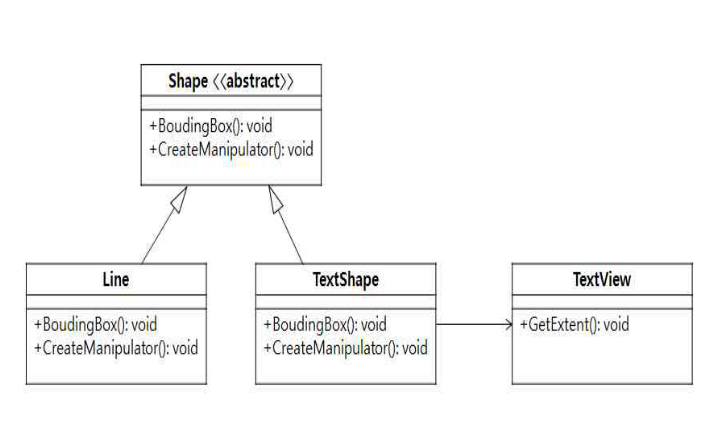
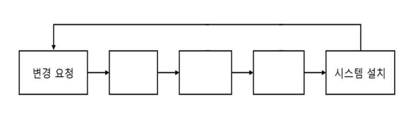
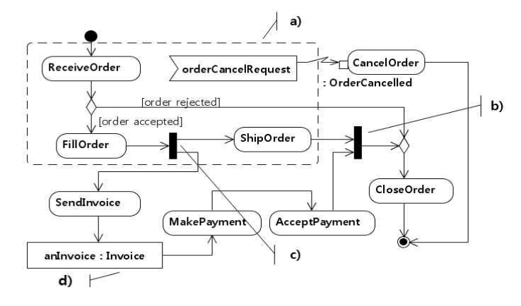
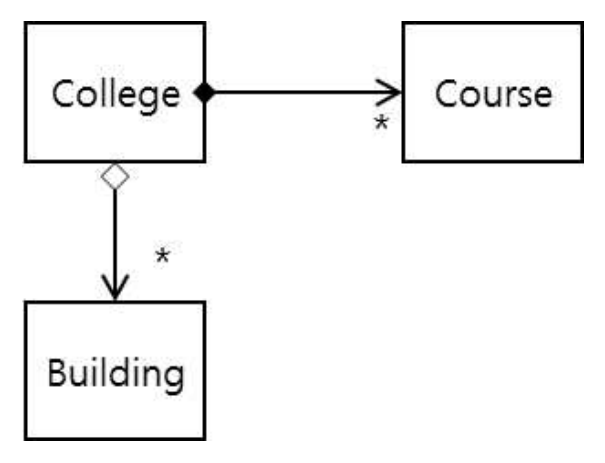

작성 기준: 업로드된 소프트웨어공학 강의자료(Part I~III, [1]1. SW 공학) 우선 근거, 외부지식은 보조적으로만 사용(강의자료 미수록 항목은 각 문항에 명시)
정답 출처: 2017년(제18회) 정보시스템 감리사 필기시험 문제 및 답안.pdf (원본 Bold 표시 정답 - 페이지 렌더 이미지 직접 대조 확인)
정답 신뢰도: 매우 높음 (stroke-text 자동추출 25/25 + 보기 영역 렌더 확대 육안 대조 25/25 일치, 계산·코드 문항은 별도 재검산)
특이사항: 문항 34는 보기 ②와 ③이 모두 Bold 처리되어 있어 복수정답으로 확인되었다(500dpi 확대 및 글리프 render mode 재검증 완료).
기준 버전 주의: 본 회차는 2017년 시행분이다. CMM(27번)·MISRA C:2012(45번)·ISO/IEC 25010(48번) 등 기준이 명시된 문항은 이후 개정이 있었으므로, 각 문항의 「관련 이론 정리」 말미에 현행(2025년 기준) 변경사항을 병기하였다.
| 번호 | 정답 | 번호 | 정답 | 번호 | 정답 |
|---|---|---|---|---|---|
| 26 | ③ | 36 | ③ | 46 | ② |
| 27 | ④ | 37 | ① | 47 | ① |
| 28 | ② | 38 | ③ | 48 | ④ |
| 29 | ① | 39 | ④ | 49 | ② |
| 30 | ② | 40 | ① | 50 | ④ |
| 31 | ③ | 41 | ① | ||
| 32 | ④ | 42 | ② | ||
| 33 | ③ | 43 | ③ | ||
| 34 | ②,③(복수정답) | 44 | ② | ||
| 35 | ② | 45 | ④ |
2017년 제18회 소프트웨어공학은 계산 문항의 비중과 난이도가 최근 5개년 중 가장 높았던 회차다. 그리고 34번이 복수정답(②③) 으로 처리된 것이 이 회차의 가장 큰 특이점이다.
영역별 배분은 ① 테스트 4문항(28·31·38·44), ② 설계 원칙·패턴 4문항(30·47·49·50), ③ UML·모델링 2문항(46·49), ④ 프로세스·방법론 5문항(26·27·32·36·41), ⑤ 계산 3문항(38·42·43), ⑥ 코드·표준 4문항(34·37·45·48), ⑦ 아키텍처·재공학·형상관리 4문항(33·35·39·40) 이다.
이 회차의 특징 네 가지.
첫째, 계산 문항 세 개가 모두 성격이 다르다. 38번은 회귀 시험 테스트 케이스 수(집합 관계 해석), 42번은 SLOC 기반 인력 산정(생산성 나눗셈), 43번은 CPM 임계경로 + 지체상금(경로 계산 후 금액 산출)이다. 특히 43번은 감리 과목의 지체상금 지식까지 요구하는 융합형이다.
둘째, 34번 복수정답. 자바 코드의 빈칸 네 개 중 "틀린 것"을 고르는 문항인데, ②(Lamp.theLamp)와 ③(setCommand(theCommand)) 이 모두 정답 처리되었다. ②는 명백한 오류(this.theLamp 여야 함)이고, ③은 생성자에서 세터를 호출하는 형태로 동작은 하지만 세미콜론 누락·생성자 내 오버라이드 가능 메서드 호출이라는 문제가 지적되어 함께 인정된 것으로 보인다.
셋째, MISRA C:2012(45번) 라는 임베디드 코딩 표준이 등장했다. 부수 효과·암묵 변환·else 누락을 모두 위반으로 잡아야 하는 고난도 문항이다.
넷째, 설계 원칙을 코드·다이어그램으로 판별시키는 문항이 많다. 30번(Adapter), 47번(OCP), 49번(합성 vs 집합), 50번(다형성 부재)이 모두 코드나 UML을 읽고 개념을 역추적하는 형태다.
강의자료 커버리지는 디자인 패턴·테스트·형상관리에서 양호하나, ISP/BPR 업무절차(26번)·MISRA C(45번)·UML 활동 다이어그램 요소명(46번)·회귀 시험 TC 산정(38번) 은 업로드된 강의자료에 직접 수록되어 있지 않아 외부지식으로 보완했다.
| 항목 | 내용 |
|---|---|
| 문서명 | 정보시스템 감리사 소프트웨어공학 기출문제 해설집 - 2017년 제18회 |
| 대상 문항 | Q26 ~ Q50 (소프트웨어공학) |
| 원본 출처 | 2017년(제18회) 정보시스템 감리사 필기시험 문제 및 답안.pdf (p.6~11) |
| 정답 확인 방법 | stroke-text(글리프 render mode) 자동추출 + 보기 영역 렌더 확대 육안 대조 (25/25 일치) |
| 특이 문항 | 문항 34 — 복수정답(②,③). 보기 ②·③ 모두 Bold 및 stroke type=1 확인 |
| 그림 포함 문항 | 30 클래스 다이어그램(Adapter), 39 변경 제어 절차 흐름도, 46 UML 활동 다이어그램, 49 클래스 다이어그램(합성·집합) — 모두 이미지 + 서술 전사 병기 |
| 표·코드 제시 문항 | 26·27·34·36·38·40·42·43·44·45·47·50번 — 이미지 대신 마크다운 표/코드블록으로 전사 |
| 근거 강의자료 | SE01 Part I(V1.2), SE02·SE03 Part I(아키텍처), SE04 Part II(디자인·UML), SE05 디자인 패턴, SE06 Part II(SW 개발), SE07 Part III(테스트·유지관리), SE08 Part III(품질관리·비용산정), SE09 [1]1. SW 공학(V1.1) |
| 강의자료 미수록(외부지식 보완) 항목 | ISP/BPR 업무절차(26), 회귀 시험 TC 산정(38), MISRA C:2012 규칙(45), UML 활동 다이어그램 요소명(46), 스프링 애노테이션(37) |
| 기준 버전 | 2017년 출제 당시 기준 + 현행(2025년) 개정사항 병기 |
다음은 정보전략계획 및 업무재설계(ISP/BPR)의 업무활동들이다. 업무절차와 업무활동의 연결이 가장 적절한 것은?
| 기호 | 업무활동 | 기호 | 업무활동 |
|---|---|---|---|
| 가 | 정보기술 환경분석 | 바 | 정보전략 수립 |
| 나 | 업무분석 | 사 | 정보관리체계수립 |
| 다 | 정보시스템분석 | 아 | 정보시스템구조 설계 |
| 라 | 차이분석 | 자 | 업무프로세스 개선계획 수립 |
| 마 | 벤치마킹 | 차 | 기능점수 도출 |
① 이행계획수립 - 바, 사, 아, 자
② 미래모델설계 - 마, 아, 자, 차
③ 현황분석 - 나, 다, 라, 마
④ 환경분석 - 가, 나, 다, 라
정답 : ③번
정답 신뢰도 : 매우 높음 (원본 Bold 확인)
| 항목 | 내용 |
|---|---|
| 연도 | 2017년 (제18회) |
| 과목 | 소프트웨어공학 |
| 문항번호 | 26번 |
| 난이도 | 중 |
| 출제주제 | ISP/BPR - 업무절차와 업무활동의 대응 |
ISP/BPR은 3~4년 주기로 출제되며, SW공학과 감리 과목 양쪽에서 나온다. 형태는 ① 단계별 활동 매칭(본 문항), ② ISP/ISMP/EA 구분, ③ 산출물 종류다.
| 연도 | 문항번호 | 핵심개념 |
|---|---|---|
| 2017 | 42 | SLOC 기반 인력 산정 |
| 2019 | 26 | 품질 속성 시나리오 |
| 2022 | 26 | 요구사항 추출 기법 |
"환경(밖) → 현황(As-Is + 벤치마킹 + 갭) → 미래모델(To-Be) → 이행계획(로드맵·예산·FP)"
벤치마킹은 현황분석, 기능점수 도출은 이행계획수립.
ISP/BPR은 네 단계로 진행되며, 각 단계의 성격이 뚜렷하다.
| 단계 | 성격 | 주요 활동 |
|---|---|---|
| 환경분석 | 외부를 본다 | 정보기술 환경분석(가), 법·제도 분석, 상위계획 검토 |
| 현황분석 | 내부(As-Is) 를 본다 | 업무분석(나), 정보시스템분석(다), 차이분석(라), 벤치마킹(마) |
| 미래모델설계 | To-Be를 그린다 | 정보시스템구조 설계(아), 업무프로세스 개선계획 수립(자), 정보전략 수립(바) |
| 이행계획수립 | 실행 계획을 짠다 | 정보관리체계수립(사), 로드맵·단계별 이행계획, 기능점수 도출(차) 로 예산 산정 |
보기 ③의 현황분석 = 나, 다, 라, 마 가 위 표와 정확히 일치한다.
현황분석에 차이분석·벤치마킹이 들어가는 이유
- 업무분석(나)·정보시스템분석(다) 으로 As-Is를 파악하고,
- 벤치마킹(마) 으로 선진 사례·목표 수준을 확인한 뒤,
- 차이분석(라, gap analysis) 으로 현재와 목표의 격차를 도출한다.
즉 "현재를 파악 → 기준을 찾음 → 격차를 도출" 이 하나의 흐름으로 묶여 현황분석 단계를 구성한다. 차이분석 결과가 곧 미래모델설계의 입력이 된다.
따라서 정답은 ③번.
아(정보시스템구조 설계) 와 자(업무프로세스 개선계획 수립) 는 미래모델설계 단계의 활동이다. 이행계획수립은 설계된 미래 모델을 언제·어떤 순서로·얼마의 예산으로 구현할 것인가를 정하는 단계이므로, 설계 활동 자체가 들어가면 안 된다.
아·자는 미래모델설계가 맞지만, 마(벤치마킹) 는 현황분석, 차(기능점수 도출) 는 이행계획수립(예산 산정) 단계다. 두 개가 잘못 끼어 있다.
차(기능점수 도출)의 위치: 기능점수는 개발 규모와 예산을 산정하기 위한 것이므로 이행계획수립 단계에서 수행한다. 설계 단계로 오해하기 쉽다.
가(정보기술 환경분석) 만 맞고 나·다·라는 모두 현황분석이다. 환경분석은 외부, 현황분석은 내부라는 구분이 핵심이다. 업무·정보시스템은 조직 내부의 대상이므로 환경분석이 아니다.
③과 ④의 갈림길: 두 보기가 나·다·라를 공유한다. 여기에 마(벤치마킹) 를 붙이면 현황분석(③), 가(정보기술 환경분석) 를 붙이면 환경분석(④)이 된다. 벤치마킹이 현황분석이라는 것을 알아야 갈린다.
ISP(정보화전략계획)의 표준 절차
| 단계 | 산출물 |
|---|---|
| 환경분석 | 대내외 환경분석서, 정보기술 동향 분석서, 법·제도 검토서 |
| 현황분석 | As-Is 업무분석서, 정보시스템 현황분석서, 벤치마킹 보고서, 갭 분석서 |
| 미래모델설계 | To-Be 업무 프로세스, 정보시스템 구조도(아키텍처), 정보전략 |
| 이행계획수립 | 이행 로드맵, 단계별 실행계획, 소요예산(기능점수 기반), 정보관리체계 |
ISP vs BPR vs EA 구분
| 구분 | 초점 |
|---|---|
| ISP(정보화전략계획) | 정보화 방향과 계획 수립 |
| BPR(업무재설계) | 업무 프로세스의 근본적 재설계 |
| ISMP(정보시스템 마스터플랜) | ISP보다 상세한 요구사항 정의(발주 직전) |
| EA/ITA | 조직 전체의 아키텍처 관리 체계 |
ISMP는 2010년대 도입된 제도로, ISP의 결과가 너무 추상적이어서 발주 시 요구사항이 불명확해지는 문제를 보완한다. 감리 과목에서도 자주 출제된다.
차이분석(Gap Analysis)의 위치
[현황분석]
업무분석(As-Is) ─┐
정보시스템분석 ├─→ 차이분석(Gap) ─→ [미래모델설계](To-Be)
벤치마킹(목표) ─┘
차이분석은 As-Is와 목표 수준의 격차를 정량·정성적으로 도출하며, 그 격차가 곧 개선 과제가 된다.
강의자료 수록 여부: 강의자료는 요구공학·개발방법론을 다루나 ISP/BPR의 단계별 활동 분류는 직접 수록되어 있지 않아 외부지식으로 보완했다. 이 주제는 감리 과목(정보화 계획)과 겹치는 영역이다.
공공기관의 대형 정보화 사업은 대부분 ISP → ISMP → 구축사업 순으로 진행된다. 감리에서는 ISP 산출물을 검토할 때 ① 현황분석이 실제 데이터·인터뷰에 근거하는가(추정으로 채우지 않았는가), ② 차이분석 결과가 To-Be 과제로 연결되는가, ③ 이행계획의 예산 산정 근거(기능점수)가 제시되었는가를 점검한다.
특히 ③이 부실하면 후속 구축사업에서 예산 부족으로 과업 축소가 발생한다.
ISP 단계 문항은 각 단계의 "질문" 으로 구분한다.
- 환경분석: "밖에서 무슨 일이 일어나고 있나?" (기술 동향·법제도)
- 현황분석: "우리는 지금 어떤 상태인가? 목표와 얼마나 차이 나나?" (업무·시스템·벤치마킹·갭)
- 미래모델설계: "어떤 모습이 되어야 하나?" (To-Be 프로세스·아키텍처)
- 이행계획수립: "언제·얼마로 할 것인가?" (로드맵·예산·기능점수)
벤치마킹은 현황분석, 기능점수는 이행계획이 가장 자주 나오는 함정이다.
CMM(Capability Maturity Model)은 소프트웨어 프로세스 성숙도를 높이기 위하여 필요한 작업들에 대한 단계적 모델을 제시하고 있다. 다음에 제시한 주요 프로세스 영역들이 처음으로 포함되는 단계로 가장 적절한 것은?
- 소프트웨어 프로젝트 계획
- 소프트웨어 프로젝트 추적 및 감독
- 소프트웨어 하청 관리
- 소프트웨어 품질 보증
- 소프트웨어 형상 관리
- 요구 관리
① 최적단계(Optimizing)
② 관리단계(Managed)
③ 정의단계(Defined)
④ 반복단계(Repeatable)
정답 : ④번
정답 신뢰도 : 매우 높음 (원본 Bold 확인)
| 항목 | 내용 |
|---|---|
| 연도 | 2017년 (제18회) |
| 과목 | 소프트웨어공학 |
| 문항번호 | 27번 |
| 난이도 | 중 |
| 출제주제 | CMM - 레벨 2(반복단계)의 핵심 프로세스 영역 |
프로세스 성숙도 모델은 2~3년 주기로 반드시 출제된다. 2017년 27번(CMM 레벨 2 KPA), 2018년 34번(SPICE 수준 순서), 2019년 34번(CMMI 레벨 판정)으로 3년 연속 다른 모델을 물었다. 세 모델의 레벨 명칭 대조표를 반드시 외워 두어야 한다.
| 연도 | 문항번호 | 핵심개념 |
|---|---|---|
| 2018 | 34 | SPICE 능력수준 순서 |
| 2018 | 42 | SP 품질인증 등급 |
| 2019 | 34 | CMMI 성숙도 레벨 판정 |
CMM 5단계: "초(Initial) · 반(Repeatable) · 정(Defined) · 관(Managed) · 최(Optimizing)"
CMM 레벨 2 = Repeatable ≠ CMMI 레벨 2 = Managed — 모델 이름을 먼저 확인할 것.
레벨 2 KPA 6개: 요구관리 · 계획 · 추적감독 · 하청관리 · 품질보증 · 형상관리
제시된 여섯 개 프로세스 영역은 모두 개별 프로젝트를 관리하기 위한 기본 활동이다.
| KPA | 성격 |
|---|---|
| 요구 관리(Requirements Management) | 요구사항 기준선 설정·변경 통제 |
| 소프트웨어 프로젝트 계획(SPP) | 추정·일정·자원 계획 |
| 소프트웨어 프로젝트 추적 및 감독(SPTO) | 계획 대비 실적 관리 |
| 소프트웨어 하청 관리(SSM) | 외주 계약·관리 |
| 소프트웨어 품질 보증(SQA) | 프로세스·산출물 준수 확인 |
| 소프트웨어 형상 관리(SCM) | 산출물 버전·변경 통제 |
이들은 조직 차원의 표준 프로세스가 아니라 프로젝트 하나하나를 통제하는 활동이며, CMM 레벨 2 = 반복단계(Repeatable) 의 6개 핵심 프로세스 영역(KPA)과 정확히 일치한다.
"반복(Repeatable)"이라는 이름은 "이전에 성공했던 방식을 유사한 프로젝트에서 반복할 수 있다" 는 뜻이다. 아직 조직 표준은 없지만, 프로젝트별로 계획·추적·통제가 이루어져 성과의 재현 가능성이 생긴 단계다.
따라서 정답은 ④번.
⚠ CMM과 CMMI의 레벨 2 명칭이 다르다 — 이 문항의 핵심 함정
| 레벨 | CMM(구 모델) | CMMI(현행) |
|---|---|---|
| 1 | Initial | Initial |
| 2 | Repeatable(반복) | Managed(관리) |
| 3 | Defined | Defined |
| 4 | Managed(관리) | Quantitatively Managed(정량적 관리) |
| 5 | Optimizing | Optimizing |
문제가 "CMM" 이라고 명시했으므로 레벨 2는 Repeatable이다. CMMI 기준으로 답하면 ②(Managed)를 고르게 되는데, 이것이 출제자가 노린 함정이다.
CMMI라면 맞지만 CMM에서는 레벨 4다. CMM의 Managed 단계는 프로세스와 제품 품질을 정량적으로 측정·관리하는 단계로, KPA는 정량적 프로세스 관리(QPM) 와 소프트웨어 품질 관리(SQM) 두 개다.
제시된 여섯 개 활동은 정량적 관리와 무관하므로 레벨 4가 아니다. 가장 유력한 오답이며, CMMI에 익숙할수록 걸리기 쉽다.
CMM 레벨 3으로, 조직 차원의 표준 프로세스를 확립하는 단계다. KPA는 조직 프로세스 중점(OPF), 조직 프로세스 정의(OPD), 교육 프로그램(TP), 통합 소프트웨어 관리(ISM), 소프트웨어 제품 공학(SPE), 그룹 간 조정(IC), 동료 검토(Peer Review) 7개다.
제시된 활동에는 "조직", "표준", "교육" 같은 표현이 전혀 없으므로 레벨 3이 아니다.
CMM 레벨 5로, 지속적 프로세스 개선을 수행한다. KPA는 결함 예방(DP), 기술 변화 관리(TCM), 프로세스 변화 관리(PCM) 3개다. 제시된 활동과 성격이 완전히 다르다.
CMM 5단계와 KPA 전체
| 레벨 | 명칭 | KPA 수 | 주요 KPA |
|---|---|---|---|
| 1 | Initial(초기) | 0 | 없음 — 개인 역량 의존, 예측 불가 |
| 2 | Repeatable(반복) | 6 | 요구관리, 프로젝트 계획, 추적·감독, 하청관리, 품질보증, 형상관리 |
| 3 | Defined(정의) | 7 | 조직 프로세스 중점·정의, 교육 프로그램, 통합 SW 관리, SW 제품 공학, 그룹 간 조정, 동료 검토 |
| 4 | Managed(관리) | 2 | 정량적 프로세스 관리, SW 품질 관리 |
| 5 | Optimizing(최적화) | 3 | 결함 예방, 기술 변화 관리, 프로세스 변화 관리 |
세 모델의 레벨 명칭 비교 (2018년 34번·2019년 34번과 연결)
| 수준 | CMM | CMMI | SPICE |
|---|---|---|---|
| 0 | — | — | Incomplete |
| 1 | Initial | Initial | Performed |
| 2 | Repeatable | Managed | Managed |
| 3 | Defined | Defined | Established |
| 4 | Managed | Quantitatively Managed | Predictable |
| 5 | Optimizing | Optimizing | Optimizing |
판별법: 보기에 "Repeatable" 이 있으면 CMM, "Quantitatively Managed" 가 있으면 CMMI, "Established/Predictable" 이 있으면 SPICE다.
CMM → CMMI 통합 배경
CMM은 소프트웨어(SW-CMM), 시스템공학(SE-CMM), 인력(P-CMM) 등 여러 모델로 분화되어 혼란이 있었다. 이를 하나로 통합(Integration) 한 것이 CMMI(2000년)이며, 이 과정에서 레벨 2·4의 명칭이 조정되었다.
현행(2025년) 기준: CMM은 2005년 공식 폐기되었고 현재는 CMMI V2.0(2018) 이 사용된다. V2.0에서는 프로세스 영역이 실천 영역(Practice Area) 으로 재편되었으나 성숙도 레벨 1~5 체계는 유지된다. 본 문항은 CMM 기준이므로 Repeatable로 답한다.
CMM/CMMI 레벨은 제안 평가의 가점 요소로 쓰이지만, 감리에서는 인증 보유 여부보다 실제 적용 여부를 본다. 레벨 2에 해당하는 여섯 활동은 어떤 프로젝트에서도 최소한으로 갖춰야 할 것이므로, 감리 점검 항목과 거의 그대로 겹친다.
| CMM 레벨 2 KPA | 감리 점검 항목 |
|---|---|
| 요구 관리 | 요구사항정의서·과업대비표 관리 |
| 프로젝트 계획 | 사업수행계획서·WBS |
| 추적 및 감독 | 진척 보고·EVM |
| 하청 관리 | 하도급 계약·관리 |
| 품질 보증 | 품질보증계획·검토 활동 |
| 형상 관리 | 형상관리계획서·베이스라인 |
프로세스 성숙도 모델 문항은 "어느 모델인가"를 먼저 확인해야 한다. 문제에 CMM이라고 쓰여 있으면 레벨 2 = Repeatable, CMMI라고 쓰여 있으면 레벨 2 = Managed다.
그다음 KPA의 성격으로 레벨을 판정한다.
- 프로젝트 단위 관리 → 레벨 2
- 조직 표준·교육·동료검토 → 레벨 3
- 정량·통계 → 레벨 4
- 결함 예방·혁신 → 레벨 5
객체지향 소프트웨어 개발 시에 적용할 수 있는 클래스 테스팅 방법으로 가장 적절하지 않은 것은?
① 슬라이싱(slicing) 기반 테스팅
② 베타(beta) 테스팅
③ 상태기반(state based) 테스팅
④ 데이터 흐름 기반 테스팅
정답 : ②번 (가장 적절하지 않은 것)
정답 신뢰도 : 매우 높음 (원본 Bold 확인)
| 항목 | 내용 |
|---|---|
| 연도 | 2017년 (제18회) |
| 과목 | 소프트웨어공학 |
| 문항번호 | 28번 |
| 난이도 | 중 |
| 출제주제 | 객체지향 테스팅 - 클래스 테스팅 기법의 범위 |
객체지향 테스팅은 2~3년 주기로 출제된다. 형태는 ① 기법 분류(본 문항), ② 상태기반 테스팅 적용(2019년 27번), ③ 객체지향 테스트의 어려움(캡슐화·상속·다형성)이다.
| 연도 | 문항번호 | 핵심개념 |
|---|---|---|
| 2017 | 31 | 테스팅 기법 설명 적정성 |
| 2018 | 47 | V 모델과 테스트 레벨 |
| 2019 | 27 | 상태 전이 테스팅 |
"클래스 테스팅 = 객체지향의 단위 테스트."
베타 테스트는 인수 레벨 — 실제 사용자가 자기 환경에서, 개발자 입회 없이.
단위 기법: 상태기반 · 데이터흐름 · 슬라이싱 · 경로 · 조건
클래스 테스팅은 객체지향에서 클래스 하나를 대상으로 하는 단위 테스트다. 클래스는 상태(속성)와 행위(메서드)를 함께 가지므로, 절차지향의 단위 테스트와 달리 상태 변화와 메서드 호출 순서까지 고려해야 한다.
| 보기 | 기법 | 성격 | 클래스 테스팅 |
|---|---|---|---|
| ① | 슬라이싱 기반 테스팅 | 특정 변수에 영향을 주는 코드 조각(slice) 만 추출해 테스트 | 화이트박스 단위 기법 O |
| ② | 베타 테스팅 | 실제 사용자가 자신의 환경에서 수행하는 인수 테스트 | 인수 테스트 레벨 X |
| ③ | 상태기반 테스팅 | 객체의 상태 전이를 기준으로 메서드 호출 순서 검증 | 클래스 테스팅의 대표 기법 O |
| ④ | 데이터 흐름 기반 테스팅 | 변수의 정의(def)-사용(use) 경로 검증 | 화이트박스 단위 기법 O |
② 베타 테스팅만 테스트 레벨이 다르다.
베타 테스팅은 완성된 제품 전체를 대상으로, 개발 조직 밖의 실제 사용자가 수행한다. 개별 클래스의 내부 상태나 메서드를 검증하는 활동이 아니므로 클래스 테스팅 방법이 될 수 없다.
따라서 가장 적절하지 않은 것은 ②번.
객체지향 테스트의 레벨
| 레벨 | 대상 | 명칭 |
|---|---|---|
| 단위 | 클래스 | 클래스 테스팅 |
| 통합 | 협력하는 클래스 집합 | 클러스터 테스팅, 스레드 기반·사용 기반 통합 |
| 시스템 | 전체 시스템 | 시스템 테스팅 |
| 인수 | 사용자 관점 | 알파·베타 테스팅 |
알파 vs 베타 테스팅
| 구분 | 알파 테스트 | 베타 테스트 |
|---|---|---|
| 장소 | 개발자 환경(통제된 환경) | 실제 사용자 환경 |
| 수행자 | 사용자(개발자 입회) | 실제 최종 사용자 |
| 개발자 입회 | 있음 | 없음 |
| 목적 | 사용성·기능 초기 확인 | 실사용 환경에서의 결함 발견 |
2017년 31번 보기 ③ 에서 "설치 테스팅은 개발의뢰자가 개발환경에서 계약에 명시된 항목을 테스트"라는 서술이 알파 테스트의 정의여서 틀린 것으로 출제되었다. 같은 회차에서 인수 테스트 개념을 두 번 물었다.
객체지향 테스팅의 어려움
| 특성 | 테스트에 미치는 영향 |
|---|---|
| 캡슐화 | 내부 상태를 밖에서 관찰하기 어려움 → 관찰성(observability) 저하 |
| 상속 | 상위 클래스에서 테스트한 메서드도 하위에서 재테스트 필요(문맥이 달라짐) |
| 다형성 | 런타임에 어느 구현이 호출될지 결정 → 경로가 동적으로 결정 |
| 동적 바인딩 | 정적 분석만으로 호출 관계 확정 불가 |
이 때문에 객체지향에서는 테스트 가능성(testability)을 설계 단계에서 확보하는 것이 중요하다(2020년 34번과 연결).
클래스 테스팅의 추가 기법
| 기법 | 내용 |
|---|---|
| 메서드 순서 조합 | 유효한 호출 시퀀스와 무효 시퀀스 검증 |
| 불변식(invariant) 검증 | 모든 메서드 호출 전후에 클래스 불변식이 유지되는지 |
| 경계값 + 동등분할 | 메서드 매개변수 대상 |
| 상속 계층 테스트 | 하위 클래스에서 상위 테스트 케이스 재실행(LSP 검증) |
JUnit 기반 단위 테스트가 곧 클래스 테스팅이다. 감리에서는 ① 핵심 업무 클래스에 단위 테스트가 존재하는가, ② 상태를 가진 클래스에 상태 전이 케이스가 포함되었는가, ③ 단위 테스트가 외부 시스템에 의존하지 않는가(스텁·목 사용)를 점검한다.
베타 테스트는 공공 시스템에서 시범 운영·파일럿 서비스 형태로 수행되며, 이는 인수 단계의 활동이므로 단위 테스트 항목과 구분해 확인한다.
이 유형은 "테스트 레벨이 다른 것 하나" 를 찾는 문제다. 보기에 섞이는 레벨 불일치 항목을 정리해 두자.
| 항목 | 실제 레벨 |
|---|---|
| 알파·베타 테스트 | 인수 |
| 시스템 테스트, 성능·부하·스트레스·복구 | 시스템 |
| 빅뱅·하향식·상향식 | 통합(전략) |
| 상태기반·데이터흐름·슬라이싱·경로·조건 | 단위(화이트박스) |
프로그램 슬라이싱(program slicing) 은 특정 지점의 특정 변수 값에 영향을 미치는 문장들만 추려낸 부분 프로그램을 만드는 기법이다. 클래스의 한 속성에 영향을 주는 메서드·문장만 분리해 집중 테스트할 수 있어 클래스 테스팅에 유용하다.
| 종류 | 내용 |
|---|---|
| 정적 슬라이싱 | 모든 실행에 대해 영향을 주는 문장 |
| 동적 슬라이싱 | 특정 입력에서 실제로 영향을 준 문장 |
클래스 테스팅의 가장 대표적인 기법이다. 객체는 상태를 가지므로, 같은 메서드를 호출해도 현재 상태에 따라 결과가 달라진다(2019년 27번 엘리베이터 예시). 따라서 상태 전이도를 그려 모든 상태·전이·무효 전이를 검증한다.
예: Stack 클래스 → 비어있음 / 일부참 / 가득참 상태에서 push()·pop() 동작 검증
변수의 정의(definition)와 사용(use) 관계를 추적하는 화이트박스 기법이다.
| 이상 패턴 | 의미 |
|---|---|
| du | 정의 후 사용 — 정상 |
| dd | 정의 후 재정의 — 앞의 정의가 무의미 |
| ud | 사용 후 정의 — 초기화 전 사용(버그) |
| dk | 정의 후 소멸 — 사용되지 않음 |
클래스에서는 속성(멤버 변수)의 정의-사용 흐름이 메서드를 넘나들며 발생하므로 특히 중요하다.
요구사항 분석에서는 시스템의 범위를 파악하는 것이 중요하다. 다음 중 시스템의 범위 표현 기법과 가장 거리가 먼 것은?
① state transition diagram
② event list
③ ecosystem map
④ context diagram
정답 : ①번 (가장 거리가 먼 것)
정답 신뢰도 : 매우 높음 (원본 Bold 확인)
| 항목 | 내용 |
|---|---|
| 연도 | 2017년 (제18회) |
| 과목 | 소프트웨어공학 |
| 문항번호 | 29번 |
| 난이도 | 중 |
| 출제주제 | 요구공학 - 시스템 범위(scope) 표현 기법 |
요구공학은 매 회차 1~2문항 출제된다. 논점은 ① 모델링 기법 분류(본 문항), ② 요구사항 검증 점검 유형(2020년 26번), ③ 기능/비기능 분류(2019년 38번), ④ 품질 속성 시나리오(2019년 26번)다.
| 연도 | 문항번호 | 핵심개념 |
|---|---|---|
| 2019 | 26 | 품질 속성 시나리오 |
| 2019 | 38 | 기능·비기능 요구사항 |
| 2020 | 26 | 요구사항 검증 점검 유형 |
"범위 = 경계를 긋는 것: 컨텍스트 다이어그램 · 이벤트 목록 · 생태계 맵"
상태 전이도는 내부 행위 모델 — 범위가 아니다.
"범위 표현"의 정의를 먼저 잡아야 한다. 범위(scope) 표현 기법은 "무엇이 시스템 안에 있고 무엇이 밖에 있는가", "시스템이 외부와 어떻게 맞닿아 있는가" 를 보여 주는 것이다.
| 보기 | 기법 | 보여 주는 것 | 범위 표현 |
|---|---|---|---|
| ① | state transition diagram(상태 전이도) | 시스템 내부의 상태와 전이 — 동적 행위 | X |
| ② | event list(이벤트 목록) | 시스템이 반응해야 할 외부 사건 목록 → 반응 대상의 경계 | O |
| ③ | ecosystem map(생태계 맵) | 대상 시스템과 연관된 주변 시스템 전체 지형 | O |
| ④ | context diagram(컨텍스트 다이어그램) | 시스템을 하나의 블랙박스로 두고 외부 엔티티·데이터 흐름 표시 | O |
① 상태 전이도만 내부 행위를 다룬다.
상태 전이도는 시스템이 어떤 상태를 거치며 어떻게 반응하는지를 표현하는 동적 모델링 기법이다. 시스템 내부를 들여다보는 도구이므로, 경계를 긋는 범위 표현과는 목적이 정반대다.
따라서 가장 거리가 먼 것은 ①번.
②③④가 범위 기법인 이유
- 컨텍스트 다이어그램(④): 가장 전형적인 범위 도구다. 시스템을 원 하나로 그리고 그 주위에 외부 엔티티(사용자·타 시스템)를 배치한 뒤 데이터 흐름을 연결한다. 원 안이 우리 범위, 밖이 외부임을 한눈에 보여 준다.
- 이벤트 목록(②): 시스템이 반응해야 할 외부 사건을 열거한다. 목록에 있으면 범위 안, 없으면 범위 밖이다. 컨텍스트 다이어그램의 텍스트 버전에 해당한다.
- 생태계 맵(③): Karl Wiegers 등이 제안한 기법으로, 대상 시스템과 주변 시스템들의 관계를 넓게 조망한다. 컨텍스트 다이어그램보다 한 단계 더 바깥을 본다.
요구공학 모델링 기법의 분류
| 관점 | 기법 | 보여 주는 것 |
|---|---|---|
| 범위(scope) | 컨텍스트 다이어그램, 이벤트 목록, 생태계 맵, 유스케이스 다이어그램(경계 상자) | 시스템 경계와 외부 관계 |
| 기능(function) | DFD, 유스케이스 명세, 기능 분해도 | 무엇을 하는가 |
| 데이터(data) | ERD, 데이터 사전, 클래스 다이어그램 | 무엇을 다루는가 |
| 동적 행위(behavior) | 상태 전이도, 시퀀스·활동 다이어그램 | 언제·어떤 순서로 |
①이 속한 곳은 "동적 행위" 이며, 범위와는 다른 관점이다.
컨텍스트 다이어그램 작성 규칙
| 규칙 | 내용 |
|---|---|
| 프로세스 | 오직 1개(시스템 전체) |
| 외부 엔티티 | 시스템 밖의 사람·조직·타 시스템 |
| 데이터 흐름 | 외부 엔티티 ↔ 시스템 |
| 데이터 저장소 | 표시하지 않음(내부 요소이므로) |
범위 정의가 중요한 이유 (감리 관점)
범위가 모호하면 과업 범위 분쟁으로 직결된다. 특히 공공 사업에서는
| 문제 | 결과 |
|---|---|
| 외부 연계 대상이 명시되지 않음 | 추가 연계 요구 → 과업 증가 |
| 데이터 이관 범위 불명확 | 이관 대상 확대 → 일정 지연 |
| "기존 시스템과 연동" 만 기술 | 연동 방식·건수 논쟁 |
따라서 요구정의단계 감리에서 컨텍스트 다이어그램과 인터페이스 목록의 존재·구체성을 반드시 점검한다.
강의자료 수록 여부: 강의자료는 요구공학·구조적 분석(DFD)을 다루나 ecosystem map·event list 같은 범위 기법의 명칭 분류는 수록되어 있지 않아 외부지식(Karl Wiegers, Software Requirements)으로 보완했다.
제안요청서(RFP)와 사업수행계획서에 컨텍스트 다이어그램이 포함되어 있는지가 범위 관리의 출발점이다. 감리에서는 ① 연계 대상 시스템이 모두 식별되었는가, ② 각 연계의 방향·주기·데이터 항목이 정의되었는가, ③ 범위 외(out of scope) 항목이 명시적으로 배제 선언되었는가를 확인한다.
③번, 즉 "무엇을 하지 않는지"를 명시하는 것이 분쟁 예방에 특히 효과적이다.
요구공학 기법 분류 문항은 "경계를 긋는가, 내부를 그리는가" 로 판단한다.
- 경계·외부 인터페이스 → 범위 기법 (컨텍스트 다이어그램, 이벤트 목록, 생태계 맵)
- 내부 상태·순서·흐름 → 행위 모델 (상태 전이도, 시퀀스, 활동 다이어그램)
- 내부 데이터 구조 → 데이터 모델 (ERD, 클래스 다이어그램)
"~ diagram"이라고 다 같은 것이 아니다. 컨텍스트 다이어그램은 범위, 상태 전이도는 행위다.
시스템이 처리해야 할 비즈니스 이벤트를 목록화한다. 각 이벤트마다 자극(trigger)·발생원·시스템 반응을 기술하며, 이 목록이 곧 기능 범위의 정의가 된다.
| 이벤트 | 발생원 | 시스템 반응 |
|---|---|---|
| 고객이 주문을 제출한다 | 고객 | 주문 접수·재고 확인 |
| 결제일이 도래한다 | 시간(temporal) | 자동 청구서 발행 |
이벤트는 외부 사건(external)·시간 사건(temporal)·상태 사건(state) 으로 분류한다.
대상 시스템을 중심으로 연결된 모든 시스템을 그려 정보 흐름과 의존 관계를 파악한다. 컨텍스트 다이어그램이 직접 인터페이스만 다루는 데 비해, 생태계 맵은 간접 관계까지 포함해 더 넓은 시야를 제공한다.
구조적 분석(DFD)의 레벨 0 다이어그램이다.
[고객] ──주문 정보──> ( 주문관리 시스템 ) ──출고 지시──> [물류 시스템]
↑
결제 승인 응답
|
[PG 시스템]
원 안이 개발 범위, 사각형이 외부 엔티티, 화살표가 인터페이스다. 감리에서 범위 합의 문서로 가장 널리 쓰인다.
다음은 그래픽 요소들(선, 텍스트)을 그리고 배치할 수 있는 편집도구의 클래스 다이어그램이다. 다른 도구의 TextView 클래스를 사용하기 위하여 TextShape 클래스를 Shape의 서브클래스로 생성하였다. 이 편집도구에 사용된 디자인 패턴으로 가장 적절한 것은?

(그림 서술 전사)
| 클래스 | 표기 | 연산 |
|---|---|---|
| Shape | «abstract»(추상 클래스) | +BoudingBox(): void+CreateManipulator(): void |
| Line | Shape 상속(속 빈 삼각형) | +BoudingBox(): void+CreateManipulator(): void |
| TextShape | Shape 상속(속 빈 삼각형) | +BoudingBox(): void+CreateManipulator(): void |
| TextView | (외부 도구의 기존 클래스) | +GetExtent(): void |
관계
- Line ─▷ Shape (일반화)
- TextShape ─▷ Shape (일반화)
- TextShape → TextView (사용·위임)
즉 TextView 는 GetExtent() 라는 다른 이름의 연산을 가진 기존 클래스이고, TextShape 가 이를 BoudingBox() 로 변환해 제공한다.
① Factory 패턴
② Adapter 패턴
③ Strategy 패턴
④ Template Method 패턴
정답 : ②번
정답 신뢰도 : 매우 높음 (원본 Bold 확인)
GetExtent() ↔ BoudingBox()| 항목 | 내용 |
|---|---|
| 연도 | 2017년 (제18회) |
| 과목 | 소프트웨어공학 |
| 문항번호 | 30번 |
| 난이도 | 중 |
| 출제주제 | 디자인 패턴 - Adapter(클래스 어댑터) 식별 |
디자인 패턴은 매 회차 2~3문항으로 최상위 빈출이다. Adapter는 그중에서도 반복 출제되며, 2017년 30번(GoF 원서 예제 → 패턴명)과 2018년 48번(클래스 다이어그램 → 역할명)이 대표적이다. GoF 원서의 예제 그림이 그대로 나오는 경우가 있으므로 주요 패턴의 표준 예제를 알아 두면 유리하다.
| 연도 | 문항번호 | 핵심개념 |
|---|---|---|
| 2018 | 48 | Adapter 역할 식별(위임 방식) |
| 2018 | 39 | Facade 패턴 |
| 2020 | 28 | Bridge 패턴 |
"이미 있는 것(TextView)을 원하는 모양(Shape)으로 맞추려고 중간(TextShape)을 만들었다 = Adapter."
Target = 클라이언트가 기대하는 것 / Adapter = 변환하는 것 / Adaptee = 원래 있던 것
연산 이름이 다르면(GetExtent↔BoudingBox) 어댑터 신호.
이 다이어그램은 GoF Design Patterns 원서의 Adapter 패턴 예제 그 자체다. 원서에서는 드로잉 에디터가 Shape 인터페이스를 정의하고, 텍스트 편집을 위해 이미 존재하는 TextView 클래스를 재사용하려 할 때 TextShape 라는 어댑터를 만드는 사례로 설명한다.
세 역할 매핑
| GoF 역할 | 본 다이어그램 | 근거 |
|---|---|---|
| Target(목표 인터페이스) | Shape | 편집도구(클라이언트)가 기대하는 인터페이스 |
| Adapter(적응자) | TextShape | Shape를 상속하면서 TextView를 사용 |
| Adaptee(피적응자) | TextView | 이미 존재하는 다른 도구의 클래스, 연산명이 다름 |
왜 Adapter인가 — 세 가지 근거
"다른 도구의 TextView 클래스를 사용하기 위하여 TextShape 클래스를 Shape의 서브클래스로 생성하였다"
"이미 있는 것을 쓰기 위해 중간 클래스를 만들었다" — 이것이 Adapter의 정의다.
인터페이스 불일치
TextView 는 GetExtent() 를, Shape 는 BoudingBox() 를 요구한다. 이름과 형태가 다른 인터페이스를 맞추는 것이 어댑터의 일이다.
사후(after-the-fact) 적용
TextView 는 수정할 수 없는 외부 클래스다. 설계 단계에서 함께 만든 것이 아니라 나중에 붙인 것이므로 Bridge가 아니라 Adapter다.
따라서 정답은 ② Adapter 패턴.
객체 생성을 캡슐화하는 생성 패턴이다. Shape 계층에 createShape() 같은 팩토리 메서드가 있고 하위 클래스가 어떤 구체 객체를 만들지 결정하는 구조여야 한다.
본 다이어그램에는 생성 책임을 가진 메서드나 팩토리 클래스가 없다. CreateManipulator() 가 "Create"로 시작해 혼동을 유발하지만, 이는 GoF 예제에서 조작 핸들 객체를 반환하는 도메인 연산일 뿐 패턴의 핵심이 아니다.
알고리즘을 캡슐화해 런타임에 교체하는 행위 패턴이다. Strategy라면 Shape가 Shape 계층 밖의 전략 인터페이스를 합성으로 보유하고, 그 구현체를 갈아 끼우는 구조여야 한다.
본 다이어그램에서 TextView 는 교체 대상 알고리즘이 아니라 재사용 대상 기존 클래스다. 또 TextShape 하나만 TextView를 쓰므로 "여러 전략 중 선택"이라는 구도가 성립하지 않는다.
상위 클래스가 알고리즘 골격을 정의하고 하위가 일부 단계를 재정의하는 패턴이다. Shape 가 추상 클래스이고 Line·TextShape 가 상속하므로 겉모습은 비슷하다.
그러나 Template Method라면 Shape에 골격을 담은 구체 메서드(템플릿 메서드) 가 있고, 그 안에서 추상 훅 메서드를 호출해야 한다. 본 다이어그램의 Shape 는 두 연산 모두 하위에서 완전히 재정의되는 순수 추상 인터페이스에 가깝다.
결정적 차이: Template Method에는 외부 클래스(TextView)를 끌어다 쓰는 구조가 없다. 문제의 핵심인 "다른 도구의 클래스를 사용"이 설명되지 않는다.
③·④ 소거 요령: 문제 지문이 "TextView 클래스를 사용하기 위하여" 라고 목적을 명시했다. 외부 기존 클래스의 재사용이 목적이면 Adapter다.
Adapter 패턴의 두 형태
| 구분 | 클래스 어댑터 | 객체 어댑터 |
|---|---|---|
| 방식 | Adaptee를 상속 | Adaptee를 합성(위임) |
| 관계 | Adapter is-a Adaptee | Adapter has-a Adaptee |
| 본 문항 | TextShape가 Shape 상속 + TextView 사용 | ← 실제로는 혼합형 |
| 유연성 | 낮음(컴파일 시 고정) | 높음(런타임 교체 가능) |
본 문항의 형태: GoF 원서에서는 클래스 어댑터(TextShape가 Shape와 TextView를 다중 상속)와 객체 어댑터(TextShape가 TextView를 필드로 보유) 두 버전을 모두 제시한다. 다이어그램의 TextShape→TextView 연결이 사용 관계로 그려져 있으므로 객체 어댑터에 가깝다.
2018년 48번이 "위임을 이용한 adapter pattern"으로 객체 어댑터를 명시적으로 물었다. 두 회차가 같은 패턴을 다른 각도로 다뤘다.
Adapter vs 유사 구조 패턴 (반복 정리)
| 패턴 | 인터페이스 | 목적 | 적용 시점 |
|---|---|---|---|
| Adapter | 다른 것으로 변환 | 기존 클래스 재사용 | 사후 |
| Bridge | 설계 시 함께 정의 | 추상-구현 독립 확장 | 사전 |
| Facade | 새롭고 단순한 것 | 서브시스템 단순화 | 사후 |
| Proxy | 동일 | 접근 제어 | 사후 |
| Decorator | 동일 | 기능 추가 | 사후 |
GoF Adapter의 의도(원문)
"클래스의 인터페이스를 클라이언트가 기대하는 다른 인터페이스로 변환한다. 어댑터는 호환되지 않는 인터페이스 때문에 함께 동작할 수 없었던 클래스들이 함께 동작하도록 해 준다."
실무 적용 예
| 사례 | Target | Adaptee |
|---|---|---|
InputStreamReader |
Reader(문자) | InputStream(바이트) |
Arrays.asList() |
List | 배열 |
| 레거시 연계 어댑터 | 신규 표준 인터페이스 | 구 시스템 전문(電文) |
| ORM Dialect | 표준 SQL 생성기 | DBMS별 방언 |
외부 솔루션·오픈소스 라이브러리를 도입할 때 업무 코드가 해당 라이브러리 API를 직접 호출하면 나중에 교체가 불가능해진다. 어댑터 계층을 두면 라이브러리 교체 시 어댑터만 수정하면 된다.
설계 감리에서는 "외부 솔루션 API가 업무 로직에 직접 노출되어 있지 않은가" 를 점검하고, 노출되어 있다면 어댑터 계층 도입을 권고한다. 특히 공공 사업에서 특정 벤더 종속(lock-in) 을 피하기 위한 근거로 자주 인용된다.
패턴 식별 문항은 지문의 목적 서술로 판별한다.
- "기존/다른 도구의 클래스를 사용하기 위해" → Adapter
- "알고리즘을 교체하기 위해" → Strategy
- "골격은 두고 일부 단계만 다르게" → Template Method
- "객체 생성을 하위에 위임" → Factory Method
- "복잡한 서브시스템을 단순하게" → Facade
다이어그램에서는 연산 이름이 서로 다른 두 클래스가 중간 클래스로 연결되어 있으면 Adapter를 의심한다.
소프트웨어 테스팅 기법에 대한 설명으로 가장 적절하지 않은 것은?
① 상태기반 테스팅은 상태도 기반으로 상태와 트랜지션에 초점을 맞춰 테스트케이스를 생성한다.
② 빅뱅 통합테스팅은 한 번에 모든 모듈을 모아 통합테스팅하는 방법으로 오류의 위치와 원인을 찾기 힘들다.
③ 설치 테스팅은 개발의뢰자가 개발환경에서 프로젝트 계약에 명시된 사용용이성, 기능성, 성능 등을 테스트하는 것이다.
④ 사용사례기반 테스팅은 객체지향 테스팅의 일종으로 사용사례 명세로부터 테스트케이스를 추출한다.
정답 : ③번 (가장 적절하지 않은 것)
정답 신뢰도 : 매우 높음 (원본 Bold 확인)
| 항목 | 내용 |
|---|---|
| 연도 | 2017년 (제18회) |
| 과목 | 소프트웨어공학 |
| 문항번호 | 31번 |
| 난이도 | 중 |
| 출제주제 | 테스팅 기법 - 설치 테스팅과 알파 테스트의 구분 |
테스팅 기법 서술 판정은 매 회차 1문항 이상 출제되는 기본 유형이다. 2017년 회차는 28번(클래스 테스팅 기법 분류)과 31번(기법 설명 적정성)을 함께 배치해 테스트 레벨과 기법의 대응을 집중적으로 물었다.
| 연도 | 문항번호 | 핵심개념 |
|---|---|---|
| 2017 | 28 | 클래스 테스팅 기법 |
| 2018 | 47 | V 모델 단계별 테스트 기법 |
| 2019 | 27 | 상태 전이 테스팅 |
"설치 테스트 = 설치·제거·업그레이드가 되는가"
"개발자 환경 + 사용자 수행 = 알파 / 사용자 환경 + 사용자 단독 = 베타"
보기 ③은 설치 테스트라는 이름에 알파 테스트 설명을 붙인 것.
보기 ③은 설치 테스팅의 이름에 알파 테스트의 설명을 붙여 놓았다.
설치 테스팅의 올바른 정의
소프트웨어가 다양한 대상 환경에 정상적으로 설치·구성·제거·업그레이드되는지를 검증하는 테스트
| 확인 항목 | 예 |
|---|---|
| 설치 절차 | 설치 마법사·스크립트가 정상 완료되는가 |
| 환경 요구사항 | 최소 사양·필수 라이브러리 확인 |
| 구성(configuration) | 설정값 반영, DB 연결 |
| 제거(uninstall) | 잔여 파일·레지스트리 없이 깨끗이 제거되는가 |
| 업그레이드 | 기존 데이터·설정 보존 여부 |
| 롤백 | 실패 시 이전 상태 복원 |
보기 ③이 서술한 것 = 알파 테스트
"개발의뢰자가 개발환경에서 프로젝트 계약에 명시된 사용용이성, 기능성, 성능 등을 테스트"
이 문장의 세 요소가 모두 알파 테스트를 가리킨다.
| 지문 요소 | 알파 테스트의 특징 |
|---|---|
| 개발의뢰자(사용자)가 수행 | 개발자가 아니라 사용자가 수행 |
| 개발환경에서 | 통제된 개발자 측 환경 |
| 계약 명시 항목(사용용이성·기능성·성능) 테스트 | 인수 기준 충족 여부 확인 |
따라서 가장 적절하지 않은 것은 ③번.
인수 테스트의 종류
| 구분 | 알파 테스트 | 베타 테스트 |
|---|---|---|
| 장소 | 개발자 환경(통제됨) | 실제 사용자 환경 |
| 수행자 | 사용자·개발의뢰자 | 최종 사용자(다수) |
| 개발자 입회 | 있음(관찰·기록) | 없음 |
| 시점 | 베타 이전 | 출시 직전 |
| 목적 | 인수 기준 충족 확인 | 실사용 환경 결함 발견 |
2017년 28번 보기 ② 에서도 베타 테스팅이 등장했다. 같은 회차에서 인수 테스트 개념을 두 번 물었다.
테스트 레벨별 대표 기법 정리
| 레벨 | 대표 기법 |
|---|---|
| 단위 | 상태기반, 데이터흐름, 슬라이싱, 경로·조건 커버리지 |
| 통합 | 빅뱅·하향식·상향식·샌드위치(전략), 인터페이스 테스트 |
| 시스템 | 성능·부하·스트레스·볼륨·복구·보안·설치·호환성 |
| 인수 | 알파·베타, UAT, OAT, 사용사례기반 |
설치 테스팅의 위치: 보통 시스템 테스트 단계의 비기능 테스트로 분류하며, 운영 인수 테스트(OAT)의 항목이기도 하다.
설치 테스팅이 중요한 이유
개발·시험 환경에서는 완벽히 동작하던 시스템이 운영 환경 설치 과정에서 실패하는 사례가 흔하다. 원인은 대개 다음과 같다.
| 원인 | 예 |
|---|---|
| 환경 차이 | OS·JDK·라이브러리 버전 불일치 |
| 권한 | 설치 계정 권한 부족 |
| 설정 | 환경변수·경로·포트 충돌 |
| 데이터 | 초기 데이터 적재 실패 |
| 마이그레이션 | 기존 버전에서 업그레이드 시 스키마 불일치 |
컨테이너(Docker)·IaC(Infrastructure as Code)가 이 문제를 완화하는 현대적 해법이다.
공공 SW 사업의 이행(전환) 계획에는 설치·데이터 이관·롤백 절차가 포함되어야 한다. 감리에서는 ① 운영 환경과 동일한 구성의 스테이징 환경에서 설치 리허설을 수행했는가, ② 실패 시 롤백 절차가 문서화·검증되었는가, ③ 업그레이드 시 기존 데이터 보존이 확인되었는가를 점검한다.
특히 가동 전환(cut-over) 당일에 처음 설치를 시도하는 경우가 최대 위험 요인이며, 감리 의견으로 반드시 지적한다.
테스팅 기법 서술 문항은 "이름과 설명이 뒤바뀐 것" 을 찾는 구조다. 자주 섞이는 짝을 정리해 두자.
| 이름 | 올바른 설명 | 자주 붙는 잘못된 설명 |
|---|---|---|
| 설치 테스트 | 설치·제거·업그레이드 검증 | 알파 테스트의 정의 |
| 알파 테스트 | 개발자 환경에서 사용자가 수행 | 베타 테스트의 정의 |
| 베타 테스트 | 사용자 환경에서 사용자가 단독 수행 | 알파 테스트의 정의 |
| 스트레스 테스트 | 한계 초과 부하 | 부하(load) 테스트의 정의 |
| 볼륨 테스트 | 대용량 데이터 | 부하 테스트의 정의 |
| 복구 테스트 | 장애 후 복구 | 신뢰성 테스트 일반 |
상태도(state diagram)를 기반으로 상태·전이·이벤트·가드를 도출해 테스트 케이스를 만든다. 동일 입력에도 현재 상태에 따라 결과가 달라지는 시스템에 적용하며, 0-switch/1-switch 커버리지로 강도를 조절한다. (2019년 27번·2018년 45번과 연결)
모든 모듈을 한꺼번에 결합해 통합하는 전략이다. 준비가 간단하고 드라이버·스터브가 거의 필요 없지만, 결함이 발생했을 때 어느 모듈·어느 인터페이스가 원인인지 격리하기 어렵다. 보기 서술이 정확하다.
| 전략 | 결함 격리 | 대역 필요 |
|---|---|---|
| 빅뱅 | 어려움 | 거의 불필요 |
| 하향식 | 쉬움 | 스터브 |
| 상향식 | 쉬움 | 드라이버 |
유스케이스 명세의 기본 흐름·대안 흐름·예외 흐름에서 테스트 시나리오를 도출한다. 객체지향 개발에서 요구사항(유스케이스)과 테스트를 직접 연결하는 방법으로, 시스템·인수 테스트 레벨에서 주로 활용된다. 보기 서술이 정확하다.
애자일(agile) 소프트웨어 개발 방법론에 대한 설명으로 가장 적절하지 않은 것은?
① XP(eXtreme Programming)에서 시스템 고객은 개발팀의 일부이고 다른 팀원들과 시나리오에 대해 토론한다.
② 사용사례 또는 사용자 스토리 단위로 조금씩 반복적으로 릴리즈(release) 한다.
③ Scrum 프로세스는 개략적인 계획과 구조설계, 스프린트(Sprint) 사이클, 프로젝트 마감 단계를 가진다.
④ 스프린트(Sprint) 사이클에서는 Inception, Elaboration, Construction, Transition 단계가 반복적으로 수행된다.
정답 : ④번 (가장 적절하지 않은 것)
정답 신뢰도 : 매우 높음 (원본 Bold 확인)
| 항목 | 내용 |
|---|---|
| 연도 | 2017년 (제18회) |
| 과목 | 소프트웨어공학 |
| 문항번호 | 32번 |
| 난이도 | 중 |
| 출제주제 | 애자일 - 스크럼 스프린트와 RUP 단계의 혼동 |
애자일은 최근 회차마다 3~4문항으로 비중이 크다. 형태는 ① 설명 적정성 판정(본 문항), ② 방법론 식별(2020년 31번 DSDM), ③ 스크럼 용어·순서(2018년 33번·2019년 45번), ④ 속도 계산(2019년 37·40번, 2020년 36번)이다.
| 연도 | 문항번호 | 핵심개념 |
|---|---|---|
| 2018 | 33 | 스크럼 산출물·이벤트 용어 |
| 2019 | 45 | 스크럼 이벤트 순서 |
| 2020 | 31 | DSDM 식별 |
"Inception - Elaboration - Construction - Transition = RUP의 4단계."
스프린트 안에는 계획 · 일일 스크럼 · 리뷰 · 회고가 있을 뿐이다.
XP의 온사이트 고객은 실천법 중 하나 — 고객이 팀의 일부다.
보기 ④가 열거한 Inception(도입) → Elaboration(정련) → Construction(구축) → Transition(전이) 은 RUP(Rational Unified Process)의 4대 단계(phase) 다. 스크럼의 스프린트 사이클과는 아무 관련이 없다.
스크럼 스프린트의 실제 구성
[스프린트 계획] → [일일 스크럼 × N일] → [스프린트 리뷰] → [스프린트 회고]
RUP의 네 단계는 프로젝트 전체 생명주기를 관통하는 큰 국면이며, 각 국면 안에서 여러 번의 반복(iteration)이 일어난다. 반면 스프린트는 2~4주짜리 짧은 타임박스이고 그 안에서 위 네 이벤트가 수행된다. 층위와 내용이 모두 다르다.
따라서 가장 적절하지 않은 것은 ④번.
RUP가 애자일이 아닌 이유
RUP도 반복적·점증적(iterative & incremental) 개발을 지향하므로 애자일과 유사한 면이 있다. 그러나
| 구분 | RUP | 애자일(스크럼·XP) |
|---|---|---|
| 문서화 | 상세한 산출물 중심 | 동작하는 소프트웨어 우선 |
| 프로세스 | 정형화된 역할·산출물·활동 규정 | 경량·자율 |
| 규모 | 대규모 프로젝트 지향 | 소규모 팀 지향 |
| 계획 | 단계별 마일스톤 | 적응적 계획 |
RUP를 경량화한 것이 AUP(Agile Unified Process) 이며, 이것이 애자일 계열로 분류된다(2020년 31번 참조).
RUP의 4단계와 마일스톤
| 단계 | 목표 | 마일스톤 |
|---|---|---|
| Inception(도입) | 사업 타당성·범위 확정 | Lifecycle Objectives (LCO) |
| Elaboration(정련) | 아키텍처 확정, 주요 위험 해소 | Lifecycle Architecture (LCA) |
| Construction(구축) | 기능 구현·테스트 | Initial Operational Capability (IOC) |
| Transition(전이) | 사용자 인도·이행 | Product Release (PR) |
RUP의 6대 모범 사례(Best Practices)
1. 반복적 개발 2. 요구사항 관리 3. 컴포넌트 기반 아키텍처 4. 시각적 모델링(UML) 5. 지속적 품질 검증 6. 변경 통제
주요 애자일 방법론의 고유 키워드 (혼동 방지)
| 방법론 | 고유 키워드 |
|---|---|
| Scrum | 스프린트, 제품·스프린트 백로그, 번다운, PO/SM, 리뷰·회고 |
| XP | 온사이트 고객, 페어 프로그래밍, TDD, 리팩터링, 지속적 통합, 단순 설계 |
| DSDM | 파레토 80% 규칙, MoSCoW, 타임박스 |
| FDD | 기능(feature) 목록, 전체 모델 개발 |
| Crystal | 팀 규모·중요도별 색상 등급 |
| Lean | 낭비 제거, JIT, 가치흐름 |
| RUP/AUP | Inception-Elaboration-Construction-Transition |
본 문항의 함정 구조: 애자일 문항에 RUP 용어를 섞어 넣었다. "Inception/Elaboration/Construction/Transition"이 보이면 RUP라고 즉시 반응해야 한다.
XP의 12 실천법 (참고)
계획 게임, 소규모 릴리즈, 메타포, 단순 설계, 테스트 주도 개발, 리팩터링, 페어 프로그래밍, 공동 코드 소유, 지속적 통합, 주 40시간, 온사이트 고객, 코딩 표준
공공 사업에서 애자일을 적용할 때 가장 큰 난관이 온사이트 고객(보기 ①) 확보다. 발주기관 담당자가 상주하기 어려워 요구사항 확정이 지연되고, 결국 폭포수처럼 흘러가는 경우가 많다.
사업관리 감리에서는 ① PO 역할을 수행할 발주기관 담당자가 지정되었는가, ② 스프린트 리뷰에 발주기관이 실제 참여하는가, ③ 스프린트 결과가 과업 이행 실적으로 인정되는 체계가 있는가를 점검한다.
애자일 문항의 오답은 대부분 다른 방법론의 용어를 섞는 방식으로 만들어진다. 방법론별 고유 명사를 1:1로 매핑해 두는 것이 유일한 대비다.
XP의 12가지 실천법 중 온사이트 고객(On-site Customer) 에 해당한다. 고객이 개발팀과 같은 공간에 상주하며 요구사항을 즉시 설명하고 우선순위를 정하며 인수 기준을 확인한다.
XP에서 요구사항은 사용자 스토리 카드로 표현되고, 세부 사항은 문서가 아니라 고객과의 대화로 채운다. 그래서 고객의 상주가 필수적이다.
애자일의 핵심 원칙인 점증적 인도(incremental delivery) 다. 애자일 선언의 원칙 중 "작동하는 소프트웨어를 2주에서 2개월 사이로 자주 인도하라" 에 해당한다. 사용사례(use case)든 사용자 스토리든 작은 기능 단위로 쪼개어 자주 릴리즈하는 것이 맞다.
Sommerville 등 교과서에서 스크럼을 세 국면으로 설명하는 서술과 일치한다.
| 국면 | 내용 |
|---|---|
| 개략적 계획·구조설계(Outline planning & architectural design) | 프로젝트 목표 수립, 대략적 아키텍처 설계 |
| 스프린트 사이클 | 스프린트 반복(계획→개발→리뷰→회고) |
| 프로젝트 마감(Project closure) | 문서 마무리, 교훈 정리, 인도 |
이는 스크럼 가이드의 공식 정의는 아니지만 교과서적 서술로 널리 쓰인다. 보기 ④와 대비하면 ③이 훨씬 타당하므로 소거 대상이 아니다.
특정 언어에 대한 컴파일러를 개발하려 한다. 이 때 적용할 수 있는 아키텍처 스타일로 가장 적절한 것은?
① 계층 구조, 클라이언트 서버 구조
② 저장소 구조, MVC 구조
③ 파이프 필터 구조, 저장소 구조
④ MVC 구조, 계층 구조
정답 : ③번
정답 신뢰도 : 매우 높음 (원본 Bold 확인)
| 항목 | 내용 |
|---|---|
| 연도 | 2017년 (제18회) |
| 과목 | 소프트웨어공학 |
| 문항번호 | 33번 |
| 난이도 | 중 |
| 출제주제 | 아키텍처 스타일 - 컴파일러에 적합한 구조 |
아키텍처 스타일은 매 회차 1~2문항 출제된다. 형태는 ① 시스템 → 적합 스타일 선택(본 문항), ② 스타일 설명 판정, ③ 그림 → 스타일/패턴 식별(2020년 27번 MVC)이다. 컴파일러·OS·웹시스템 같은 전형적 사례가 반복 등장한다.
| 연도 | 문항번호 | 핵심개념 |
|---|---|---|
| 2018 | 39 | Facade 패턴(구조 재구성) |
| 2020 | 27 | MVC 런타임 아키텍처 |
| 2020 | 35 | 클린 아키텍처 |
"컴파일러 = 파이프-필터(순차 변환) + 저장소(심볼 테이블 공유)"
MVC는 대화형 UI 시스템용 — 컴파일러와 무관.
컴파일러는 소프트웨어 아키텍처 교과서에서 파이프-필터와 저장소 스타일을 함께 설명하는 고전적 예제다.
① 파이프-필터 구조 — 순차 변환 흐름
소스코드 → [어휘분석] → 토큰 → [구문분석] → 파스트리 → [의미분석]
→ 주석 트리 → [중간코드 생성] → 중간코드 → [최적화] → [코드생성] → 목적코드
각 단계는 입력을 받아 변환한 뒤 다음 단계로 넘기는 필터이고, 단계 사이를 흐르는 중간 표현이 파이프다. 각 필터는 독립적이어서 최적화 단계를 추가·제거하거나 교체하기 쉽다.
② 저장소 구조 — 심볼 테이블 공유
그러나 컴파일러는 순수한 파이프-필터가 아니다. 심볼 테이블(symbol table) 이라는 중앙 저장소가 있고, 어휘분석·구문분석·의미분석·코드생성 등 여러 단계가 이를 공유하며 읽고 쓴다.
| 단계 | 심볼 테이블 사용 |
|---|---|
| 어휘분석 | 식별자 등록 |
| 구문분석 | 스코프 정보 갱신 |
| 의미분석 | 타입 검사를 위해 조회·갱신 |
| 코드생성 | 주소·오프셋 조회 |
이처럼 공유 데이터 구조를 중심으로 여러 컴포넌트가 협력하는 것이 저장소(repository) 스타일이다.
따라서 컴파일러 = 파이프-필터 + 저장소 → 정답 ③
저장소 하나만 맞아 매력적인 오답이지만, 나머지 하나가 명백히 틀렸다.
두 개 모두 틀렸다. MVC는 대화형 시스템, 계층 구조는 서비스 계층화 구조다. 컴파일러의 본질인 순차 변환과 공유 심볼 테이블 어느 쪽도 설명하지 못한다.
소거 요령: 컴파일러의 특징은 ① 단계별 순차 변환, ② 심볼 테이블 공유 두 가지다. 파이프-필터와 저장소가 함께 들어간 보기는 ③뿐이다.
주요 아키텍처 스타일과 적용 사례
| 스타일 | 특징 | 대표 사례 |
|---|---|---|
| 파이프-필터 | 데이터가 필터를 거치며 순차 변환, 필터 간 독립 | 컴파일러, Unix 파이프, ETL, 이미지 처리 |
| 저장소(repository) | 중앙 데이터 구조를 여러 컴포넌트가 공유 | 컴파일러 심볼 테이블, IDE, DBMS 기반 시스템, 블랙보드(AI) |
| 계층(layered) | 상위→하위 단방향 사용 | OS, TCP/IP, 전자정부 표준프레임워크 |
| 클라이언트-서버 | 요청-응답 분산 | 웹 시스템, DB 서버 |
| MVC | 모델·뷰·컨트롤러 분리 | 대화형 웹/GUI 애플리케이션 |
| 이벤트 기반 | 발행-구독, 느슨한 결합 | 메시지 브로커, GUI 이벤트 |
| 마이크로커널 | 핵심 + 플러그인 | Eclipse, OS 커널 |
파이프-필터의 장단점
| 장점 | 단점 |
|---|---|
| 필터의 재사용·교체 용이 | 상태 공유가 어려움 |
| 병렬 처리 가능 | 데이터 변환 오버헤드 |
| 이해·구성이 단순 | 대화형(interactive) 시스템에 부적합 |
컴파일러가 순수 파이프-필터로 부족한 이유가 바로 "상태 공유가 어렵다"는 단점 때문이며, 이를 저장소(심볼 테이블) 로 보완한다.
저장소 스타일의 두 변형
| 변형 | 제어 주체 |
|---|---|
| 전통적 저장소 | 클라이언트 컴포넌트가 흐름을 주도 (컴파일러) |
| 블랙보드(blackboard) | 저장소의 상태 변화가 컴포넌트를 활성화 (AI·음성인식) |
컴파일러의 단계별 구조 (참고)
| 단계 | 입력 | 출력 |
|---|---|---|
| 어휘분석(lexical) | 소스 문자열 | 토큰 |
| 구문분석(syntax) | 토큰 | 파스 트리/AST |
| 의미분석(semantic) | AST | 주석 AST(타입 검사 완료) |
| 중간코드 생성 | 주석 AST | 3-주소 코드 등 |
| 최적화 | 중간코드 | 개선된 중간코드 |
| 코드 생성 | 중간코드 | 목적 코드 |
강의자료 수록 여부: 강의자료는 계층형·MVC·클라이언트서버·파이프필터·저장소 등 아키텍처 스타일을 다룬다. 컴파일러 사례는 일반적인 교과서 예제로 보완했다.
ETL(추출-변환-적재) 파이프라인, CI/CD 파이프라인, 데이터 처리 스트림이 모두 파이프-필터 스타일이다. 여기에 메타데이터 저장소를 함께 두면 컴파일러와 같은 혼합 구조가 된다.
설계 감리에서는 "배치·변환 처리에 파이프-필터 구조를 적용해 단계별 재실행·재처리가 가능한가" 를 점검한다. 단일 거대 프로시저로 만들면 중간 단계에서 실패했을 때 처음부터 다시 돌려야 하는 문제가 생긴다.
아키텍처 스타일 선택 문항은 시스템의 성격으로 판단한다.
| 시스템 성격 | 적합 스타일 |
|---|---|
| 순차 변환·데이터 흐름 | 파이프-필터 |
| 공유 데이터 중심 협력 | 저장소·블랙보드 |
| UI가 있는 대화형 | MVC |
| 서비스 계층화 | 계층 |
| 분산 요청-응답 | 클라이언트-서버 |
| 비동기 통지 | 이벤트 기반 |
컴파일러 = 파이프-필터 + 저장소는 출제 단골 조합이므로 통째로 외워 둘 것.
다음은 자바코드와 결과 화면이다. 결과 화면처럼 출력되기 위해 빈칸에 들어갈 코드 중 틀린 것은?
interface Command {
public abstract void execute();
}
class Lamp {
public void turnOn(){
System.out.println("Lamp On");
}
}
class LampOnCommand ① Command{
private Lamp theLamp;
public LampOnCommand(Lamp theLamp){
② = theLamp;
}
public void execute(){
theLamp.turnOn();
}
}
class Button {
private Command theCommand;
public Button(Command theCommand){
③
}
public void setCommand(Command newCommand){
this.theCommand = newCommand;
}
public void pressed(){
theCommand.execute();
}
}
public class Client {
public static void main(String[] args) {
Lamp lamp = new Lamp();
Command lampOnCommand = new LampOnCommand(lamp);
Button button1 = new Button( ④ );
button1.pressed();
}
}
결과 화면
Lamp On
① implements
② Lamp.theLamp
③ setCommand(theCommand)
④ lampOnCommand
정답 : ②번, ③번 (복수정답)
정답 신뢰도 : 매우 높음 (원본에서 보기 ②·③ 모두 Bold, 500dpi 확대 및 글리프 render mode(stroke type=1) 양쪽 검출 확인)
implementsthis.필드명 으로 구분Lamp.theLamp 는 클래스명을 통한 정적 참조로 인스턴스 필드에 쓸 수 없음| 항목 | 내용 |
|---|---|
| 연도 | 2017년 (제18회) |
| 과목 | 소프트웨어공학 |
| 문항번호 | 34번 |
| 난이도 | 상 |
| 출제주제 | Command 패턴 자바 코드 - 빈칸 코드의 오류 식별 (복수정답) |
코드 빈칸 채우기는 2~3년 주기로 출제되며, 디자인 패턴 코드가 소재로 자주 쓰인다. 2017년 34번(Command), 2018년 44·49번(연산자·참조), 2019년 46번(컬렉션), 2020년 39번(Singleton)으로 매년 코드 문항이 1~2개 나온다.
| 연도 | 문항번호 | 핵심개념 |
|---|---|---|
| 2018 | 38 | Replace Type Code with State/Strategy |
| 2019 | 41 | Chain of Responsibility |
| 2020 | 39 | Singleton 코드 추적 |
"인터페이스는 implements / 필드와 매개변수가 같은 이름이면
this./ 클래스명 참조는 static만."
Lamp.theLamp는 인스턴스 필드를 클래스명으로 접근 → 컴파일 오류.
본 문항은 ②③ 복수정답 — ③은 세미콜론 누락 및 생성자 내 세터 호출이 쟁점.
빈칸별 검증
① class LampOnCommand ___ Command{
Command 는 인터페이스(interface Command)이므로 클래스가 이를 구현하려면 implements 를 쓴다. extends 는 클래스 상속용이다.
① implements — 올바름 ✓
② public LampOnCommand(Lamp theLamp){ ___ = theLamp; }
생성자의 매개변수 이름 theLamp 와 인스턴스 필드 이름 theLamp 가 같다. 이 경우 매개변수가 필드를 가리므로(shadowing), 필드에 접근하려면 this.theLamp 를 써야 한다.
public LampOnCommand(Lamp theLamp){
this.theLamp = theLamp; // 올바른 코드
}
보기 ② Lamp.theLamp 는 클래스 이름을 통한 참조다. theLamp 는 정적(static) 필드가 아니라 인스턴스 필드이므로 클래스명으로 접근할 수 없다. 컴파일 오류가 발생한다.
② Lamp.theLamp — 틀림 ✗
③ public Button(Command theCommand){ ___ }
생성자에서 필드를 초기화해야 한다. 정석은 다음과 같다.
public Button(Command theCommand){
this.theCommand = theCommand; // 정석
}
보기 ③ setCommand(theCommand) 는 세터를 호출하는 방식으로, setCommand 내부가 this.theCommand = newCommand; 이므로 결과적으로는 동작한다.
그러나 정답 처리되었다. 근거로 볼 수 있는 것은 두 가지다.
| 쟁점 | 내용 |
|---|---|
| 문법(세미콜론) | 보기가 setCommand(theCommand) 로 세미콜론이 없다. 문장으로 삽입하면 setCommand(theCommand) 만 남아 컴파일 오류가 된다. (②는 = theLamp; 뒤에 세미콜론이 이미 있어 문제가 없다.) |
| 설계 관점 | 생성자에서 오버라이드 가능한(public, non-final) 메서드를 호출하는 것은 널리 알려진 안티패턴이다. 하위 클래스가 setCommand를 재정의하면 초기화가 완료되지 않은 객체 상태에서 호출되어 예측 불가능한 동작이 발생한다. |
원본 답안지에 ②와 ③ 모두 Bold 로 표시되어 있으므로 복수정답으로 확정한다.
④ Button button1 = new Button( ___ );
바로 위에서 Command lampOnCommand = new LampOnCommand(lamp); 로 생성한 객체를 넘겨야 한다.
④ lampOnCommand — 올바름 ✓
실행 흐름 확인
new Lamp() → Lamp 객체 생성
new LampOnCommand(lamp) → theLamp = lamp
new Button(lampOnCommand) → theCommand = lampOnCommand
button1.pressed() → theCommand.execute()
→ theLamp.turnOn()
→ 출력: "Lamp On" ✓
Command 패턴 구조 (본 코드의 매핑)
| GoF 역할 | 본 코드 | 설명 |
|---|---|---|
| Command | interface Command |
execute() 인터페이스 |
| ConcreteCommand | LampOnCommand |
수신자와 동작을 캡슐화 |
| Receiver | Lamp |
실제 작업 수행(turnOn()) |
| Invoker | Button |
커맨드를 보유하고 실행 요청(pressed()) |
| Client | Client |
커맨드를 생성하고 Invoker에 설정 |
Command 패턴의 가치
- 요청자(Button)와 수행자(Lamp)의 완전한 분리 — 버튼은 램프를 모른다.
- setCommand() 로 런타임에 동작 교체 가능 (같은 버튼으로 램프·에어컨 제어)
- 실행 취소(undo), 요청 큐잉, 로깅·매크로 구현 기반
Java 필드 섀도잉과 this
class A {
private int x;
public A(int x) {
x = x; // ✗ 매개변수에 자기 자신 대입 — 필드는 그대로 0
this.x = x; // ✓ 필드에 매개변수 대입
A.x = x; // ✗ 컴파일 오류 — x는 static이 아님
}
}
| 표현 | 의미 | 인스턴스 필드 접근 |
|---|---|---|
x |
가장 가까운 스코프(매개변수) | ✗ |
this.x |
현재 객체의 필드 | ✓ |
A.x |
클래스의 static 필드 | ✗(컴파일 오류) |
생성자에서 오버라이드 가능 메서드 호출 금지 (보기 ③의 설계적 쟁점)
class Parent {
Parent() { init(); } // 위험
void init() { }
}
class Child extends Parent {
private String name = "child";
@Override void init() {
System.out.println(name); // null 출력 — 필드 초기화 전
}
}
Effective Java 항목 19: "상속을 고려해 설계하지 않았다면 생성자에서 재정의 가능 메서드를 호출하지 말라."
Command 패턴은 버튼·메뉴·단축키에 동작을 바인딩하는 UI 프레임워크, 작업 큐·배치 잡 스케줄러, 실행 취소가 필요한 편집기에 널리 쓰인다. Spring의 Runnable·Callable 기반 작업 처리도 같은 사상이다.
코드 리뷰·감리에서는 ① 생성자에서 this.필드 = 매개변수 형태로 초기화하는가, ② 생성자에서 오버라이드 가능 메서드를 호출하지 않는가를 코딩 표준 항목으로 점검한다.
자바 코드 빈칸 문항의 점검 순서.
1. 인터페이스인가 클래스인가 → implements vs extends
2. 매개변수와 필드 이름이 같은가 → this. 필요
3. static인가 인스턴스인가 → 클래스명 참조(A.x)는 static에만 가능
4. 세미콜론·문장 완결성
복수정답이 나온 문항이므로, 실제 시험에서 애매한 보기가 둘 이상이면 더 명백한 오류(②) 를 우선 선택하되 이의제기 가능성을 염두에 둘 것.
Command 가 interface 로 선언되었으므로 implements 가 정확하다. 만약 Command 가 추상 클래스였다면 extends 를 썼을 것이다.
| 상황 | 키워드 |
|---|---|
| 클래스 → 클래스 | extends (단일) |
| 클래스 → 인터페이스 | implements (다중 가능) |
| 인터페이스 → 인터페이스 | extends (다중 가능) |
Button 생성자는 Command 타입을 요구하고, lampOnCommand 는 Command 타입 변수로 선언되어 있으므로 타입이 정확히 일치한다. new LampOnCommand(lamp) 를 직접 넣어도 동작하지만, 보기의 변수 전달이 더 자연스럽다.
시스템 아키텍처를 구축하는 과정에서 보안을 강화하기 위하여 DMZ(DeMilitarized Zone) 를 구축한 상황을 고려하자. 다음 중 DMZ의 구축 목적으로 가장 적절한 것은?
① 외부 공격에 대항하기 위한 사용자 인증(user authentication) 목적
② 메모리, 네트워크 연결, 접근 포인트 등과 같은 자원에 대한 접근 제한 목적
③ 외부 공격으로 인해 시스템이 실패한 상황에서 실패로부터 회복하기 위한 목적
④ 공격자를 파악하고 그들의 행동을 추적하기 위해 사용자 및 시스템 행동을 기록하기 위한 목적
정답 : ②번
정답 신뢰도 : 매우 높음 (원본 Bold 확인)
| 항목 | 내용 |
|---|---|
| 연도 | 2017년 (제18회) |
| 과목 | 소프트웨어공학 |
| 문항번호 | 35번 |
| 난이도 | 중 |
| 출제주제 | 보안 아키텍처 - DMZ 구축 목적 |
보안 아키텍처는 SW공학에서 2~3년 주기로 출제되며, 보안 과목과 겹치는 영역이다. SW공학에서는 아키텍처 관점(전술·구조) 으로, 보안 과목에서는 기술 상세(프로토콜·알고리즘) 로 접근한다.
| 연도 | 문항번호 | 핵심개념 |
|---|---|---|
| 2019 | 26 | 품질 속성 시나리오 |
| 2019 | 32 | 변경 용이성 전술 |
| 2020 | 34 | 테스트 가능성 전술 |
"DMZ = 외부와 내부 사이의 완충지대. 목적은 내부 자원 접근 제한."
보안 전술 3분류: 저항(막기) · 탐지(찾기) · 복구(되돌리기)
DB는 절대 DMZ에 두지 않는다.
DMZ의 정의와 목적
DMZ는 군사 용어 "비무장지대"에서 온 말로, 인터넷(외부망)과 내부망 사이에 두는 완충 네트워크 영역이다. 외부에 서비스를 제공해야 하는 서버(웹·메일·DNS·프록시)를 여기에 배치하고, 내부망은 별도 방화벽으로 보호한다.
[인터넷] ──방화벽1──> [ DMZ: 웹서버·메일서버·DNS ] ──방화벽2──> [내부망: DB·업무서버]
핵심 목적: 외부 사용자가 내부망 자원에 직접 접근하지 못하도록 차단하고, 설령 DMZ의 서버가 침해되더라도 내부망까지 확산되지 않도록 격리하는 것이다.
보기 ②의 "메모리, 네트워크 연결, 접근 포인트 등과 같은 자원에 대한 접근 제한 목적" 이 이를 정확히 표현한다. 이는 SEI 보안 전술 분류의 "접근 제한(limit access)" 에 해당하며, DMZ가 그 대표적 구현이다.
따라서 정답은 ②번.
보안 전술 분류로 본 네 보기
| 보기 | 전술 분류 | 대표 구현 |
|---|---|---|
| ① 사용자 인증 | 공격 저항 - authenticate actors | ID/PW, MFA, 인증서 |
| ② | 공격 저항 - limit access | DMZ, 방화벽, ACL |
| ③ 실패 회복 | 복구(recover from attacks) | 백업, 이중화, 롤백 |
| ④ 행동 기록·추적 | 탐지(detect attacks) | 감사 로그, IDS/IPS, 허니팟 |
네 보기가 모두 보안 전술이지만, DMZ에 해당하는 것은 ②뿐이다. 출제자가 보안 전술 분류를 알고 있는지를 묻는 구조다.
인증(authentication) 은 "당신이 누구인지 확인"하는 것으로, ID/PW·인증서·생체인증·MFA로 구현한다. DMZ는 네트워크 영역 분리이지 신원 확인 메커니즘이 아니다.
DMZ 안의 서버가 인증 기능을 제공할 수는 있지만, 그것은 DMZ 구축의 목적이 아니라 서버의 기능이다.
복구(recovery) 전술로, 백업·이중화·체크포인트·롤백이 해당한다. DMZ는 사전 예방·격리 장치이지 사후 복구 장치가 아니다.
DMZ가 침해 확산을 막아 복구 범위를 줄이는 효과는 있지만, 그것은 부수 효과이지 목적이 아니다.
탐지(detection) 전술로, 감사 추적(audit trail)·침입 탐지 시스템(IDS)·허니팟이 해당한다. 특히 "공격자를 파악하고 행동을 추적"은 허니팟(honeypot) 의 목적에 가깝다.
DMZ와 허니팟의 차이: DMZ는 정상 서비스를 제공하면서 내부를 보호하는 것이고, 허니팟은 공격자를 유인해 관찰하는 것이다. 둘 다 격리된 영역이지만 목적이 정반대다.
SEI 보안(Security) 전술 3분류
| 분류 | 전술 | 예 |
|---|---|---|
| 공격 저항(Resist attacks) | 행위자 인증, 행위자 인가, 접근 제한, 데이터 기밀성 유지, 무결성 유지, 노출 제한, 가용성 확보 | DMZ, 방화벽, 암호화, RBAC |
| 공격 탐지(Detect attacks) | 침입 탐지, 서비스 거부 탐지, 메시지 무결성 검증, 메시지 지연 검증 | IDS/IPS, 로그 분석, 체크섬 |
| 공격 복구(Recover from attacks) | 복원(가용성 전술 재사용), 식별(감사 추적) | 백업, 이중화, 감사 로그 |
DMZ의 구성 방식
| 방식 | 구조 | 특징 |
|---|---|---|
| 단일 방화벽(3-legged) | 방화벽 1대에 외부·DMZ·내부 3개 인터페이스 | 저렴, 단일 실패점 |
| 이중 방화벽(screened subnet) | 외부 방화벽 → DMZ → 내부 방화벽 | 보안 강함, 비용 큼 |
DMZ에 배치하는 것 / 배치하지 않는 것
| DMZ에 배치 | 내부망에 배치 |
|---|---|
| 웹 서버, 리버스 프록시 | DB 서버 |
| 메일 릴레이, DNS | 내부 업무 서버 |
| VPN 게이트웨이, FTP | 인증 서버(일부) |
| WAF | 파일 서버 |
핵심 원칙: 데이터(DB)는 절대 DMZ에 두지 않는다. DMZ 서버가 침해되어도 데이터에는 직접 접근할 수 없어야 한다.
심층 방어(Defense in Depth)
DMZ는 심층 방어의 한 계층이다. 단일 방어선에 의존하지 않고 네트워크 분리 → 방화벽 → WAF → 인증·인가 → 암호화 → 로깅을 겹겹이 배치한다.
제로 트러스트와의 관계 (현행 동향)
전통적 DMZ는 "경계 안은 신뢰, 밖은 불신" 이라는 경계 보안(perimeter security) 모델에 기반한다. 최근 제로 트러스트(Zero Trust) 는 "어디서든 신뢰하지 않고 매 요청을 검증" 하는 방향으로 이동하고 있다. 클라우드·원격 근무 확산으로 경계가 흐려졌기 때문이다. 다만 DMZ 개념 자체는 여전히 유효하며 시험에도 계속 출제된다.
공공기관 정보시스템은 「전자정부법」·「국가정보보안 기본지침」 에 따라 인터넷망과 업무망 분리, DMZ 구성이 의무화된 경우가 많다.
설계 감리에서는 ① DB 서버가 DMZ에 배치되어 있지 않은가, ② DMZ 서버에서 내부망으로의 접근이 필요 최소한으로 제한되었는가, ③ 망분리 요건(물리적·논리적)이 충족되었는가를 점검한다. ①은 실제로 자주 발견되는 중대한 설계 결함이다.
보안 전술 문항은 네 가지 목적으로 분류해 판단한다.
| 키워드 | 전술 |
|---|---|
| 분리·격리·접근 제한·방화벽·DMZ | 저항(접근 제한) |
| 인증·인가·암호화 | 저항 |
| 탐지·모니터링·로그·IDS·추적 | 탐지 |
| 백업·이중화·복원·롤백 | 복구 |
DMZ는 "경계를 나눠 접근을 제한한다" 는 한 문장으로 정리된다.
컴포넌트 기반 개발방법론은 컴포넌트 개발 과정과 컴포넌트 기반 소프트웨어 개발 과정으로 이루어진다. 다음은 컴포넌트 기반 개발방법론에서 컴포넌트 개발 과정의 절차를 나타낸 것이다. (가)~(라)에 들어갈 컴포넌트 개발 단계의 순서가 올바르게 나열된 것은? (단, 컴포넌트 저장소 저장 단계는 컴포넌트 개발 과정 이후의 절차임)
(제시 절차 전사)
도메인 분석 → 도메인 설계 → (가) → (나) → (다) → (라) → (컴포넌트 저장소 저장)
① 컴포넌트 설계, 컴포넌트 추출, 컴포넌트 구현, 컴포넌트 인증
② 컴포넌트 설계, 컴포넌트 추출, 컴포넌트 인증, 컴포넌트 구현
③ 컴포넌트 추출, 컴포넌트 설계, 컴포넌트 구현, 컴포넌트 인증
④ 컴포넌트 추출, 컴포넌트 인증, 컴포넌트 설계, 컴포넌트 구현
정답 : ③번
정답 신뢰도 : 매우 높음 (원본 Bold 확인)
| 항목 | 내용 |
|---|---|
| 연도 | 2017년 (제18회) |
| 과목 | 소프트웨어공학 |
| 문항번호 | 36번 |
| 난이도 | 중 |
| 출제주제 | CBD - 컴포넌트 개발 과정의 절차 |
CBD는 3~4년 주기로 출제된다. 형태는 ① 절차 순서(본 문항), ② 컴포넌트의 조건, ③ CBD vs SPL vs SOA 구분이다. 최근에는 MSA로 무게중심이 옮겨 가고 있으나, 공공 부문의 표준프레임워크 공통컴포넌트 때문에 여전히 출제된다.
| 연도 | 문항번호 | 핵심개념 |
|---|---|---|
| 2017 | 26 | ISP/BPR 절차 |
| 2018 | 27 | 소프트웨어 프로덕트 라인 |
| 2018 | 37 | 29119-2 테스트 설계 절차 |
"도메인 분석 → 도메인 설계 → 추출 → 설계 → 구현 → 인증 → 저장소"
추출이 설계보다 먼저(무엇을 만들지 먼저 고른다), 인증은 항상 마지막(만들어야 검증한다).
컴포넌트 개발 과정은 "무엇을 만들지 정하고 → 어떻게 만들지 정하고 → 만들고 → 검증한다" 는 자연스러운 흐름을 따른다.
| 순서 | 단계 | 활동 |
|---|---|---|
| 1 | 도메인 분석 | 업무 영역의 공통성·가변성 파악 |
| 2 | 도메인 설계 | 도메인 아키텍처 정의 |
| 3 (가) | 컴포넌트 추출 | 도메인 모델에서 재사용 가능한 컴포넌트 후보 식별 |
| 4 (나) | 컴포넌트 설계 | 인터페이스·내부 구조 상세 설계 |
| 5 (다) | 컴포넌트 구현 | 코딩·단위 테스트 |
| 6 (라) | 컴포넌트 인증 | 품질 검증, 재사용 자산으로서 적격 판정 |
| 7 | (컴포넌트 저장소 저장) | 저장소 등록·버전 관리 |
(가) 추출, (나) 설계, (다) 구현, (라) 인증 → 정답 ③
순서를 논리로 도출하는 법
추출 vs 설계 — 무엇이 먼저인가?
도메인 설계까지 마친 상태에서, 그 결과물로부터 "어떤 것을 컴포넌트로 만들 것인가"를 먼저 골라내야(추출) 한다. 고르지도 않은 것을 설계할 수는 없다.
추출 → 설계
구현 vs 인증 — 무엇이 먼저인가?
인증은 완성된 컴포넌트의 품질을 검증하는 활동이다. 만들지 않은 것을 인증할 수 없다.
구현 → 인증
두 규칙을 합치면 추출 → 설계 → 구현 → 인증 하나만 남는다.
추출과 설계의 순서가 뒤바뀌었다. 도메인 설계 다음에 곧바로 "컴포넌트 설계"가 오면, 무엇을 컴포넌트로 삼을지 정하지 않은 채 설계하는 셈이 된다. 논리적으로 성립하지 않는다.
두 곳이 모두 뒤바뀌었다. 추출·설계 순서도 틀렸고, 인증이 구현보다 먼저 왔다. 만들지 않은 컴포넌트를 인증한다는 것은 불가능하다. 가장 크게 틀린 보기다.
추출로 시작한 것은 맞지만, 인증이 두 번째로 왔다. 설계·구현도 하기 전에 인증할 대상이 없다. 인증은 반드시 마지막이다.
소거 요령: "인증(라)이 마지막이 아닌 보기" 를 먼저 지운다 → ②·④ 탈락. 남은 ①·③에서 "추출이 설계보다 먼저" 인 것을 고르면 ③이다.
CBD(Component Based Development)의 두 축
| 과정 | 영문 | 내용 |
|---|---|---|
| 컴포넌트 개발 | CD (Component Development) | 재사용 가능한 컴포넌트를 만들어 저장소에 등록 (본 문항) |
| 컴포넌트 기반 개발 | CBD (Component Based Development) | 저장소의 컴포넌트를 조립해 애플리케이션 구축 |
컴포넌트 기반 소프트웨어 개발 과정 (조립 측)
| 순서 | 단계 |
|---|---|
| 1 | 요구사항 분석 |
| 2 | 아키텍처 설계 |
| 3 | 컴포넌트 검색·평가(저장소에서 후보 탐색) |
| 4 | 컴포넌트 선정·적응(customizing, wrapping) |
| 5 | 컴포넌트 조립(composition) |
| 6 | 통합 테스트·배포 |
두 과정이 저장소를 매개로 연결된다. 개발 측이 저장소에 넣고, 조립 측이 저장소에서 꺼낸다.
컴포넌트의 조건
| 조건 | 설명 |
|---|---|
| 독립 배포 가능 | 단독으로 배포·교체 가능 |
| 명세된 인터페이스 | 제공·요구 인터페이스 명시(2019년 44번) |
| 문맥 독립성 | 특정 애플리케이션에 종속되지 않음 |
| 조합 가능성 | 다른 컴포넌트와 결합 가능 |
| 캡슐화 | 내부 구현 은닉 |
컴포넌트 인증(certification)의 내용
| 항목 | 확인 사항 |
|---|---|
| 기능 | 명세된 인터페이스 계약 준수 |
| 품질 | 성능·신뢰성·보안 기준 충족 |
| 문서 | 사용 설명서·API 문서 완비 |
| 테스트 | 단위·통합 테스트 결과 |
| 라이선스 | 재사용 가능 여부, OSS 라이선스 확인 |
인증을 통과해야 저장소에 등록되어 다른 프로젝트가 신뢰하고 사용할 수 있다.
CBD와 다른 재사용 개념의 관계 (2018년 27번과 연결)
| 개념 | 범위 |
|---|---|
| 코드 재사용 | 함수·라이브러리 단위 |
| CBD | 컴포넌트 단위, 저장소 기반 |
| SPL(소프트웨어 프로덕트 라인) | 제품군 단위, 가변성 관리 |
| SOA/MSA | 서비스 단위, 네트워크 경유 |
강의자료 수록 여부: 강의자료는 컴포넌트 기반 개발(CBD) 개념을 다루나 개발 절차의 단계 명칭·순서는 상세히 수록되어 있지 않아 외부지식으로 보완했다.
전자정부 표준프레임워크의 공통컴포넌트가 CD 과정의 산출물이다. NIPA가 컴포넌트를 개발·인증해 저장소에 등록하고, 각 사업은 이를 내려받아 조립한다(CBD 과정).
감리에서는 ① 재사용 가능한 공통컴포넌트를 신규 개발하지 않았는가(중복 개발), ② 커스터마이징 시 원본 구조를 훼손하지 않았는가(향후 버전 업그레이드 곤란), ③ 자체 개발 컴포넌트의 인터페이스·문서가 정비되었는가를 점검한다.
절차 순서 문항은 "논리적 선후 관계" 로 푼다. 세부 명칭을 외우지 못해도 다음 두 규칙이면 대부분 해결된다.
이 원칙은 CBD뿐 아니라 ISP 절차(26번)·테스트 설계 절차(2018년 37번) 등 모든 절차 문항에 공통으로 적용된다.
스프링 프레임워크(Spring framework)에서는 annotation을 이용해서 관리 대상이 되는 컴포넌트를 명시하는 방법을 제공한다. 다음 중 스프링 프레임워크에서 컴포넌트를 위해서 사용하는 annotation으로 가장 적절하지 않은 것은?
① @SessionBean
② @Controller
③ @Service
④ @Repository
정답 : ①번 (가장 적절하지 않은 것)
정답 신뢰도 : 매우 높음 (원본 Bold 확인)
@Component 와 그 특화형 @Controller·@Service·@Repository@SessionBean 은 스프링에 존재하지 않는다 — EJB 계열 개념@ComponentScan)으로 자동 빈 등록| 항목 | 내용 |
|---|---|
| 연도 | 2017년 (제18회) |
| 과목 | 소프트웨어공학 |
| 문항번호 | 37번 |
| 난이도 | 중 |
| 출제주제 | 스프링 프레임워크 - 컴포넌트 스캔 애노테이션 |
프레임워크 관련 문항은 공공 감리 시험 특성상 전자정부 표준프레임워크(스프링) 중심으로 2~3년 주기 출제된다. 논점은 ① 애노테이션 식별(본 문항), ② 표준프레임워크 서비스 그룹(2018년 36번·2020년 42번), ③ DI/AOP 개념(2020년 43번)이다.
| 연도 | 문항번호 | 핵심개념 |
|---|---|---|
| 2018 | 36 | 표준프레임워크 업무처리 서비스 |
| 2020 | 42 | 표준프레임워크 공통기술 서비스 |
| 2020 | 43 | AOP 용어 |
스프링 스테레오타입 4종:
@Component·@Controller·@Service·@Repository
@SessionBean은 스프링에 없다 — EJB 계열 용어.
@Repository만 실질 부가 기능(예외 변환) 을 갖는다.
스프링은 클래스에 애노테이션을 붙여 컨테이너가 관리하는 빈(bean) 으로 자동 등록되게 한다. 이를 스테레오타입 애노테이션이라 하며, 최상위가 @Component 이고 계층별 특화형이 세 가지 있다.
| 애노테이션 | 계층 | 역할 | 부가 기능 |
|---|---|---|---|
@Component |
범용 | 일반 스프링 관리 빈 | — |
@Controller |
프레젠테이션 | 웹 요청 처리 | 핸들러 매핑, @RequestMapping 인식 |
@Service |
비즈니스 | 업무 로직 | 의미적 구분(트랜잭션 경계 관례) |
@Repository |
데이터 접근 | DAO | 예외 변환(벤더별 예외 → DataAccessException) |
보기 ②③④는 모두 이 목록에 있다. ① @SessionBean 은 스프링에 존재하지 않는다.
@SessionBean 의 정체
SessionBean 은 EJB(Enterprise JavaBeans) 의 개념이다. EJB에서는 세션 빈을 다음과 같이 선언한다.
| EJB 애노테이션 | 의미 |
|---|---|
@Stateless |
무상태 세션 빈 |
@Stateful |
상태 유지 세션 빈 |
@Singleton |
싱글톤 세션 빈 |
@MessageDriven |
메시지 구동 빈 |
즉 @SessionBean 이라는 애노테이션은 EJB에도 없고(EJB 2.x의 SessionBean 인터페이스는 있었다), 스프링에는 더더욱 없다. 그럴듯하게 만들어 낸 오답이다.
따라서 가장 적절하지 않은 것은 ①번.
스프링 주요 애노테이션 분류
| 분류 | 애노테이션 |
|---|---|
| 스테레오타입(빈 등록) | @Component, @Controller, @Service, @Repository, @RestController, @Configuration |
| 의존성 주입 | @Autowired, @Qualifier, @Resource, @Inject, @Value |
| 설정 | @Configuration, @Bean, @ComponentScan, @Import, @PropertySource |
| 웹 MVC | @RequestMapping, @GetMapping, @PostMapping, @PathVariable, @RequestParam, @RequestBody, @ResponseBody |
| 트랜잭션·AOP | @Transactional, @Aspect, @Before, @After, @Around, @Pointcut |
| 테스트 | @SpringBootTest, @MockBean, @WebMvcTest |
컴포넌트 스캔의 동작
@ComponentScan(basePackages = "com.example")
public class AppConfig { }
지정된 패키지 이하를 스캔하며 @Component 및 그 메타 애노테이션이 붙은 클래스를 찾아 빈으로 등록한다. @Controller·@Service·@Repository 는 모두 내부적으로 @Component 를 메타 애노테이션으로 갖는다.
@Component // ← 메타 애노테이션
public @interface Service { ... }
스프링 vs EJB (본 문항의 함정 배경)
| 구분 | Spring | EJB |
|---|---|---|
| 사상 | POJO 기반, 경량 | 컨테이너 규격 준수 |
| 빈 선언 | @Component 계열 |
@Stateless·@Stateful 등 |
| DI | @Autowired |
@EJB, @Inject |
| 트랜잭션 | @Transactional(선언적) |
CMT/BMT |
| 실행 환경 | 서블릿 컨테이너로 충분 | EJB 컨테이너(WAS) 필요 |
AOP와의 연결 (2020년 43번)
@Service·@Repository 같은 스테레오타입은 AOP 포인트컷의 대상 지정에도 활용된다.
@Pointcut("@within(org.springframework.stereotype.Service)")
전자정부 표준프레임워크와의 관계 (2018년 36번·2020년 42번)
표준프레임워크는 스프링 기반이므로 이 애노테이션 체계를 그대로 사용한다. 업무처리 서비스(Process Control·Exception Handling)와 데이터처리 서비스(Transaction)가 각각 @Service·@Repository 계층에 대응한다.
강의자료 수록 여부: 강의자료는 전자정부 표준프레임워크와 AOP를 다루나 스프링 애노테이션 목록은 직접 수록되어 있지 않아 외부지식으로 보완했다.
공공 SW 사업은 대부분 전자정부 표준프레임워크(스프링 기반) 로 개발되므로, 설계·구현 감리에서 이 계층 구조를 점검한다.
| 점검 항목 | 내용 |
|---|---|
| 계층 준수 | Controller에 업무 로직이 들어 있지 않은가(Fat Controller) |
| 의존 방향 | Controller → Service → Repository 단방향인가 |
| DAO 직접 호출 | Controller가 Repository를 직접 호출하고 있지 않은가 |
| 트랜잭션 경계 | @Transactional 이 Service 계층에 적절히 선언되었는가 |
특히 Controller → Repository 직접 호출은 계층 위반으로 자주 지적된다(2018년 39번 Facade 개념과 연결).
프레임워크 애노테이션 문항은 "실제로 존재하는가" 를 묻는다. 대비법은 스테레오타입 4종(@Component·@Controller·@Service·@Repository) 을 확실히 외우는 것이다.
오답으로는 다른 기술 스택의 용어가 섞여 들어온다.
- @SessionBean, @Stateless, @Stateful, @EJB → EJB
- @Entity, @Table, @Column → JPA(빈 등록용 아님)
- @WebServlet, @WebFilter → 서블릿 API
프레젠테이션 계층의 빈을 선언한다. DispatcherServlet 이 이 애노테이션이 붙은 클래스에서 @RequestMapping·@GetMapping 등을 찾아 핸들러 매핑을 구성한다.
REST API용으로는
@RestController(=@Controller+@ResponseBody)를 사용한다.
비즈니스 로직 계층의 빈을 선언한다. 기능상으로는 @Component 와 동일하지만, 계층을 명시적으로 드러내는 의미론적 역할을 한다. 관례적으로 트랜잭션 경계(@Transactional)를 여기에 둔다.
데이터 접근 계층(DAO) 의 빈을 선언한다. 다른 둘과 달리 실질적 부가 기능이 있다.
예외 변환(exception translation): JDBC·JPA·MyBatis 등이 던지는 벤더 고유 예외를 스프링의
DataAccessException계층으로 변환해 준다. 덕분에 상위 계층이 특정 영속성 기술에 종속되지 않는다. (DIP의 실무 구현 — 2019년 29번과 연결)
프로그램 P가 P'으로 변경된 상황에서 회귀 시험(regression test) 을 실시하려 한다. 다음과 같은 조건하에서 회귀 시험에 필요한 테스트 케이스의 최소 개수는?
| 기호 | 설명 | 관계 | 테스트 케이스 개수 |
|---|---|---|---|
| P | 변경 이전 프로그램 | P = C_D ∪ C_M ∪ C_UM | 100 |
| C_D | 변경 과정에서 삭제된 코드 부분 | 20 | |
| C_M | 변경 과정에서 변경된 코드 부분 | 30 | |
| C_UM | 변경 과정에서 변경되지 않은 코드 부분 | C_UM = C_I ∪ C_UI | 50 |
| C_I | 변경으로 인해 영향받는 코드 부분 | 10 | |
| C_UI | 변경에 영향 받지 않는 코드 부분 | 40 | |
| P' | 변경 이후 프로그램 | P' = C_A ∪ C_M ∪ C_UM | 90 |
| C_A | 변경 과정에서 새롭게 추가된 코드 부분 | 10 |
① 30
② 40
③ 50
④ 90
정답 : ③번
정답 신뢰도 : 매우 높음 (원본 Bold 확인 + 집합 관계 재검산)
| 항목 | 내용 |
|---|---|
| 연도 | 2017년 (제18회) |
| 과목 | 소프트웨어공학 |
| 문항번호 | 38번 |
| 난이도 | 상 |
| 출제주제 | 회귀 시험(regression test) - 필요한 테스트 케이스 최소 개수 산정 |
회귀 시험은 3~4년 주기로 출제되며, 개념 확인보다 본 문항처럼 집합 관계를 해석하는 계산형으로 나오는 경우가 많다. 유지보수 영역(Lehman 법칙·유지보수 유형)과 묶여 출제된다.
| 연도 | 문항번호 | 핵심개념 |
|---|---|---|
| 2017 | 48 | ISO 25010 유지보수성(분석성) |
| 2020 | 44 | 유지보수 유형별 노력 분포 |
| 2020 | 49 | Lehman 법칙 |
"회귀 시험 = 변경(C_M) + 영향(C_I) + 추가(C_A)"
삭제(C_D)는 없어졌으니 제외, 영향 없는 것(C_UI)은 볼 필요 없다.
본 문항: 30 + 10 + 10 = 50
1단계 — 변경 전후의 코드 구성을 파악한다.
P (100) = C_D(20) + C_M(30) + C_UM(50)
└─ C_I(10) + C_UI(40)
P' (90) = C_A(10) + C_M(30) + C_UM(50)
검산: P = 20 + 30 + 50 = 100 ✓ / P' = 10 + 30 + 50 = 90 ✓
2단계 — 회귀 시험 대상을 선별한다.
회귀 시험의 목적은 "변경 때문에 문제가 생겼을 수 있는 곳" 을 확인하는 것이다. 각 부분을 판정한다.
| 부분 | 개수 | 재시험 필요? | 이유 |
|---|---|---|---|
| C_D(삭제된 코드) | 20 | X | P'에 존재하지 않는다. 테스트할 대상 자체가 없음 |
| C_M(변경된 코드) | 30 | O | 직접 수정되었으므로 반드시 재검증 |
| C_I(영향받는 코드) | 10 | O | 변경되지 않았지만 변경의 파급을 받음 |
| C_UI(영향 없는 코드) | 40 | X | 변경과 무관 — 재시험은 낭비 |
| C_A(추가된 코드) | 10 | O | 새 코드이므로 검증 필요 |
3단계 — 합산한다.
C_M(30) + C_I(10) + C_A(10) = 50
따라서 정답은 ③ 50개.
세 가지 성격의 테스트가 합쳐진 값
| 구성 | 성격 |
|---|---|
| C_M (30) | 수정 부분 재시험 |
| C_I (10) | 파급 영향 회귀 시험 ← 좁은 의미의 regression |
| C_A (10) | 신규 기능 시험 |
즉 50은 "P'을 신뢰하려면 최소한 돌려야 할 테스트 케이스 수" 다.
C_M(변경된 코드)만 센 값이다. 변경된 코드만 테스트하면 파급 영향(C_I) 과 신규 코드(C_A) 를 놓친다.
특히 C_I를 빠뜨리는 것이 회귀 시험의 본질을 오해한 것이다. 회귀 시험은 "고친 데를 다시 보는 것"이 아니라 "고치지 않았는데 망가진 데를 찾는 것" 이 핵심이다.
C_M(30) + C_A(10) = 40. 변경분과 추가분은 챙겼으나 C_I(영향받는 코드 10) 를 빠뜨렸다.
또는 C_UI(40) 를 그대로 답한 것으로도 볼 수 있는데, 이는 재시험이 불필요한 부분이므로 정반대다. 가장 유력한 오답이다.
P' 전체(90) 를 그대로 답한 값이다. 물론 전체를 다 돌리면 안전하지만, 문제가 묻는 것은 "최소 개수" 다. C_UI(40) 는 변경에 영향받지 않으므로 재시험 대상에서 제외할 수 있다.
실무에서는 시간이 허락하면 전체 회귀(full regression)를 돌리기도 한다. 그러나 선택적 회귀 시험(selective regression testing) 의 목적이 바로 비용을 줄이는 것이므로, 이 문항은 그 개념을 묻고 있다.
회귀 시험의 정의
소프트웨어 변경(수정·개선·환경 변화) 후, 변경이 기존에 정상 동작하던 기능에 부작용을 일으키지 않았는지 확인하는 시험
회귀 시험 케이스 선정 전략
| 전략 | 내용 | 비용 | 안전성 |
|---|---|---|---|
| 전체 재시험(retest all) | 모든 케이스 재실행 | 매우 높음 | 최고 |
| 선택적 회귀(selective) | 변경·영향 부분만 선별 ← 본 문항 | 낮음 | 선별 정확도에 의존 |
| 우선순위 기반 | 중요도·결함 이력 순으로 상위 N개 | 중간 | 중간 |
| 하이브리드 | 선택 + 우선순위 | 중간 | 높음 |
영향 분석(impact analysis)
C_I(영향받는 코드)를 식별하는 활동이 영향 분석이다. 방법은 다음과 같다.
| 방법 | 내용 |
|---|---|
| 호출 그래프 분석 | 변경 함수를 호출하는 상위 함수 추적 |
| 데이터 흐름 분석 | 변경된 변수를 사용하는 지점 추적 |
| 추적성 매트릭스(RTM) | 요구 ↔ 설계 ↔ 코드 ↔ 테스트 연결로 파급 범위 도출 |
| 커버리지 기반 | 각 테스트가 커버하는 코드를 기록해 두고, 변경된 코드를 커버하는 테스트만 선택 |
분석성(Analysability) 은 ISO 25010 유지보수성의 부특성이며(2017년 48번), 영향 분석의 용이성을 뜻한다. 두 문항이 같은 회차에서 연결된다.
회귀 시험 자동화의 필요성
변경이 잦을수록 회귀 시험 부담이 커지므로 자동화가 필수다. CI 파이프라인에서 커밋마다 회귀 스위트를 실행하는 것이 표준 실무다(2020년 40번 CI와 연결).
| 문제 | 자동화로 해결 |
|---|---|
| 수동 회귀는 시간·비용 과다 | 야간 배치·CI로 반복 실행 |
| 사람이 하면 누락·오류 | 일관된 실행 |
| 변경 빈도 증가 | 즉각 피드백 |
회귀 시험 스위트의 유지관리
시간이 지나면 회귀 스위트가 비대해지므로 주기적 정비가 필요하다.
| 활동 | 내용 |
|---|---|
| 중복 제거 | 같은 경로를 커버하는 케이스 통합 |
| 노후 케이스 제거 | 삭제된 기능(C_D)의 테스트 폐기 |
| 우선순위 재조정 | 결함 발견 이력 기반 |
본 문항에서 C_D(20) 에 해당하는 테스트 케이스도 스위트에서 제거되어야 한다.
강의자료 수록 여부: 강의자료는 회귀 테스트의 개념과 필요성을 다루나(애자일-전통 비교에서 "회귀테스트의 필요성 높음"), 테스트 케이스 선별 계산은 수록되어 있지 않아 외부지식으로 보완했다.
유지보수 사업에서 변경 1건마다 전체 회귀를 돌릴 수 없으므로 영향 분석에 기반한 선택적 회귀가 필수다. 감리에서는 ① 변경 요청별 영향 분석서가 작성되는가, ② 영향 범위에 대응하는 회귀 테스트 케이스가 선정·수행되는가, ③ 회귀 테스트가 자동화되어 있는가를 점검한다.
특히 ①이 없으면 개발자의 감(感)에 의존한 부분 테스트가 이루어져 운영 장애로 이어지는 경우가 많다.
회귀 시험 계산 문항의 원칙은 하나다.
재시험 대상 = 변경된 것 + 영향받는 것 + 새로 생긴 것
제외 = 삭제된 것 + 영향받지 않는 것
표에서 기호를 헷갈리지 않도록 첨자의 의미를 먼저 정리하자.
- D = Deleted(삭제) → 제외
- M = Modified(변경) → 포함
- UM = UnModified(미변경) → 그 안에서 I(Impacted)만 포함, UI(UnImpacted)는 제외
- A = Added(추가) → 포함
다음은 형상 관리 업무에서 수행되는 변경 제어 절차를 순서대로 나열한 것이다. 네모 칸에 들어갈 절차를 순서대로 바르게 나열한 것은?

(그림 서술 전사)
[변경 요청] → [ □ ] → [ □ ] → [ □ ] → [시스템 설치]
↑ |
└────────────── 피드백 ─────────────────┘
세 개의 빈 네모 칸에 들어갈 절차를 순서대로 고르는 문제다. 마지막에서 처음으로 되돌아가는 화살표는 변경이 반복적으로 순환함을 나타낸다.
① 요청서 분석 → 변경 구현 및 테스트 → 형상관리 위원회
② 형상관리 위원회 → 요청서 분석 → 변경 구현 및 테스트
③ 변경 구현 및 테스트 → 요청서 분석 → 형상관리 위원회
④ 요청서 분석 → 형상관리 위원회 → 변경 구현 및 테스트
정답 : ④번
정답 신뢰도 : 매우 높음 (원본 Bold 확인)
| 항목 | 내용 |
|---|---|
| 연도 | 2017년 (제18회) |
| 과목 | 소프트웨어공학 |
| 문항번호 | 39번 |
| 난이도 | 중 |
| 출제주제 | 형상관리 - 변경 제어(change control) 절차 |
형상관리는 SW공학과 감리 과목 양쪽에서 매 회차 1문항 내외 출제된다. 논점은 ① 변경 제어 절차(본 문항), ② 베이스라인 정의(2018년 43번·2019년 49번), ③ 형상 감사 FCA/PCA(2020년 50번), ④ 4대 활동 구분이다.
| 연도 | 문항번호 | 핵심개념 |
|---|---|---|
| 2018 | 43 | 베이스라인 정의 |
| 2019 | 49 | 형상관리 용어 오정의 |
| 2020 | 50 | 형상 감사(PCA) |
"변경 요청 → 요청서 분석 → CCB 심의·승인 → 구현·테스트 → 반영·설치 → 피드백"
승인(CCB) 없이 구현하지 않는다. 분석 없이 심의하지 않는다.
변경 제어의 핵심 사상은 "승인 없이는 코드에 손대지 않는다" 이다. 이 원칙에서 순서가 자동으로 결정된다.
| 순서 | 절차 | 수행 내용 |
|---|---|---|
| 1 | 변경 요청(CR 접수) | 요청자가 변경 요청서 제출 |
| 2 | 요청서 분석 | 타당성·영향 범위·공수·비용·일정 영향 분석 |
| 3 | 형상관리 위원회(CCB) | 분석 결과를 근거로 승인/보류/기각 결정 |
| 4 | 변경 구현 및 테스트 | 승인된 것만 구현, 단위·회귀 테스트 |
| 5 | 시스템 설치(반영) | 베이스라인 갱신, 배포 |
| → | (피드백) | 결과 통보, 다음 변경 요청으로 순환 |
(요청서 분석) → (형상관리 위원회) → (변경 구현 및 테스트) = ④번
순서를 논리로 도출하는 법
분석이 심의보다 먼저다.
CCB가 승인 여부를 판단하려면 "이 변경이 어디에 얼마나 영향을 주는가" 를 알아야 한다. 분석 자료 없이 심의할 수 없다.
요청서 분석 → CCB
심의가 구현보다 먼저다.
승인 전에 구현하면 통제(control)가 아니라 방임이다. 기각될 수도 있는 변경에 공수를 쓰는 것도 낭비다.
CCB → 변경 구현
두 규칙을 합치면 분석 → CCB → 구현 하나만 남는다.
분석으로 시작한 것은 맞지만 구현이 CCB 심의보다 먼저 왔다. "만들어 놓고 승인받는" 구조로, 변경 통제의 목적에 정면으로 어긋난다.
실무에서 실제로 자주 벌어지는 일이지만(긴급 변경을 먼저 반영하고 사후 승인), 원칙상으로는 부적절하며 감리 지적 대상이다. 가장 유력한 오답이다.
CCB가 분석보다 먼저 왔다. 영향 분석 결과가 없는 상태에서 위원회가 무엇을 근거로 승인/기각을 판단할 것인가? 판단 근거가 없는 심의는 성립하지 않는다.
가장 크게 뒤집힌 보기다. 구현부터 하고 나중에 분석·심의하는 순서로, 세 단계가 모두 역순에 가깝다.
소거 요령: "CCB(승인)가 구현보다 앞에 있는 보기" 만 남기면 ②·④가 되고, 그중 분석이 CCB보다 앞선 것은 ④뿐이다.
형상관리 4대 활동 중 변경 통제의 위치
| 활동 | 내용 |
|---|---|
| 형상 식별 | CI 선정, 베이스라인 설정 |
| 형상 통제(변경 제어) | 본 문항 — 요청·분석·심의·구현·반영 |
| 형상 감사 | FCA(기능) / PCA(물리) |
| 형상 기록·보고 | 변경 이력·상태 보고 |
CCB(형상관리 위원회)의 구성과 역할
| 항목 | 내용 |
|---|---|
| 구성 | 발주자, PM, 아키텍트, QA, 운영 담당, (필요시) 감리원 |
| 판단 기준 | 필요성, 영향 범위, 비용·일정, 위험, 대안 |
| 결정 | 승인 / 조건부 승인 / 보류 / 기각 |
| 산출물 | 변경 심의 회의록, 변경 결정 통보서 |
변경 요청서(CR)에 담기는 내용
| 항목 | 내용 |
|---|---|
| 요청자·일자 | 추적성 |
| 변경 사유 | 결함 / 요구 변경 / 환경 변화 |
| 변경 내용 | 대상 형상 항목, 변경 전후 |
| 영향 분석 | 관련 모듈·문서·테스트, 공수·일정·비용 |
| 긴급도·중요도 | 우선순위 판단 |
공공 사업에서의 변경 통제
과업 내용이 변경되는 경우 형상관리 CCB와 별도로 「과업심의위원회」 절차를 거쳐야 한다.
| 구분 | 대상 | 근거 |
|---|---|---|
| CCB | 형상 항목(소스·문서)의 변경 | 형상관리 계획서 |
| 과업심의위원회 | 과업 내용(계약 범위)의 변경 | 소프트웨어 진흥법 등 |
감리에서는 "과업 변경이 CCB만 거치고 과업심의위원회를 누락하지 않았는가" 를 점검한다. 이는 감리 과목과 SW공학이 교차하는 지점이다.
긴급 변경(emergency change) 처리
운영 중 장애로 즉시 조치가 필요한 경우 사후 승인(post-approval) 절차를 예외적으로 허용하되,
1. 사전에 긴급 변경 기준과 승인권자를 정의하고
2. 조치 후 반드시 CCB에 사후 보고·승인을 받으며
3. 긴급 변경 이력을 별도 관리해야 한다.
Jira·Redmine 같은 이슈 트래커의 워크플로가 이 절차를 그대로 구현한다.
Open → Analyzing → Pending Approval → In Progress → In Review → Resolved → Closed
감리에서는 ① CCB가 실제로 개최되고 회의록이 존재하는가, ② 승인 없이 반영된 변경이 없는가(형상 저장소 커밋 이력과 CR 대조), ③ 변경 후 회귀 테스트가 수행되었는가, ④ 변경 결과가 요청자에게 통보되는가(피드백 루프) 를 점검한다.
②는 커밋 메시지에 CR 번호를 필수로 기재하게 하여 추적성을 확보하는 것이 표준 개선안이다.
절차 순서 문항은 "승인 게이트가 어디인가" 를 찾으면 된다. 변경 제어에서 게이트는 CCB이고, 그 앞에는 분석, 뒤에는 구현이 온다.
"분석해서 → 승인받고 → 만든다"
이 원칙은 과업변경 절차·릴리스 승인·아키텍처 변경 등 모든 통제 절차에 공통으로 적용된다.
다음은 소프트웨어 재공학(reengineering) 에 사용되는 주요 기법 중의 하나에 대한 설명이다. 해당 기법으로 가장 적절한 것은?
사용되고 있는 각 애플리케이션에 대해 크기, 비즈니스 결정성, 유지 보수성 등 판정 기준에 대해 분석하여 재공학 후보들을 찾아냄
① 인벤토리(inventory) 분석
② 역공학(reverse engineering)
③ 코드 개조(code restructuring)
④ 순방향 공학(forward engineering)
정답 : ①번
정답 신뢰도 : 매우 높음 (원본 Bold 확인)
| 항목 | 내용 |
|---|---|
| 연도 | 2017년 (제18회) |
| 과목 | 소프트웨어공학 |
| 문항번호 | 40번 |
| 난이도 | 중 |
| 출제주제 | 소프트웨어 재공학 - 인벤토리 분석 |
재공학은 3~4년 주기로 출제되며, 유지보수 영역과 묶여 나온다. 형태는 ① 단계 식별(본 문항), ② 재공학 vs 역공학 vs 재구조화 구분, ③ 6단계 순서 배열이다.
| 연도 | 문항번호 | 핵심개념 |
|---|---|---|
| 2017 | 38 | 회귀 시험 TC 산정 |
| 2020 | 44 | 유지보수 유형별 노력 |
| 2020 | 49 | Lehman 법칙 |
재공학 6단계: "인(벤토리) · 문(서 재구성) · 역(공학) · 코(드 재구조화) · 데(이터 재구조화) · 순(방향 공학)"
인벤토리 분석 = 무엇을 재공학할지 고르는 첫 단계.
지문의 세 요소가 인벤토리 분석의 정의를 그대로 서술한다.
| 지문 요소 | 인벤토리 분석의 특징 |
|---|---|
| "각 애플리케이션에 대해" | 보유한 모든 시스템을 목록화(inventory) |
| "크기, 비즈니스 결정성, 유지보수성 등 판정 기준" | 정량·정성 평가 지표 적용 |
| "재공학 후보들을 찾아냄" | 우선순위 선정이 목적 |
인벤토리 분석(inventory analysis) 은 재공학 프로세스의 가장 첫 단계로, "어떤 시스템을 재공학할 것인가"를 결정한다. 조직이 보유한 애플리케이션을 모두 표로 만들고 다음과 같은 기준으로 평가한다.
| 평가 기준 | 의미 |
|---|---|
| 규모(size) | LOC, 기능점수 — 재공학 비용에 직결 |
| 비즈니스 결정성(business criticality) | 업무에 얼마나 중요한가 |
| 유지보수성(maintainability) | 현재 얼마나 고치기 어려운가 |
| 예상 수명 | 앞으로 얼마나 더 쓸 것인가 |
| 결함률·변경 빈도 | 문제가 얼마나 자주 생기는가 |
비즈니스 중요도가 높으면서 유지보수성이 나쁜 시스템이 최우선 재공학 후보가 된다.
따라서 정답은 ①번.
기존 코드로부터 설계·명세를 복원하는 활동이다. 소스 코드를 분석해 구조도·데이터 모델·흐름도를 추출한다.
| 구분 | 인벤토리 분석 | 역공학 |
|---|---|---|
| 대상 | 조직의 애플리케이션 전체 | 하나의 시스템 내부 |
| 목적 | 어떤 것을 할지 선정 | 어떻게 되어 있는지 파악 |
| 산출 | 후보 목록·우선순위 | 설계 문서·모델 |
| 시점 | 가장 먼저 | 대상 선정 이후 |
지문의 "재공학 후보들을 찾아냄"이라는 목적이 역공학과 맞지 않는다.
기능(외부 동작)은 유지한 채 소스 코드의 구조만 개선하는 활동이다. goto 제거, 중복 제거, 모듈 분할, 코딩 표준 적용 등이 해당한다. 리팩터링과 유사하다.
이미 대상이 정해진 시스템에 직접 손을 대는 단계이므로, "후보를 찾아내는" 활동이 아니다.
역공학으로 복원한 설계를 바탕으로 새 시스템을 구축하는 활동이다. 재공학 프로세스의 마지막 단계이며, 재개발·재구현에 해당한다.
재공학 = 역공학 + 순방향 공학 이라는 관계로도 설명된다. 인벤토리 분석은 그 앞단의 계획 활동이다.
소프트웨어 재공학 프로세스 6단계 (Pressman)
| 순서 | 단계 | 내용 |
|---|---|---|
| 1 | 인벤토리 분석(Inventory Analysis) | 재공학 대상 선정·우선순위 결정 |
| 2 | 문서 재구성(Document Restructuring) | 부실한 문서를 보완·재작성 |
| 3 | 역공학(Reverse Engineering) | 코드 → 설계·명세 복원 |
| 4 | 코드 재구조화(Code Restructuring) | 구조 개선(동작 불변) |
| 5 | 데이터 재구조화(Data Restructuring) | 데이터 모델·스키마 개선 |
| 6 | 순방향 공학(Forward Engineering) | 복원된 설계로 재구축 |
암기법: "인·문·역·코·데·순"
재공학 관련 용어 정리
| 용어 | 방향 | 내용 |
|---|---|---|
| 순공학(forward) | 설계 → 코드 | 일반적인 개발 |
| 역공학(reverse) | 코드 → 설계 | 구조·명세 복원 |
| 재공학(reengineering) | 코드 → 설계 → 코드 | 역공학 + 개선 + 순공학 |
| 재구조화(restructuring) | 코드 → 코드 | 기능 불변, 구조만 개선 |
| 재사용(reuse) | — | 기존 자산 활용 |
| 이식(migration) | — | 다른 플랫폼으로 |
재공학 vs 재개발 vs 유지보수
| 구분 | 특징 | 선택 기준 |
|---|---|---|
| 유지보수 | 현 상태 유지·소규모 수정 | 시스템이 아직 건강함 |
| 재공학 | 기존 자산 활용해 구조 개선 | 업무 로직은 유효, 구조가 노후 |
| 재개발 | 처음부터 새로 구축 | 업무 자체가 바뀜, 재공학 비용 > 재개발 비용 |
인벤토리 분석의 산출물 예시
| 시스템 | LOC | 비즈니스 중요도 | 유지보수성 | 연간 변경 건수 | 판정 |
|---|---|---|---|---|---|
| 회계 시스템 | 250K | 높음 | 낮음 | 120 | 재공학 1순위 |
| 인사 시스템 | 80K | 중간 | 중간 | 30 | 유지보수 |
| 게시판 | 15K | 낮음 | 높음 | 5 | 현행 유지 |
| 통계 시스템 | 40K | 낮음 | 낮음 | 8 | 폐기 검토 |
강의자료 수록 여부: 강의자료는 재사용·재공학·역공학을 목차 수준에서 다룬다("7 유지관리 및 운영 - 재사용, 재공학, 역공학"). 6단계 프로세스의 상세 명칭은 외부지식(Pressman, Software Engineering) 으로 보완했다.
공공기관의 노후 시스템 재구축 타당성 조사(ISP) 가 곧 인벤토리 분석이다. 보유 시스템을 전수 조사해 재구축 / 재공학 / 유지 / 폐기로 분류하고 예산 우선순위를 정한다.
감리에서는 ① 재구축 대상 선정 근거가 정량적인가(노후도·장애율·유지보수비 추이), ② 재공학으로 충분한데 전면 재개발을 선택하지 않았는가(예산 낭비), ③ 폐기 대상 시스템의 데이터 보존 계획이 있는가를 점검한다.
특히 ②는 기존 업무 로직이 유효한데도 "노후하다"는 이유만으로 전면 재개발하는 사례가 많아 자주 지적된다.
재공학 문항은 각 단계의 "동사" 로 구분한다.
| 키워드 | 단계 |
|---|---|
| 선정·후보·평가·목록 | 인벤토리 분석 |
| 복원·추출·파악·분석(코드→설계) | 역공학 |
| 구조 개선·동작 불변 | 재구조화 |
| 재구축·새로 만듦(설계→코드) | 순방향 공학 |
지문에 "후보를 찾아낸다", "우선순위를 정한다" 가 있으면 인벤토리 분석이다.
소프트웨어 제품의 기능적인 특징을 기술하는 형식적인 표기법은 관계형 표기법과 상태위주 표기법으로 크게 구분된다. 다음 중 상태위주 표기법으로 가장 적절하지 않은 것은?
① recurrence relation
② finite state machine
③ event table
④ petri nets
정답 : ①번 (상태위주 표기법이 아닌 것)
정답 신뢰도 : 매우 높음 (원본 Bold 확인)
recurrence relation(재귀 관계식) = 관계형 표기법| 항목 | 내용 |
|---|---|
| 연도 | 2017년 (제18회) |
| 과목 | 소프트웨어공학 |
| 문항번호 | 41번 |
| 난이도 | 상 |
| 출제주제 | 형식 명세 - 관계형 표기법과 상태위주 표기법의 구분 |
형식 명세는 4~5년 주기의 저빈도 주제이지만, 출제되면 분류 판정 형태로 고정된다. 상태 다이어그램·결정표 등 개별 기법은 테스트·모델링 영역에서 훨씬 자주 나온다.
| 연도 | 문항번호 | 핵심개념 |
|---|---|---|
| 2017 | 29 | 시스템 범위 표현 기법 |
| 2018 | 45 | UML 상태 다이어그램 |
| 2019 | 27 | 상태 전이 테스팅 |
"상태위주 = FSM · 페트리넷 · 이벤트 표 · 결정표 · 전이표"
"관계형 = 재귀 관계식 · 암시적 수식 · 대수적 공리"
relation/equation → 관계형, state/transition/net → 상태위주.
형식 명세(formal specification) 기법은 표현 방식에 따라 두 계열로 나뉜다.
| 계열 | 기술 방식 | 대표 표기법 |
|---|---|---|
| 관계형(relational) | 입력과 출력의 관계를 수식·함수로 표현 | 암시적 수식(implicit equation), 재귀 관계식(recurrence relation), 대수적 공리(algebraic axiom), 정규 표현식 |
| 상태위주(state-oriented) | 시스템이 가질 수 있는 상태와 전이로 표현 | 결정표(decision table), 이벤트 표(event table), 전이표(transition table), 유한 상태 기계(FSM), 페트리넷(Petri nets) |
보기 ②③④는 모두 상태위주 계열이다. ① recurrence relation(재귀 관계식) 만 관계형 계열이다.
재귀 관계식이 관계형인 이유
재귀 관계식은 어떤 값을 이전 값들의 함수로 정의한다.
f(0) = 1
f(n) = n × f(n-1) (n ≥ 1)
여기에는 "상태"라는 개념이 없다. 입력 n과 출력 f(n)의 수학적 관계만 있을 뿐이다. 시스템이 어떤 상태에 머물다가 이벤트로 전이한다는 서술이 전혀 없으므로 상태위주가 아니다.
따라서 상태위주 표기법이 아닌 것은 ①번.
형식 명세 기법의 분류
| 대분류 | 세부 | 예 |
|---|---|---|
| 관계형(relational) | 암시적 수식 | 입출력 관계를 방정식으로 |
| 재귀 관계식 | f(n) = f(n-1) + … |
|
| 대수적 공리 | 추상 자료형의 연산 공리 | |
| 정규 표현식 | 문자열 패턴 | |
| 상태위주(state-oriented) | 결정표 | 조건 조합 → 동작 |
| 이벤트 표 | 상태 × 이벤트 → 동작·다음 상태 | |
| 전이표 | 상태 전이 명세 | |
| FSM | 상태 기계 | |
| 페트리넷 | 동시성 모델 |
형식 명세 언어 (참고)
| 언어 | 계열 | 특징 |
|---|---|---|
| Z | 모델 기반(상태) | 집합론·술어논리, 상태 스키마 |
| VDM | 모델 기반(상태) | 사전·사후 조건 |
| B-method | 모델 기반 | 정제(refinement)·증명 |
| CSP | 프로세스 대수 | 동시성 |
| LOTOS | 대수적 + 프로세스 | 통신 프로토콜 |
| OCL | 제약 | UML 보완 |
형식 명세의 장단점
| 장점 | 단점 |
|---|---|
| 모호성 제거 — 수학적으로 정확 | 작성·이해에 전문성 필요 |
| 자동 검증·증명 가능 | 비용·시간 큼 |
| 결함을 초기에 발견 | 요구 변경에 취약 |
| 안전필수 시스템에 필수 | 일반 업무 시스템에는 과도 |
적용 분야
항공·철도 신호·원자력·의료기기·금융 핵심 거래 등 실패 비용이 극도로 큰 영역에서 사용된다. 일반 공공 업무 시스템에서는 유스케이스·상태 다이어그램 같은 준형식적(semi-formal) 기법으로 충분하다.
강의자료 수록 여부: 강의자료는 UML·상태 다이어그램 등 준형식적 기법을 다루나 형식 명세의 관계형/상태위주 분류는 수록되어 있지 않아 외부지식(Fairley, Software Engineering Concepts 등)으로 보완했다.
공공 시스템에서 형식 명세를 전면 적용하는 경우는 드물지만, 결정표(decision table) 는 실무에서 널리 쓰인다. 복잡한 업무 규칙(요금 계산·자격 판정·감면 조건)을 표로 정리하면 누락과 모순을 발견하기 쉽다.
감리에서는 ① 복잡한 업무 규칙이 산문으로만 기술되어 있지 않은가, ② 결정표·상태 전이표로 정리되어 모든 조건 조합이 커버되는가를 점검한다. 산문 기술은 해석 차이로 인한 개발 오류를 유발한다.
이 유형은 "상태 개념이 있는가" 로 판별한다.
| 표기법 | 상태 개념 | 계열 |
|---|---|---|
| FSM, 페트리넷, 이벤트 표, 결정표, 전이표 | 있음 | 상태위주 |
| 재귀 관계식, 암시적 수식, 대수적 공리, 정규식 | 없음(입출력 관계만) | 관계형 |
"relation"·"equation"·"axiom" 이 들어가면 관계형, "state"·"transition"·"event"·"net" 이 들어가면 상태위주로 기억하면 대부분 맞는다.
상태위주 표기법의 원형이다. 상태 집합·입력 알파벳·전이 함수·시작 상태·종료 상태의 5요소로 정의된다.
FSM = (Q, Σ, δ, q₀, F)
프로토콜 명세, 어휘 분석기, UI 화면 흐름에 널리 쓰인다. UML의 상태 다이어그램이 FSM의 시각적 표현이다(2018년 45번).
시스템의 상태(행) × 이벤트(열) 로 표를 만들고, 각 칸에 수행할 동작과 다음 상태를 기입한다. 상태 전이표(state transition table)의 한 형태다.
| 현재 상태 \ 이벤트 | 카드 삽입 | PIN 입력 | 취소 |
|---|---|---|---|
| 대기 | → PIN 요청 | — | — |
| PIN 요청 | — | → 메뉴 | → 대기 |
| 메뉴 | — | — | → 대기 |
빈칸(—)이 무효 전이를 드러내므로, 명세의 완전성을 검토하는 데 유용하다.
장소(place)·전이(transition)·토큰(token)·아크(arc) 로 구성된 그래프 모델이다. FSM으로는 표현하기 어려운 동시성(concurrency)·병렬성·동기화·자원 공유를 정밀하게 모델링할 수 있다.
| 요소 | 의미 |
|---|---|
| 장소(○) | 조건·상태 |
| 전이(▬) | 사건·동작 |
| 토큰(●) | 현재 상태 표시 |
| 발화(firing) | 입력 장소의 토큰이 모두 있으면 전이 발생 |
토큰의 분포가 곧 시스템의 상태이므로 명백히 상태위주다.
A 회사에서 다음 표의 조건에 따라 소프트웨어 개발 프로젝트를 수행하려 한다. 계약 기간 내에 프로젝트를 완수하기 위해서는 몇 명의 개발자를 추가로 채용하여야 하는가? (단, 채용되는 개발자들의 평균 생산성은 기존 개발자들의 평균 생산성과 동일하다고 가정함)
| 항목 | 값 |
|---|---|
| 프로젝트 명 | ○○ 시스템 개발 |
| 계약 기간 | 20 개월 |
| 추정 소스코드 라인 수 | 450,000 SLOC |
| 개발자 1인당 월평균 생산성 | 1,500 SLOC/MM |
| 현재 투입 가능 개발자 수 | 11명 |
① 3명
② 4명
③ 5명
④ 6명
정답 : ②번
정답 신뢰도 : 매우 높음 (원본 Bold 확인 + 재검산)
| 항목 | 내용 |
|---|---|
| 연도 | 2017년 (제18회) |
| 과목 | 소프트웨어공학 |
| 문항번호 | 42번 |
| 난이도 | 중 |
| 출제주제 | 비용·인력 산정 - SLOC 기반 필요 인력 계산 |
비용·인력 산정 계산은 매 회차 1문항 내외 출제된다. 소재는 ① SLOC 기반 인력 산정(본 문항), ② COCOMO 노력 계산, ③ 기능점수 DET/RET(2020년 48번), ④ 애자일 속도 기반 일정(2019년 37·40번)으로 순환한다.
| 연도 | 문항번호 | 핵심개념 |
|---|---|---|
| 2017 | 43 | CPM 임계경로 + 지체상금 |
| 2018 | 26 | 기능점수 구성 요소 |
| 2020 | 48 | ILF의 DET/RET |
"총 노력 = 규모 ÷ 생산성 → 필요 인원 = 총 노력 ÷ 기간 → 추가 = 필요 − 현재"
본 문항: 450,000 ÷ 1,500 = 300 MM → 300 ÷ 20 = 15명 → 15 − 11 = 4명
1단계 — 총 개발 노력(MM)을 구한다.
총 노력 = 추정 SLOC ÷ 1인당 월 생산성
= 450,000 SLOC ÷ 1,500 SLOC/MM = 300 MM
즉 이 프로젝트를 완수하는 데 총 300 인월의 노력이 필요하다.
2단계 — 계약 기간 내에 소화하려면 몇 명이 필요한가.
필요 인원 = 총 노력 ÷ 기간
= 300 MM ÷ 20 개월 = 15 명
20개월 동안 매달 15명이 투입되어야 300 인월이 채워진다.
3단계 — 추가로 채용할 인원을 구한다.
추가 인원 = 필요 인원 − 현재 인원
= 15명 − 11명 = 4명
따라서 정답은 ② 4명.
계산 요약
총 노력 = 450,000 ÷ 1,500 = 300 MM
필요 인원 = 300 ÷ 20 = 15명
추가 인원 = 15 − 11 = 4명
검산: 15명 × 20개월 × 1,500 SLOC = 450,000 SLOC ✓
필요 인원을 14명으로 계산한 경우다. 300 ÷ 20 = 15이므로 나눗셈 오류다. 혹은 총 노력을 280 MM 정도로 잘못 구했을 때 나온다.
필요 인원을 16명으로 본 경우다. 생산성을 1,400 SLOC/MM 정도로 잘못 읽거나, 기간을 19개월로 계산하면 이 값에 가까워진다.
필요 인원 17명에 해당한다. 여유율·버퍼를 임의로 더한 경우 나올 수 있으나, 문제는 "채용되는 개발자의 생산성이 기존과 동일" 이라는 단서만 주었을 뿐 버퍼를 요구하지 않았다. 주어진 조건만으로 계산해야 한다.
주의: 실무라면 Brooks의 법칙(뒤늦게 인력을 투입하면 오히려 지연) 때문에 단순 나눗셈이 성립하지 않는다. 그러나 시험 문제는 "생산성 동일"이라는 가정을 명시했으므로 산술 계산으로 답한다.
규모·노력·기간·인력의 관계
| 구하는 것 | 공식 |
|---|---|
| 총 노력(MM) | 규모(SLOC 또는 FP) ÷ 1인당 월 생산성 |
| 필요 인원 | 총 노력 ÷ 기간(개월) |
| 기간 | 총 노력 ÷ 투입 인원 |
| 인건비 | 총 노력 × 인월 단가 |
주요 비용 산정 기법
| 기법 | 분류 | 특징 |
|---|---|---|
| LOC 기법(본 문항) | 수학적(하향식) | 규모 ÷ 생산성. 단순하지만 언어 종속 |
| COCOMO | 수학적 | E = a × (KLOC)^b — 조직형·반결합형·내장형 |
| 기능점수(FP) | 수학적 | 언어 독립, 국내 공공 표준 |
| Putnam(SLIM) | 수학적 | Rayleigh 곡선, 생명주기 노력 분포 |
| 전문가 판단·델파이 | 하향식 | 경험 기반, 주관 개입 |
| 작업 분해(WBS) | 상향식 | 세부 작업별 합산 |
COCOMO 기본형 (참고)
| 유형 | 규모 | 공식 |
|---|---|---|
| 조직형(Organic) | 5만 라인 이하 | E = 2.4 × (KLOC)^1.05 |
| 반결합형(Semi-detached) | 30만 라인 이하 | E = 3.0 × (KLOC)^1.12 |
| 내장형(Embedded) | 30만 라인 초과 | E = 3.6 × (KLOC)^1.20 |
본 문항은 450 KLOC이므로 COCOMO라면 내장형에 해당하지만, 문제는 단순 생산성 기반 계산을 요구했다.
LOC 기법의 한계
| 한계 | 설명 |
|---|---|
| 언어 종속 | 같은 기능도 언어에 따라 라인 수가 다름 |
| 초기 추정 곤란 | 설계 전에는 SLOC을 알 수 없음 |
| 품질 무시 | 라인 수가 많다고 좋은 코드가 아님 |
| 생성 코드 | IDE·프레임워크 자동 생성 코드 처리 애매 |
이 한계 때문에 기능점수(FP) 가 표준으로 채택되었다(2018년 26번·2020년 48번).
Brooks의 법칙 (실무 관점의 반례)
"지연되는 소프트웨어 프로젝트에 인력을 추가 투입하면 더 늦어진다."
이유는 다음과 같다.
| 요인 | 설명 |
|---|---|
| 학습 곡선 | 신규 인력이 시스템을 파악하는 데 시간 소요 |
| 의사소통 경로 증가 | n명이면 경로가 n(n−1)/2 개로 급증 |
| 분할 불가 작업 | "여성 9명이 1개월에 아기를 낳을 수 없다" |
본 문항은 프로젝트 착수 전 인력 계획 단계이므로 Brooks의 법칙이 직접 적용되지 않는다. 진행 중 지연 상황에서의 인력 투입을 묻는 문제였다면 답이 달라진다.
공공 SW 사업의 투입공수(MM) 산정은 「SW사업 대가산정 가이드」의 투입공수 방식에 해당한다. 다만 투입공수 방식은 유지관리·상주 인력 사업에 주로 쓰이고, 개발 사업은 기능점수 방식이 원칙이다.
감리에서는 ① 산정 근거(생산성 지표의 출처)가 제시되었는가, ② 투입 인력의 등급별 배분이 합리적인가, ③ 기간 대비 인력이 물리적으로 가능한 수준인가(월 30명 이상 동시 투입 등 비현실적 계획 여부)를 점검한다.
③이 특히 중요한데, 계산상으로만 맞추고 실제로는 투입 불가능한 계획이 지연의 근본 원인이 되기 때문이다.
인력·기간 계산 문항은 단위를 표에 적어 가며 푸는 것이 유일한 실수 방지책이다.
[SLOC] ÷ [SLOC/MM] = [MM] ← 총 노력
[MM] ÷ [개월] = [명] ← 필요 인원
단위가 약분되는지 확인하면 공식을 외우지 않아도 된다. 그리고 마지막에 "추가"인지 "총"인지 문제 문구를 반드시 다시 읽을 것. 본 문항은 추가 채용 인원을 물었으므로 15가 아니라 4다.
다음 표는 A 회사가 프로젝트 P를 수행하는데 필요한 작업, 작업 예측 소요 기간(일), 각 작업의 선행 작업을 나타낸 것이다. 작업 T5를 담당한 개발자가 독감에 걸려 작업 T5는 예측 소요 기간 7일에 지연된 7일을 더하여 14일이 소요되었다. 이런 상황에서 A 회사가 프로젝트 P의 결과물을 납품한 다음 발주처에 지불하게 될 지체상금은 얼마인가? (단, 프로젝트 P의 계약금액은 60,000,000원이고, 지체상금율(1일당)은 2.5/1000 임)
| 작업 | 예측 소요 기간(일) | 선행 작업 |
|---|---|---|
| T1 | 7 | - |
| T2 | 8 | T1 |
| T3 | 10 | - |
| T4 | 5 | T1, T2 |
| T5 | 7 | T3 |
| T6 | 15 | T5 |
| T7 | 10 | T4 |
| T8 | 5 | T5, T7 |
① 0원
② 450,000원
③ 600,000원
④ 1,050,000원
정답 : ③번
정답 신뢰도 : 매우 높음 (원본 Bold 확인 + 임계경로 전수 재계산)
| 항목 | 내용 |
|---|---|
| 연도 | 2017년 (제18회) |
| 과목 | 소프트웨어공학 |
| 문항번호 | 43번 |
| 난이도 | 상 |
| 출제주제 | CPM 임계경로 + 지체상금 계산 (융합형) |
CPM은 감리 과목에서 매 회차, SW공학에서도 2~3년 주기로 출제되는 최상위 빈출 계산 주제다. 2017년 43번은 CPM + 지체상금을 결합해 난이도를 크게 올린 사례다. 변형으로 ① 임계경로 길이, ② 특정 작업의 여유, ③ 지연 시 전체 영향, ④ 크래싱 비용 최적화가 나온다.
| 연도 | 문항번호 | 핵심개념 |
|---|---|---|
| 2017 | 42 | SLOC 기반 인력 산정 |
| 2016 | 감리 6 | AON 네트워크 |
| 2017 | 감리 25 | AON 네트워크 |
| 2021 | 감리 4 | AOA 네트워크·자원평준화 |
"지연 일수 ≠ 지체 일수. 여유(float)만큼은 흡수된다."
본 문항: 원래 35일 → T5 7일 지연 → 39일 (임계경로가 T3→T5→T6로 변경) → 지체 4일
지체상금 = 60,000,000 × 2.5/1,000 × 4 = 600,000원
1단계 — 원래 일정의 임계경로를 구한다.
각 작업의 최조 착수(ES)·최조 완료(EF) 를 전진 계산한다.
| 작업 | 기간 | 선행 | ES | EF |
|---|---|---|---|---|
| T1 | 7 | - | 0 | 7 |
| T3 | 10 | - | 0 | 10 |
| T2 | 8 | T1 | 7 | 15 |
| T5 | 7 | T3 | 10 | 17 |
| T4 | 5 | T1, T2 | max(7, 15) = 15 | 20 |
| T7 | 10 | T4 | 20 | 30 |
| T6 | 15 | T5 | 17 | 32 |
| T8 | 5 | T5, T7 | max(17, 30) = 30 | 35 |
프로젝트 완료 = max(EF) = max(T6=32, T8=35) = 35일
임계경로: T1 → T2 → T4 → T7 → T8 = 7 + 8 + 5 + 10 + 5 = 35일 ✓
| 경로 | 계산 | 기간 |
|---|---|---|
| T1→T2→T4→T7→T8 | 7+8+5+10+5 | 35 (임계경로) |
| T3→T5→T6 | 10+7+15 | 32 |
| T3→T5→T8 | 10+7+5 | 22 |
| T1→T4→T7→T8 | 7+5+10+5 | 27 |
2단계 — T5가 7일 → 14일로 지연된 후를 계산한다.
| 작업 | 기간 | 선행 | ES | EF |
|---|---|---|---|---|
| T1 | 7 | - | 0 | 7 |
| T3 | 10 | - | 0 | 10 |
| T2 | 8 | T1 | 7 | 15 |
| T5 | 14 | T3 | 10 | 24 |
| T4 | 5 | T1, T2 | 15 | 20 |
| T7 | 10 | T4 | 20 | 30 |
| T6 | 15 | T5 | 24 | 39 |
| T8 | 5 | T5, T7 | max(24, 30) = 30 | 35 |
변경 후 완료 = max(T6=39, T8=35) = 39일
임계경로가 T3 → T5 → T6 (10+14+15 = 39일) 로 바뀌었다.
3단계 — 지체일수를 구한다.
지체일수 = 39일 − 35일 = 4일
T5의 지연은 7일이었지만, T5가 원래 여유(float)를 가지고 있었기 때문에 전체 지연은 7일이 아니라 4일이다.
T5의 여유(float) 확인
- T5의 원래 EF = 17일
- T6를 통한 경로가 32일이었고 전체는 35일이었으므로, T3→T5→T6 경로에는 3일의 여유가 있었다.
- 따라서 7일 지연 중 3일은 여유로 흡수되고 4일만 전체 일정에 반영된다.
7 − 3 = 4일 ✓ (2단계 계산과 일치)
4단계 — 지체상금을 계산한다.
지체상금 = 계약금액 × 지체상금율 × 지체일수
= 60,000,000원 × (2.5 / 1,000) × 4일
= 60,000,000 × 0.0025 × 4
= 150,000 × 4
= 600,000원
따라서 정답은 ③ 600,000원.
T5에 여유가 충분해 전체 일정에 영향이 없다고 판단한 경우다. 실제 여유는 3일뿐이므로 7일 지연은 4일의 전체 지연을 유발한다. 여유 일수를 정확히 계산하지 않으면 나오는 답이다.
지체일수를 3일로 본 경우다(60,000,000 × 0.0025 × 3 = 450,000).
T5의 여유가 3일이라는 것은 맞게 파악했으나, 여유 3일을 지체일수로 착각한 것으로 보인다. 여유는 흡수되는 일수이고, 지연(7) − 여유(3) = 4일이 실제 지체일수다.
가장 유력한 오답이며, "3"이라는 숫자가 계산 과정에 실제로 등장하기 때문에 함정으로 작동한다.
지체일수를 7일로 본 경우다(60,000,000 × 0.0025 × 7 = 1,050,000).
T5의 지연 7일이 그대로 전체 지연이 된다고 계산한 것으로, 여유(float) 개념을 전혀 적용하지 않았다. T5가 임계경로 위에 있었다면 맞는 답이지만, 원래 임계경로는 T1→T2→T4→T7→T8 이었다.
CPM(Critical Path Method) 계산 절차
| 단계 | 내용 |
|---|---|
| 1 | 전진 계산(forward pass) → ES, EF 산출 (EF = ES + 기간) |
| 2 | 후진 계산(backward pass) → LS, LF 산출 (LS = LF − 기간) |
| 3 | 여유 계산 → TF = LS − ES = LF − EF |
| 4 | 임계경로 = TF가 0인 작업들의 연결 = 가장 긴 경로 |
여유(float)의 종류
| 종류 | 정의 | 의미 |
|---|---|---|
| 총 여유(Total Float) | LS − ES | 전체 일정에 영향 없이 지연 가능한 일수 |
| 자유 여유(Free Float) | 후속의 ES − 자신의 EF | 후속 작업에 영향 없이 지연 가능한 일수 |
본 문항의 T5는 총 여유 3일을 가진다.
임계경로의 성질
| 성질 | 설명 |
|---|---|
| 여유 = 0 | 임계경로상의 작업은 하루도 늦출 수 없다 |
| 최소 완료 기간 | 임계경로 길이 = 프로젝트 최단 기간 |
| 복수 존재 가능 | 같은 길이의 경로가 여러 개일 수 있음 |
| 변경 가능 | 지연이 발생하면 임계경로가 바뀔 수 있다 ← 본 문항의 핵심 |
지체상금 계산 (감리 과목 교차 지식)
지체상금 = 계약금액 × 지체상금율 × 지체일수
| 항목 | 내용 |
|---|---|
| 근거 | 「국가를 당사자로 하는 계약에 관한 법률 시행규칙」, 용역계약 일반조건 |
| 지체상금율 | 용역: 통상 1일당 2.5/1,000(0.25%) |
| 지체일수 기산 | 계약기간 다음 날부터 검사 합격일까지 |
| 상한 | 계약금액의 30% (현행 기준) |
감리 과목의 지체일수 산정(2020년 감리 4번 등)과 SW공학의 CPM이 결합된 융합형 문항이다. 두 과목을 함께 학습해야 풀린다.
Brooks 관점의 보충
실무에서 T5가 지연되면 T6에 인력을 추가 투입해 만회를 시도한다. 그러나 T6는 후속 작업이므로 패스트 트래킹(fast tracking) 이나 크래싱(crashing) 을 검토해야 한다.
| 일정 단축 기법 | 방법 | 위험 |
|---|---|---|
| 크래싱(crashing) | 자원 추가 투입 | 비용 증가 |
| 패스트 트래킹(fast tracking) | 순차 작업을 병행 | 재작업 위험 증가 |
사업관리 감리에서 일정 지연이 발생하면 ① 임계경로상의 작업인가, ② 여유를 소진한 것인가 초과한 것인가, ③ 만회 대책(크래싱·패스트 트래킹)이 수립되었는가를 점검한다.
비임계 작업의 지연을 과대 보고하거나 반대로 임계 작업의 지연을 축소 보고하는 경우가 있어, 감리원이 네트워크 다이어그램을 직접 재계산해 검증해야 한다. 본 문항이 바로 그 실무 능력을 묻고 있다.
이 유형은 반드시 표를 그려 전진 계산해야 한다. 풀이 순서를 고정하자.
최다 실수: 지연 일수(7일)를 그대로 지체일수로 쓰는 것. 여유가 있으면 흡수된다.
다음의 소스 코드에 대해 테스트를 수행하려 할 때, 문장 커버리지(statement coverage) 기준으로 가장 높은 커버리지를 달성할 수 있는 테스트 케이스로 가장 적절한 것은? (단, short-circuit evaluation은 수행하지 않음)
1 if (x > 0 && y < 5)
2 x = y + 5;
3 else
4 x = y - 5;
5 if (x <= 0)
6 z = -1 * x + 10;
7 else
8 z = x * x;
① T = {(x, y) | (2, -3), (-4, 6)}
② T = {(x, y) | (-2, 3), (1, -4)}
③ T = {(x, y) | (2, -3), (4, -6)}
④ T = {(x, y) | (-2, 3), (-1, 4)}
정답 : ②번
정답 신뢰도 : 매우 높음 (원본 Bold 확인 + 네 보기 전수 추적)
| 항목 | 내용 |
|---|---|
| 연도 | 2017년 (제18회) |
| 과목 | 소프트웨어공학 |
| 문항번호 | 44번 |
| 난이도 | 상 |
| 출제주제 | 문장 커버리지 - 가장 높은 커버리지를 달성하는 테스트 케이스 선택 |
커버리지는 매 회차 1문항 이상 출제되는 최빈 계산 유형이다. 2017년 44번(문장 커버리지 최대 TC), 2018년 36번(조건·결정 100% 추가 TC), 2019년 50번(최소 TC 수), 2020년 33·47번(경로 커버리지)으로 5년 연속 각도를 바꿔 나왔다.
| 연도 | 문항번호 | 핵심개념 |
|---|---|---|
| 2018 | 36 | 조건·결정 커버리지 추가 TC |
| 2019 | 50 | 문장·분기 최소 TC 수 |
| 2020 | 47 | 미테스트 경로 식별 |
"첫 if에서 바뀐 x가 두 번째 if의 조건이 된다."
보기 ②: (−2,3) → S4·S6 / (1,−4) → S2·S8 → 4문장 전부 = 100%
서로 다른 경로를 타는 조합을 골라야 한다. ④는 두 케이스가 같은 경로라 50%.
1단계 — 코드 구조를 파악한다.
D1: if (x > 0 && y < 5)
S2: x = y + 5; ← D1 참
else
S4: x = y - 5; ← D1 거짓
D2: if (x <= 0) ← 여기의 x는 S2/S4에서 갱신된 값
S6: z = -1*x + 10; ← D2 참
else
S8: z = x * x; ← D2 거짓
중요: 두 번째 if 가 검사하는 x 는 원래 입력값이 아니라 S2 또는 S4에서 재할당된 값이다. 이 점을 놓치면 전부 틀린다.
한 번의 실행으로 S2/S4 중 하나 + S6/S8 중 하나 = 문장 2개를 실행한다. 따라서 두 개의 테스트 케이스로 최대 4개 문장을 모두 커버할 수 있다.
2단계 — 각 보기를 추적한다.
보기 ① {(2, −3), (−4, 6)}
| TC | x | y | D1: x>0 && y<5 | 실행 | 갱신된 x | D2: x≤0 | 실행 |
|---|---|---|---|---|---|---|---|
| 1 | 2 | −3 | 2>0 T, −3<5 T → 참 | S2 | x = −3+5 = 2 | 2≤0 거짓 | S8 |
| 2 | −4 | 6 | −4>0 F → 거짓 | S4 | x = 6−5 = 1 | 1≤0 거짓 | S8 |
커버: S2, S4, S8 → 3개 / 4개 = 75%
보기 ② {(−2, 3), (1, −4)}
| TC | x | y | D1 | 실행 | 갱신된 x | D2 | 실행 |
|---|---|---|---|---|---|---|---|
| 1 | −2 | 3 | −2>0 F → 거짓 | S4 | x = 3−5 = −2 | −2≤0 참 | S6 |
| 2 | 1 | −4 | 1>0 T, −4<5 T → 참 | S2 | x = −4+5 = 1 | 1≤0 거짓 | S8 |
커버: S4, S6, S2, S8 → 4개 / 4개 = 100% ✓
보기 ③ {(2, −3), (4, −6)}
| TC | x | y | D1 | 실행 | 갱신된 x | D2 | 실행 |
|---|---|---|---|---|---|---|---|
| 1 | 2 | −3 | 참 | S2 | x = 2 | 거짓 | S8 |
| 2 | 4 | −6 | 4>0 T, −6<5 T → 참 | S2 | x = −6+5 = −1 | −1≤0 참 | S6 |
커버: S2, S8, S6 → 3개 / 4개 = 75% (S4 미커버)
보기 ④ {(−2, 3), (−1, 4)}
| TC | x | y | D1 | 실행 | 갱신된 x | D2 | 실행 |
|---|---|---|---|---|---|---|---|
| 1 | −2 | 3 | 거짓 | S4 | x = −2 | 참 | S6 |
| 2 | −1 | 4 | −1>0 F → 거짓 | S4 | x = 4−5 = −1 | −1≤0 참 | S6 |
커버: S4, S6 → 2개 / 4개 = 50% (두 케이스가 완전히 같은 경로)
3단계 — 비교한다.
| 보기 | 커버한 문장 | 개수 | 커버리지 |
|---|---|---|---|
| ① | S2, S4, S8 | 3 | 75% |
| ② | S2, S4, S6, S8 | 4 | 100% |
| ③ | S2, S6, S8 | 3 | 75% |
| ④ | S4, S6 | 2 | 50% |
따라서 정답은 ② (100% 달성).
두 케이스가 D1은 참·거짓으로 갈리지만 D2는 둘 다 거짓이다. 그 결과 S6이 실행되지 않는다.
2 ≤ 0 거짓1 ≤ 0 거짓갱신된 x가 둘 다 양수가 되어 버린 것이 원인이다.
두 케이스 모두 D1이 참이라 S4가 실행되지 않는다. x가 둘 다 양수이고 y가 둘 다 5 미만이기 때문이다. D2에서는 참·거짓이 모두 나오지만, D1의 거짓 분기를 놓쳤다.
최악의 조합이다. 두 케이스가 D1도 거짓, D2도 참으로 완전히 동일한 경로를 실행한다. 테스트 케이스가 두 개여도 하나를 두 번 돌린 것과 다름없다.
교훈: 테스트 케이스를 늘린다고 커버리지가 올라가는 것이 아니다. 서로 다른 경로를 타도록 설계해야 한다. 이 보기가 그 반례다.
커버리지 계산식
| 커버리지 | 계산 |
|---|---|
| 문장 | 실행된 문장 수 ÷ 전체 문장 수 |
| 분기(결정) | 실행된 분기 결과 수 ÷ 전체 분기 결과 수 |
| 조건 | 참·거짓이 평가된 개별 조건 수 ÷ (조건 수 × 2) |
본 코드의 분기 커버리지도 확인 (보기 ② 기준)
| 결정 | 참 | 거짓 |
|---|---|---|
D1 (x>0 && y<5) |
TC2 ✓ | TC1 ✓ |
D2 (x<=0) |
TC1 ✓ | TC2 ✓ |
보기 ②는 분기 커버리지도 100% 를 달성한다. 문장 100%를 달성하는 조합이 곧 분기 100% 인 구조다(if-else가 완전히 짝을 이루므로).
"short-circuit evaluation을 수행하지 않음" 단서의 의미
이 단서는 조건 커버리지를 셀 때 중요하다. x > 0 && y < 5 에서 단축평가를 하면 x > 0 이 거짓일 때 y < 5 가 평가되지 않아 그 조건의 참·거짓을 관찰할 수 없다.
다만 본 문항은 문장 커버리지만 묻고 있으므로 이 단서가 답에 영향을 주지는 않는다. 출제자가 조건 커버리지 확장 문항과 공통 조건을 맞추기 위해 붙인 것으로 보인다.
2018년 36번은 같은 단서 아래 조건·결정 커버리지까지 물었다. 두 회차가 거의 동일한 코드 구조를 사용했으므로 함께 학습하면 효율적이다.
| 회차 | 코드 구조 | 묻는 것 |
|---|---|---|
| 2017년 44번 | if(x>0 && y<5) + if(x<=0) |
문장 커버리지 최대 |
| 2018년 36번 | if(x<7 \|\| y>0) + if(x>0 && y<0) |
문장·조건·결정 100% 추가 TC |
테스트 케이스 설계의 원칙
| 원칙 | 내용 |
|---|---|
| 경로 다양성 | 케이스마다 다른 경로를 타도록 |
| 데이터 의존 추적 | 앞 문장이 뒤 조건에 쓰이는 변수를 바꾸는지 확인 |
| 경계값 포함 | 0, 5 같은 경계 근처 값 사용 |
| 최소성 | 같은 경로를 중복 실행하지 않기 |
본 문항은 두 번째 원칙(데이터 의존) 이 핵심이다. x 가 첫 if에서 갱신되어 두 번째 if의 조건이 되므로, 입력 x가 아니라 갱신된 x를 기준으로 판단해야 한다.
JaCoCo·gcov 같은 도구가 문장·분기 커버리지를 자동 측정한다. 감리에서는 ① 커버리지 목표가 어떤 종류인지 명시되었는가(문장? 분기?), ② 목표 미달 모듈의 사유와 조치 계획이 있는가, ③ 커버리지 수치를 올리기 위한 형식적 테스트(assert 없는 테스트)가 없는가를 점검한다.
③이 특히 중요한데, 메서드를 호출하기만 하고 검증하지 않는 테스트는 커버리지는 올라가지만 결함을 전혀 잡지 못한다.
커버리지 문항의 풀이 순서를 고정하자.
최다 실수: 두 번째 조건을 원래 입력 x로 판정하는 것. 반드시 갱신된 x를 써야 한다.
다음의 코드 조각(fragment)에 대해서 MISRA C:2012 코딩 규칙을 위반한 것을 모두 고른 것은?
가
int32_t x=0, y=0, z=0;
if ( x >= 0 && y++ >= 0 ) {
z++;
}
나
int32_t x = 10;
size_t size = sizeof(x++);
다
int32_t *p = NULL;
int32_t x = 0;
if ( p ) {
x++;
}
라
int32_t x=0, y=0;
if ( x >= 100 ) {
y = 10;
}
else if ( (x < 100) && (x >= 0) ) {
y = 20;
}
① 가, 나
② 나, 다
③ 가, 나, 다
④ 가, 나, 다, 라
정답 : ④번 (네 가지 모두 위반)
정답 신뢰도 : 높음 (원본 Bold 확인 / 규칙 번호는 MISRA C:2012 기준)
sizeof 피연산자의 부수 효과 — 컴파일 시점 평가라 실행되지 않음else if 체인에 최종 else가 없음| 항목 | 내용 |
|---|---|
| 연도 | 2017년 (제18회) |
| 과목 | 소프트웨어공학 |
| 문항번호 | 45번 |
| 난이도 | 상 |
| 출제주제 | MISRA C:2012 - 코딩 규칙 위반 판정 |
코딩 표준은 3~4년 주기의 저빈도 주제이나, 출제되면 난이도가 높다. MISRA C 외에 시큐어 코딩(SW 보안약점) 이 국내 공공 맥락에서 더 자주 나온다. 보안 과목과 겹치는 영역이다.
| 연도 | 문항번호 | 핵심개념 |
|---|---|---|
| 2017 | 44 | 문장 커버리지(단축평가 단서) |
| 2018 | 44 | C 단축평가·증감 연산자 |
| 2018 | 49 | C++ 참조 매개변수 |
MISRA 4대 위반 패턴: "조건식 부수효과 · sizeof 부수효과 · 암묵 boolean 변환 · else 누락"
sizeof(x++)는 x가 증가하지 않는다 — 컴파일 시점 평가.
if (p)대신if (p != NULL),else if는else로 마무리.
네 코드 조각을 하나씩 검증한다.
가 — 조건식 우변의 부수 효과 (위반)
if ( x >= 0 && y++ >= 0 ) { z++; }
&& 는 단축평가(short-circuit) 를 수행한다. x >= 0 이 거짓이면 y++ 가 실행되지 않는다.
| x 값 | x >= 0 |
y++ 실행 여부 |
y의 최종값 |
|---|---|---|---|
| 0 이상 | 참 | 실행됨 | y+1 |
| 음수 | 거짓 | 실행 안 됨 | y |
즉 y의 값이 x에 따라 달라지는 예측 불가능한 코드다.
MISRA C:2012 Rule 13.5 — "논리
&&및||의 우변 피연산자는 부수 효과가 없어야 한다(shall be free of persistent side effects)."
나 — sizeof 피연산자의 부수 효과 (위반)
size_t size = sizeof(x++);
sizeof 는 컴파일 시점에 타입 크기를 결정하는 연산자다. 피연산자 표현식은 실행되지 않는다(가변 길이 배열 제외). 따라서 x++ 는 절대 실행되지 않고 x는 10 그대로다.
작성자는 x가 증가할 것으로 기대했겠지만 그렇지 않다. 의도와 동작이 어긋나는 대표적 함정이다.
MISRA C:2012 Rule 13.6 — "
sizeof연산자의 피연산자는 잠재적 부수 효과를 갖는 표현식을 포함해서는 안 된다."
다 — 포인터의 boolean 암묵 변환 (위반)
int32_t *p = NULL;
if ( p ) { x++; }
if (p) 는 포인터를 조건식에 직접 넣어 암묵적으로 boolean으로 변환한다. C에서는 문법상 허용되지만, MISRA는 본질 타입(essential type) 모델에 따라 조건식에는 boolean 본질 타입만 오도록 요구한다.
올바른 작성법:
if ( p != NULL ) { x++; } /* 명시적 비교 */
MISRA C:2012 Rule 14.4 — "
if문의 제어 표현식과 반복문의 제어 표현식은 본질적으로 boolean 타입이어야 한다."
이유는 가독성과 의도의 명확성이다. if (p) 만 보면 "p가 NULL이 아닌지"인지 "p가 가리키는 값이 0이 아닌지"인지 혼동할 여지가 있다.
라 — else if 체인에 최종 else 없음 (위반)
if ( x >= 100 ) { y = 10; }
else if ( (x < 100) && (x >= 0) ) { y = 20; }
/* 최종 else 없음 */
x 가 음수일 때 어느 분기도 실행되지 않아 y 가 초기값 0 그대로 남는다. 작성자가 그 경우를 고려했는지 아니면 빠뜨렸는지 코드만으로는 알 수 없다.
MISRA C:2012 Rule 15.7 — "모든
if … else if구문은else문으로 종료되어야 한다."
올바른 작성법:
if ( x >= 100 ) { y = 10; }
else if ( x >= 0 ) { y = 20; }
else { y = 0; } /* 방어적 처리 — 의도를 명시 */
부가 지적:
else if의 조건(x < 100) && (x >= 0)에서x < 100은 이미 앞의if에서 걸러졌으므로 항상 참이다. 이는 불필요한 중복 조건으로, Rule 14.3(제어 표현식은 불변(invariant)이어서는 안 된다) 위반 소지도 있다.
네 조각 모두 위반 → 정답 ④
가·나는 맞지만 다·라를 놓쳤다. 부수 효과 관련 규칙(13.5, 13.6)만 알고 타입 변환(14.4)과 제어 흐름(15.7) 규칙을 모르면 이 답을 고른다.
나·다는 맞지만 가·라를 놓쳤다. 특히 가는 && 단축평가와 부수 효과의 조합으로 가장 전형적인 MISRA 위반인데 이를 빠뜨렸다.
라(최종 else 누락) 만 빠뜨렸다. 가장 유력한 오답이다.
else 가 없는 것은 C 문법상 완전히 정상이므로 "위반"으로 인식하기 어렵다. 그러나 MISRA는 방어적 프로그래밍(defensive programming) 관점에서 "모든 경우를 명시적으로 처리했음을 코드로 증명" 하도록 요구한다. switch 문에 default 를 의무화하는 Rule 16.4 와 같은 철학이다.
판별 요령: MISRA 문항은 "모두 고르시오" 형태일 때 ④(전부) 가 정답인 경우가 많다. 출제 의도가 "여러 규칙을 아는가"이기 때문이다. 다만 근거 없이 찍지 말고 각 조각의 위반 사유를 설명할 수 있어야 한다.
MISRA C 개요
| 항목 | 내용 |
|---|---|
| 제정 | MISRA(Motor Industry Software Reliability Association, 영국) |
| 목적 | 안전필수(safety-critical) 시스템에서 C 언어의 위험 요소 제거 |
| 판본 | MISRA C:1998 → C:2004 → C:2012 → C:2012 AMD1/2/3, MISRA C:2023 |
| 적용 | 자동차(ISO 26262), 항공(DO-178C), 의료, 철도, 원자력 |
MISRA C:2012의 규칙 분류
| 분류 | 의미 | 위반 허용 |
|---|---|---|
| Mandatory(필수) | 반드시 준수 | 불가 |
| Required(요구) | 원칙적 준수 | 일탈(deviation) 문서화 시 가능 |
| Advisory(권고) | 권장 | 가능 |
본 문항 관련 규칙 정리
| 조각 | 규칙 | 내용 | 분류 |
|---|---|---|---|
| 가 | Rule 13.5 | &&·\|\| 우변에 부수 효과 금지 |
Required |
| 나 | Rule 13.6 | sizeof 피연산자에 부수 효과 금지 |
Mandatory |
| 다 | Rule 14.4 | 제어 표현식은 본질적 boolean | Required |
| 라 | Rule 15.7 | if…else if 는 else 로 종료 |
Required |
자주 출제되는 MISRA C 규칙
| 규칙 | 내용 |
|---|---|
| Rule 8.x | 선언·정의 — static 사용, 외부 링크 최소화 |
| Rule 10.x | 본질 타입(essential type) 모델 — 암묵 형변환 제한 |
| Rule 13.x | 부수 효과 — 평가 순서 의존 금지 |
| Rule 14.x | 제어 표현식 — boolean, 불변 조건 금지 |
| Rule 15.x | 제어 흐름 — goto 제한, else 의무, 단일 return 권고 |
| Rule 16.x | switch — default 의무, 각 case에 break |
| Rule 17.x | 함수 — 재귀 금지, 반환값 사용 |
| Rule 21.x | 표준 라이브러리 — malloc·atoi·setjmp 등 사용 제한 |
MISRA의 근본 철학
| 원칙 | 내용 |
|---|---|
| 미정의·미명세 동작 회피 | C 표준이 보장하지 않는 동작 금지 |
| 명시성 | 암묵 변환·암묵 처리 금지 — 의도를 코드로 드러내기 |
| 단순성 | 복잡한 표현식·다중 부수 효과 금지 |
| 방어적 프로그래밍 | 발생하지 않을 것 같은 경우도 명시적으로 처리 |
| 정적 분석 가능성 | 도구로 검증 가능한 코드 작성 |
강의자료 수록 여부: 강의자료는 코딩 표준·정적 분석을 일반론으로 다루나 MISRA C 개별 규칙은 수록되어 있지 않아 외부지식(MISRA C:2012 가이드라인)으로 보완했다.
국내 공공 SW 사업에서 MISRA C를 직접 요구하는 경우는 드물지만, 국방·철도·의료기기·자동차 전장 사업에서는 필수다. 검증은 정적 분석 도구(Polyspace, LDRA, Coverity, PC-lint, Klocwork)로 자동 수행한다.
일반 공공 사업에서도 「소프트웨어 보안약점 진단가이드」(행정안전부) 가 유사한 역할을 한다. 감리에서는 ① 코딩 표준이 정의되어 있는가, ② 정적 분석 도구로 자동 검증되는가, ③ 위반 사항의 조치·예외 승인 절차가 있는가를 점검한다.
③의 일탈(deviation) 관리가 MISRA의 특징적 절차로, 위반이 불가피한 경우 사유·위험 평가·승인을 문서화해야 한다.
MISRA 문항은 네 가지 위반 패턴만 알면 대부분 풀린다.
| 패턴 | 코드 신호 |
|---|---|
조건식·sizeof 의 부수 효과 |
&&·\|\|·sizeof 안에 ++, --, 대입, 함수 호출 |
| 암묵 형변환 | if (포인터), if (정수), 서로 다른 타입 혼용 |
| 제어 흐름 누락 | else if 에 else 없음, switch 에 default 없음 |
| 위험한 구문 | goto, 재귀, 동적 메모리(malloc), 다중 return |
"모두 고르시오" 형태일 때는 각 조각의 위반 사유를 하나씩 확인한 뒤 답하되, 네 개 모두 위반인 경우가 흔하다는 점을 염두에 둘 것.
다음은 UML 활동(activity) 다이어그램의 예를 보여 준다. 활동 다이어그램의 각 요소 a), b), c), d) 의 이름을 차례대로 나열한 것은?

(그림 서술 전사) 주문 처리 업무 흐름을 나타낸 활동 다이어그램이다.
| 라벨 | 위치·형태 | 포함·연결 |
|---|---|---|
| a) | 점선 둥근 사각형 영역(우상단에 지그재그 표시) | ReceiveOrder, FillOrder, orderCancelRequest 등을 감쌈 |
| b) | 굵은 세로 막대 — 여러 흐름이 하나로 모임 | ShipOrder 등 여러 경로 → 하나 |
| c) | 굵은 세로 막대 — 하나의 흐름이 여럿으로 갈라짐 | 하나 → FillOrder, SendInvoice 등 |
| d) | 사각형 anInvoice : Invoice |
활동 사이를 흐르는 데이터 객체 |
기타 요소: 시작 노드(●), 종료 노드(◎), 마름모(결정/병합), [order accepted]·[order rejected] 가드 조건, orderCancelRequest(수신 신호), : OrderCancelled 등.
① composite activity region, combined node, split node, object node
② interruptable activity region, join node, fork node, object node
③ event region, merge node, split node, data store node
④ group activity region, merge node, branch node, data store node
정답 : ②번
정답 신뢰도 : 매우 높음 (원본 Bold 확인 + 그림 확대 표기 재확인)
| 항목 | 내용 |
|---|---|
| 연도 | 2017년 (제18회) |
| 과목 | 소프트웨어공학 |
| 문항번호 | 46번 |
| 난이도 | 상 |
| 출제주제 | UML 활동(activity) 다이어그램 - 구성요소 명칭 |
UML 다이어그램 판독은 매 회차 2~3문항 출제된다. 활동 다이어그램은 3~4년 주기이며, 클래스·유스케이스·상태 다이어그램에 비해 빈도는 낮지만 출제되면 세부 명칭을 정확히 묻는다.
| 연도 | 문항번호 | 핵심개념 |
|---|---|---|
| 2017 | 49 | 클래스 다이어그램 ↔ 코드 |
| 2018 | 45 | 상태 다이어그램 전이 |
| 2019 | 30 | 유스케이스 관계 표기 |
"마름모는 택일(decision/merge), 굵은 막대는 병행(fork/join)."
1→N이면 decision/fork, N→1이면 merge/join.
점선 둥근 사각형 = 중단 가능 활동 영역(interruptible activity region).
split·branch·combined·event region은 없는 용어.
네 요소를 표기와 기능으로 판정한다.
a) = interruptible activity region (중단 가능 활동 영역)
점선 둥근 사각형으로 여러 활동을 감싼 영역이며, 우상단에 지그재그 화살표가 있다. 영역 안의 활동이 진행되는 도중 외부 이벤트(orderCancelRequest) 가 발생하면 영역 내 모든 활동이 중단되고 지정된 처리(CancelOrder)로 넘어간다.
그림에서
orderCancelRequest수신 신호와: OrderCancelled표시가 이를 뒷받침한다.
b) = join node (조인 노드)
굵은 세로 막대로, 여러 개의 들어오는 흐름을 하나로 합친다. 모든 입력 흐름이 도착해야 진행되는 동기화 지점이다. 그림에서 ShipOrder 등 병행 진행되던 흐름이 이 막대에서 합쳐진다.
c) = fork node (포크 노드)
역시 굵은 세로 막대이지만, 하나의 흐름을 여러 개로 나눈다. 나뉜 흐름들은 동시에(병행) 진행된다. 그림에서 주문이 수락된 뒤 FillOrder 와 SendInvoice 가 병행 시작되는 지점이다.
포크와 조인은 같은 기호(굵은 막대) 를 쓰며, 화살표의 방향(1→N인가 N→1인가) 으로 구분한다.
d) = object node (객체 노드)
anInvoice : Invoice 라고 적힌 사각형이다. 활동 사이를 흐르는 데이터(객체) 를 표현하며, SendInvoice 활동의 출력이자 MakePayment 활동의 입력이 된다.
따라서 ② interruptable activity region, join node, fork node, object node.
«datastore» 스테레오타입)이지만, 데이터를 지속 저장하는 특수 객체 노드다. 그림의 anInvoice : Invoice 는 일반 object node다.merge vs join 구분이 이 보기의 함정이다. 아래 표 참조.
활동 다이어그램의 주요 요소
| 요소 | 표기 | 의미 |
|---|---|---|
| 활동(action) | 둥근 사각형 | 수행 작업 |
| 시작 노드 | ● (채운 원) | 흐름 시작 |
| 종료 노드 | ◎ (이중 원) | 활동 전체 종료 |
| 흐름 종료 노드 | ⊗ | 해당 흐름만 종료 |
| 결정 노드(decision) | ◇ 마름모 (1→N) | 조건 분기, 가드 [조건] |
| 병합 노드(merge) | ◇ 마름모 (N→1) | 조건 분기를 다시 합침 |
| 포크 노드(fork) | ▬ 굵은 막대 (1→N) | 병행 분기(동시 실행) |
| 조인 노드(join) | ▬ 굵은 막대 (N→1) | 병행 합류(동기화 대기) |
| 객체 노드(object) | 사각형 이름:타입 |
활동 간 전달 데이터 |
| 데이터 저장 노드 | «datastore» 사각형 |
영속 저장소 |
| 활동 파티션(swimlane) | 세로·가로 구획 | 수행 주체(역할) 구분 |
| 중단 가능 영역 | 점선 둥근 사각형 | 외부 이벤트로 중단 가능 |
| 신호 수신 | 오목한 오각형 | 이벤트 수신 |
| 신호 송신 | 볼록한 오각형 | 이벤트 발신 |
결정/병합 vs 포크/조인 — 최다 혼동 지점
| 구분 | 결정(decision) / 병합(merge) | 포크(fork) / 조인(join) |
|---|---|---|
| 표기 | 마름모 ◇ | 굵은 막대 ▬ |
| 의미 | 택일(조건에 따라 하나만 진행) | 병행(모두 동시 진행) |
| 분기 시 | 가드 조건 […] 필요 |
조건 없음 |
| 합류 시 | 먼저 온 것 하나만 통과 | 모두 도착해야 통과(동기화) |
핵심: 마름모는 "하나만", 막대는 "전부".
중단 가능 활동 영역(interruptible activity region)
| 항목 | 내용 |
|---|---|
| 표기 | 점선 둥근 사각형 |
| 용도 | 영역 내 활동 수행 중 예외 이벤트 발생 시 전체 중단 |
| 인터럽트 엣지 | 지그재그(⚡) 화살표로 표시 |
| 대표 예 | 주문 취소, 결제 실패, 타임아웃 |
본 그림의 시나리오: 주문 접수·처리 중 고객이 취소 요청(orderCancelRequest) 을 보내면 → 진행 중이던 모든 활동 중단 → CancelOrder 로 이동 → : OrderCancelled 상태.
활동 다이어그램의 용도
| 용도 | 설명 |
|---|---|
| 업무 프로세스 모델링 | BPMN의 UML 버전 |
| 유스케이스 흐름 상세화 | 기본·대안·예외 흐름 |
| 알고리즘 표현 | 순서도 대체 |
| 병행 처리 표현 | fork/join으로 동시성 |
BPMN과의 관계: 업무 프로세스 표현에서는 BPMN이 더 널리 쓰이지만, 개념(게이트웨이·병렬·이벤트)은 거의 대응된다.
강의자료 수록 여부: 강의자료는 UML 다이어그램 개요를 다루나 활동 다이어그램의 세부 노드 명칭은 수록되어 있지 않아 외부지식(UML 2.x 명세)으로 보완했다.
To-Be 업무 프로세스 설계서에 활동 다이어그램(또는 BPMN)이 사용된다. 감리에서는 ① 모든 분기에 가드 조건이 명시되었는가, ② 예외·취소 흐름이 표현되었는가(중단 가능 영역 활용), ③ 파티션으로 수행 주체가 구분되었는가, ④ 포크한 흐름이 반드시 조인되는가(누락 시 교착 또는 흐름 유실)를 점검한다.
특히 ④는 실제 구현 시 비동기 처리의 완료 대기 누락으로 이어져 데이터 정합성 문제를 일으킨다.
활동 다이어그램 문항은 기호 → 명칭 매핑이 전부다.
| 기호 | 명칭 |
|---|---|
| 마름모 ◇ (1→N) | decision node |
| 마름모 ◇ (N→1) | merge node |
| 굵은 막대 (1→N) | fork node |
| 굵은 막대 (N→1) | join node |
사각형 이름:타입 |
object node |
| 점선 둥근 사각형 | interruptible activity region |
| 세로·가로 구획 | partition (swimlane) |
오답으로는 split node, branch node, combined node, event region 같은 비표준 조어가 등장한다. 정식 명칭을 외우는 것이 유일한 대비다.
다음에서 윗부분 코드는 클래스 설계를 위한 5대 원칙 중 하나를 위반한 사례이고, 아랫부분 코드는 해당 원칙을 준수한 사례이다. 여기에 적용된 클래스 설계 원칙으로 가장 적절한 것은? (단, 여기에 보이는 코드는 완전한 코드의 일부분으로서 동작하는데 전혀 문제가 없으며 동일한 기능을 수행한다고 가정함)
○○○○ 원칙 위반 사례
...
for(i = 0; i < list.length; i++) {
Shape s = list[i];
if (s instanceof Rectangle) {
DrawRectangle(s);
} else if (s instanceof Circle) {
DrawCircle(s);
}
}
...
○○○○ 원칙 준수 사례
...
for(i = 0; i < list.length; i++) {
list[i].draw();
}
...
① 개방-폐쇄의 원칙(open-closed principle)
② 단일 책임의 원칙(single-responsibility principle)
③ 리스코프 교체 원칙(liskov substitution principle)
④ 의존관계 역전의 원칙(dependency inversion principle)
정답 : ①번
정답 신뢰도 : 매우 높음 (원본 Bold 확인)
instanceof 타입 검사 + 분기 = OCP 위반의 전형| 항목 | 내용 |
|---|---|
| 연도 | 2017년 (제18회) |
| 과목 | 소프트웨어공학 |
| 문항번호 | 47번 |
| 난이도 | 중 |
| 출제주제 | SOLID - 개방-폐쇄 원칙(OCP) 위반과 준수 사례 |
SOLID는 매 회차 1~2문항으로 최상위 빈출이다. 형태는 ① 코드 전후 비교 → 원칙 식별(본 문항), ② 클래스 다이어그램 → 원칙 식별(2019년 29번 DIP), ③ 설명 → 원칙 선택(2021년 26번 OCP), ④ 컴포넌트 원칙(2019년 33번)이다. OCP와 DIP가 가장 자주 나온다.
| 연도 | 문항번호 | 핵심개념 |
|---|---|---|
| 2018 | 38 | switch → State/Strategy 리팩터링 |
| 2019 | 29 | DIP(클래스 다이어그램) |
| 2019 | 33 | 컴포넌트 응집도 3원칙 |
| 2021 | 26 | OCP(설명 → 원칙) |
"
instanceof·switch타입 분기 = OCP 위반. 다형성으로 바꾸면 준수."
확장에는 열림(클래스 추가), 수정에는 닫힘(기존 코드 불변).
LSP는 OCP의 전제, DIP는 의존 방향 — 초점이 다르다.
두 코드의 결정적 차이는 "새로운 도형(예: Triangle)을 추가할 때 무엇을 고쳐야 하는가" 이다.
위반 사례 — 새 도형 추가 시 기존 코드를 수정해야 한다
if (s instanceof Rectangle) DrawRectangle(s);
else if (s instanceof Circle) DrawCircle(s);
// Triangle 추가 → 여기에 else if 를 '추가로 수정'해야 함
Triangle 을 지원하려면 이 반복문의 if-else 체인을 열어 고쳐야 한다. 수정에 닫혀 있지 않다.
게다가 이런 instanceof 분기는 한 곳이 아니라 여러 곳에 복제되기 마련이다(그리기·넓이 계산·저장 등). 도형 하나를 추가할 때마다 모든 분기 지점을 찾아 수정해야 하므로, 누락 시 버그가 발생한다(Shotgun Surgery 냄새).
준수 사례 — 새 도형을 추가해도 기존 코드는 그대로
list[i].draw(); // 어떤 도형이든 자기 방식대로 그린다
Shape 에 draw() 를 선언하고 각 하위 클래스가 재정의하면, 런타임 다형성에 의해 올바른 구현이 자동 호출된다.
abstract class Shape { abstract void draw(); }
class Rectangle extends Shape { void draw() { /* 사각형 */ } }
class Circle extends Shape { void draw() { /* 원 */ } }
class Triangle extends Shape { void draw() { /* 삼각형 */ } } // ← 클래스만 추가
Triangle 클래스를 추가(확장) 하기만 하면 되고, 반복문 코드는 단 한 줄도 바뀌지 않는다.
확장에는 열려 있고(새 Shape 하위 클래스 추가 가능), 수정에는 닫혀 있다(기존 코드 불변).
따라서 정답은 ① 개방-폐쇄의 원칙(OCP).
"클래스는 변경되어야 할 이유가 하나여야 한다." 하나의 클래스가 여러 책임을 지고 있는지를 다룬다.
본 코드는 클래스의 책임 구성이 아니라 분기 처리 방식을 비교하고 있다. 위반 사례와 준수 사례 모두 클래스 구조 자체는 동일하고 호출 방식만 다르다. SRP의 관심사가 아니다.
다만 넓게 보면, 분기를 갖는 코드가 "각 도형의 그리기 방법을 아는 책임"까지 떠안고 있다고 해석할 여지는 있다. 그러나 핵심 논점은 "확장 시 수정 필요 여부" 이므로 OCP가 더 정확하다.
"자식 타입은 부모 타입을 대체할 수 있어야 한다." 상속 계층의 의미적 정합성을 다룬다.
LSP 위반의 전형은 다음과 같다.
- 하위 클래스가 예외를 던지거나 아무 일도 하지 않음
- 사전조건을 강화하거나 사후조건을 약화
- 대표 예: Square extends Rectangle 에서 setWidth()·setHeight() 의 의미가 깨지는 경우
본 코드에는 상속 계약이 깨진 부분이 없다. 오히려 준수 사례는 LSP가 잘 지켜진 덕에 동작한다(모든 Shape 하위가 draw() 를 올바르게 구현).
관계: LSP는 OCP의 전제 조건이다. 하위 타입이 부모를 제대로 대체하지 못하면 다형성 기반 OCP가 성립하지 않는다. 그러나 문제가 묻는 것은 "위반 → 준수"로 바뀐 원칙이므로 OCP다.
"추상에 의존하고 구체에 의존하지 마라." 고수준 모듈이 저수준 구현에 직접 의존하지 않도록 인터페이스를 사이에 두는 원칙이다.
본 코드는 위반 사례에서도 Shape 라는 추상 타입을 이미 사용하고 있다(Shape s = list[i]). 문제는 추상에 의존하지 않는 것이 아니라, 추상을 써 놓고도 instanceof 로 구체 타입을 다시 확인한다는 점이다.
DIP는 의존 방향(누가 누구를 참조하는가), OCP는 확장 시 수정 여부를 본다. 본 문항의 초점은 후자다.
④는 두 번째로 그럴듯한 오답이다.
instanceof가 "구체 타입에 의존"하는 것처럼 보이기 때문이다. 그러나 "새 도형을 추가할 때 기존 코드를 수정해야 하는가" 라는 질문이 OCP의 정의 그 자체이므로 ①이 정답이다.
SOLID 5원칙과 판별 신호
| 약어 | 원칙 | 한 문장 | 코드상 신호 |
|---|---|---|---|
| SRP | 단일 책임 | 클래스의 변경 이유는 하나 | 한 클래스에 성격이 다른 메서드 다수 |
| OCP | 개방-폐쇄 | 확장 O, 수정 X | instanceof·switch 타입 분기 |
| LSP | 리스코프 치환 | 자식은 부모를 대체 가능 | 하위에서 예외·빈 구현·조건 강화 |
| ISP | 인터페이스 분리 | 안 쓰는 메서드에 의존 금지 | 거대한 인터페이스 |
| DIP | 의존성 역전 | 추상에 의존 | 구체 클래스를 직접 new·참조 |
OCP 구현의 두 가지 축
| 수단 | 설명 |
|---|---|
| 추상화 + 다형성 | 인터페이스·추상 클래스에 의존, 구현체 추가로 확장 ← 본 문항 |
| 디자인 패턴 | Strategy, Template Method, Factory, Decorator, State 등 |
2018년 38번(
switch (type)→ Replace Type Code with State/Strategy)이 같은 문제를 리팩터링 관점에서 물었다.instanceof·switch분기는 OCP 위반이고, 해결책은 다형성이라는 한 쌍으로 기억할 것.
OCP 위반의 대표 냄새
| 코드 냄새 | 설명 |
|---|---|
| Switch Statements | 타입에 따른 분기가 여러 곳에 반복 |
| Shotgun Surgery | 하나의 변경이 여러 곳 수정을 유발 |
| Primitive Obsession | 타입 코드(int·String)로 종류 구분 |
OCP 적용의 한계
모든 변경에 대해 닫혀 있을 수는 없다. Martin은 "예상되는 변경 축(axis of change)에 대해서만" OCP를 적용하라고 말한다. 과도한 추상화는 YAGNI(You Aren't Gonna Need It) 위반이 되어 오히려 복잡도만 높인다.
| 상황 | 판단 |
|---|---|
| 도형 종류가 자주 추가됨 | OCP 적용 (다형성) |
| 종류가 고정되어 있고 앞으로 안 바뀜 | 단순 분기도 무방 |
결제 수단(카드·계좌이체·간편결제·상품권), 알림 채널(이메일·SMS·푸시·카카오톡), 파일 포맷(CSV·Excel·PDF)처럼 종류가 계속 늘어나는 영역이 OCP의 전형적 적용처다.
설계 감리에서는 "신규 유형 추가 시 수정해야 할 파일 수" 를 확장성 지표로 본다. instanceof·switch 분기가 코드 곳곳에 흩어져 있으면 전략 패턴 또는 팩토리 + 다형성 도입을 권고한다.
특히 공공 시스템은 법령 개정으로 유형이 추가되는 경우가 잦아 이 구조가 중요하다.
SOLID 문항은 코드의 "변화 시나리오" 로 판별한다.
"여기에 새로운 종류를 하나 추가하면 무엇을 고쳐야 하는가?"
instanceof·switch (type)·if (kind == …) 가 보이면 거의 확정적으로 OCP다.
다음 중에서 ISO/IEC 25010의 유지보수성과 가장 거리가 먼 것은?
① 하나의 컴포넌트에 대한 변경이 다른 부분에 미치는 영향을 최소화해야 한다.
② 시스템에 가해진 변경에 의해서 영향을 받을 수 있는 부분에 대한 분석이 용이해야 한다.
③ 설정된 테스트 기준에 대한 만족 여부를 결정할 수 있도록 테스트가 용이해야 한다.
④ 주어진 환경에서 소프트웨어의 설치 및 삭제가 용이해야 한다.
정답 : ④번 (가장 거리가 먼 것)
정답 신뢰도 : 매우 높음 (원본 Bold 확인)
| 항목 | 내용 |
|---|---|
| 연도 | 2017년 (제18회) |
| 과목 | 소프트웨어공학 |
| 문항번호 | 48번 |
| 난이도 | 중 |
| 출제주제 | ISO/IEC 25010 - 유지보수성의 부특성 판별 |
ISO 25010은 매 회차 1문항 이상 출제되는 최상위 빈출 표준이다. 5개년을 보면 2017년 48번(유지보수성 부특성), 2018년 29·35·40번(성능 부특성·8대 주특성·서술 매칭), 2020년 44번(유지보수 유형 결합)으로 매년 다른 각도에서 나왔다. 부특성 목록 전체를 외우는 것이 가장 확실한 대비다.
| 연도 | 문항번호 | 핵심개념 |
|---|---|---|
| 2018 | 29 | 성능 효율성 지표 |
| 2018 | 35 | 8대 주특성(testability 제외) |
| 2018 | 40 | 서술 → 주특성 매칭 |
| 2020 | 44 | 유지보수 유형 + ISO 25010 |
유지보수성 5부특성 = "모(듈성) · 재(사용성) · 분(석성) · 수(정가능성) · 시(험가능성)"
이식성 3부특성 = "적(응성) · 설(치성) · 대(체성)"
"설치·삭제"가 나오면 이식성(설치성) — 유지보수성이 아니다.
네 보기를 ISO/IEC 25010의 부특성에 대입한다.
| 보기 | 서술 요지 | 부특성 | 소속 주특성 |
|---|---|---|---|
| ① | 변경이 다른 부분에 미치는 영향 최소화 | 모듈성(Modularity) | 유지보수성 |
| ② | 변경의 영향 범위 분석이 용이 | 분석성(Analysability) | 유지보수성 |
| ③ | 테스트 기준 만족 여부 판정이 용이 | 시험가능성(Testability) | 유지보수성 |
| ④ | 설치 및 삭제가 용이 | 설치성(Installability) | 이식성(Portability) |
①②③은 모두 유지보수성의 부특성이고, ④만 이식성에 속한다.
따라서 가장 거리가 먼 것은 ④번.
각 부특성의 정확한 정의 (ISO/IEC 25010:2011)
| 부특성 | 정의 |
|---|---|
| 모듈성 | "하나의 구성요소를 변경했을 때 다른 구성요소에 미치는 영향이 최소가 되도록 시스템이 개별 구성요소로 구성된 정도" → 보기 ①과 일치 |
| 분석성 | "의도한 변경이 미치는 영향을 사정하거나, 결함·실패 원인을 진단하거나, 수정 대상 부분을 식별하는 데 있어서의 효과성·효율성 정도" → 보기 ②와 일치 |
| 시험가능성 | "시스템·제품·구성요소에 대한 시험 기준을 수립하고 그 기준 충족 여부를 판정하기 위한 시험을 수행할 수 있는 효과성·효율성 정도" → 보기 ③과 일치 |
| 설치성 | "지정된 환경에서 제품·시스템이 성공적으로 설치·제거될 수 있는 효과성·효율성 정도" → 보기 ④와 일치, 그러나 이식성 소속 |
유지보수성(Maintainability)의 5개 부특성
| 부특성 | 핵심 질문 | 향상 방법 |
|---|---|---|
| 모듈성(Modularity) | 변경의 파급이 좁은가 | 낮은 결합도, 높은 응집도, 계층 분리 |
| 재사용성(Reusability) | 다른 곳에서 쓸 수 있는가 | 범용 인터페이스, 문맥 독립성 |
| 분석성(Analysability) | 어디를 고쳐야 할지 알 수 있는가 | 추적성, 문서화, 로깅, 정적 분석 |
| 수정가능성(Modifiability) | 결함 없이 고칠 수 있는가 | 단순한 구조, 낮은 복잡도, 자동 테스트 |
| 시험가능성(Testability) | 고친 뒤 검증할 수 있는가 | 의존성 주입, assertions, 비결정성 제거 |
암기법: "모·재·분·수·시"
이식성(Portability)의 3개 부특성
| 부특성 | 내용 |
|---|---|
| 적응성(Adaptability) | 다른 환경(HW·OS·SW)에 적응 |
| 설치성(Installability) | 설치·제거의 용이성 ← 보기 ④ |
| 대체성(Replaceability) | 같은 목적의 다른 제품을 대체 |
혼동하기 쉬운 부특성 짝 정리 (2018년 40번과 공통)
| 헷갈리는 짝 | 구분 기준 |
|---|---|
| 수정가능성(유지보수성) ↔ 적응성(이식성) | 소스를 고치는가(수정) vs 고치지 않고 환경에 맞추는가(적응) |
| 모듈성(유지보수성) ↔ 공존성(호환성) | 내부 구성요소 간 vs 다른 제품과 함께 |
| 시험가능성(유지보수성) ↔ 신뢰성 | 검증 용이성 vs 고장 없이 동작 |
| 설치성(이식성) ↔ 유지보수성 | 배포·설치 단계 vs 변경·진단 단계 |
ISO/IEC 25010:2011 8대 주특성 (복습)
기능 적합성 · 성능 효율성 · 호환성 · 사용성 · 신뢰성 · 보안성 · 유지보수성 · 이식성
→ "기·성·호·사·신·보·유·이"
현행(2025년) 기준: ISO/IEC 25010:2023 개정판에서 주특성이 9개로 확대되었으나(Safety 신설 등), 유지보수성의 5개 부특성과 이식성의 3개 부특성 구성은 실질적으로 유지되므로 본 문항의 정답은 변하지 않는다.
유지보수 사업의 SLA 지표를 설계할 때 이 부특성 체계가 기준이 된다.
| 부특성 | SLA 지표 예 |
|---|---|
| 분석성 | 결함 원인 규명 평균 시간(MTTI) |
| 수정가능성 | 평균 수정 시간(MTTR), 회귀 결함률 |
| 시험가능성 | 자동화 테스트 커버리지 |
| 모듈성 | 변경당 영향 모듈 수, 결합도 지표(CBO) |
감리에서는 정적 분석 결과(복잡도·중복도·결합도)를 유지보수성 부특성으로 해석해 의견을 제시한다. 예: "순환복잡도 20 초과 메서드 15개 → 시험가능성·수정가능성 저하".
ISO 25010 문항은 부특성의 소속을 묻는다. 특히 유지보수성과 이식성이 자주 헷갈리므로 아래를 확실히 해 두자.
| 서술 키워드 | 부특성 | 주특성 |
|---|---|---|
| 파급 최소화·독립적 구성요소 | 모듈성 | 유지보수성 |
| 영향 분석·원인 진단·식별 | 분석성 | 유지보수성 |
| 결함 없이 수정 | 수정가능성 | 유지보수성 |
| 테스트 기준·검증 용이 | 시험가능성 | 유지보수성 |
| 재사용 | 재사용성 | 유지보수성 |
| 설치·제거 | 설치성 | 이식성 |
| 다른 환경 적응 | 적응성 | 이식성 |
| 다른 제품 대체 | 대체성 | 이식성 |
"변경의 파급 최소화"는 낮은 결합도(coupling) 와 높은 응집도(cohesion) 로 달성된다(2018년 46번과 연결). 모듈성이 확보되어야 다른 네 부특성(재사용성·분석성·수정가능성·시험가능성)도 함께 좋아지므로, 유지보수성의 기반이 되는 부특성이다.
변경 요청이 들어왔을 때 "어디를 얼마나 고쳐야 하는가" 를 파악하는 능력이다. 2017년 38번의 회귀 시험 영향 분석(C_I 식별) 이 바로 이 능력에 해당한다. 추적성 매트릭스(RTM)·의존성 그래프·좋은 문서가 분석성을 높인다.
2018년 35번에서 "testability는 8대 주특성이 아니다"라는 형태로 출제된 바 있다. 시험가능성은 유지보수성의 부특성이며, 2020년 34번은 시험가능성을 높이는 SEI 전술(executable assertions·limit structural complexity·limit nondeterminism)을 물었다.
세 회차가 같은 개념을 다른 각도로 다뤘다: 소속(2018-35) → 부특성 판별(2017-48) → 향상 전술(2020-34).
다음 클래스 다이어그램에서 College 클래스의 C++ 소스 코드로 가장 적절한 것은?

(그림 서술 전사)
| 관계 | 표기 | 다중도 |
|---|---|---|
| College → Course | 채워진 마름모(◆) = 합성(composition) | * (다수) |
| College → Building | 속 빈 마름모(◇) = 집합(aggregation) | * (다수) |
마름모는 모두 College 쪽에 붙어 있다(College가 전체, Course·Building이 부분).
① vector<Course*> courses; vector<Building> buildings;
② vector<Course> courses; vector<Building*> buildings;
③ vector<Course*> courses; vector<Building*> buildings;
④ vector<Course> courses; vector<Building> buildings;
정답 : ②번
정답 신뢰도 : 매우 높음 (원본 Bold 확인 + 250dpi 확대 마름모 표기 재확인)
* → vector<> 컨테이너| 항목 | 내용 |
|---|---|
| 연도 | 2017년 (제18회) |
| 과목 | 소프트웨어공학 |
| 문항번호 | 49번 |
| 난이도 | 상 |
| 출제주제 | UML 합성(composition)·집합(aggregation) → C++ 코드 매핑 |
UML 관계 표기는 매 회차 1~2문항 출제되는 고정 주제다. 2017년 49번(합성/집합 → 코드), 2018년 50번(요소별 인터페이스 관계), 2019년 30·35·44번(유스케이스·스테레오타입·인터페이스)으로 매년 다른 관계를 물었다. 관계 6종의 선·화살촉·마름모를 통째로 외워 두어야 한다.
| 연도 | 문항번호 | 핵심개념 |
|---|---|---|
| 2017 | 46 | 활동 다이어그램 요소 |
| 2018 | 50 | UML 관계 표기 적정성 |
| 2019 | 35 | 연관관계 스테레오타입 ↔ 코드 |
"◆ 합성 = 값(같이 죽는다) / ◇ 집합 = 포인터(따로 산다)"
본 문항:vector<Course> courses;(합성) +vector<Building*> buildings;(집합) = ②
DB로는 합성 = CASCADE, 집합 = SET NULL/RESTRICT.
1단계 — 두 관계의 의미를 확정한다.
| 관계 | UML 표기 | 의미 | 생명주기 |
|---|---|---|---|
| 합성(composition) | ◆ 채운 마름모 | 강한 전체-부분 | 전체가 소멸하면 부분도 소멸 |
| 집합(aggregation) | ◇ 빈 마름모 | 약한 전체-부분 | 부분이 독립적으로 존재 |
2단계 — C++ 구현으로 매핑한다.
C++에서 이 차이는 값이냐 포인터냐로 표현된다.
| UML 관계 | C++ 멤버 선언 | 이유 |
|---|---|---|
| 합성 ◆ | vector<Course> courses; (값) |
College 객체가 소멸하면 벡터의 Course 객체들도 함께 소멸 — 생명주기 종속 |
| 집합 ◇ | vector<Building*> buildings; (포인터) |
College는 Building을 참조만 함. College가 소멸해도 Building 실체는 외부에 남음 |
3단계 — 보기를 대조한다.
| 보기 | courses | buildings | 판정 |
|---|---|---|---|
| ① | Course* (포인터 = 집합) |
Building (값 = 합성) |
두 관계가 정반대 ✗ |
| ② | Course (값 = 합성) ✓ |
Building* (포인터 = 집합) ✓ |
정확 |
| ③ | Course* (집합) |
Building* (집합) |
Course가 합성이어야 ✗ |
| ④ | Course (합성) |
Building (합성) |
Building이 집합이어야 ✗ |
따라서 정답은 ②번.
코드로 확인
class College {
vector<Course> courses; // ◆ 합성 — College가 Course를 '소유'
vector<Building*> buildings; // ◇ 집합 — College는 Building을 '참조'
};
// College 객체 소멸 시
// courses : 벡터가 파괴되면서 Course 객체들도 함께 소멸 (생명주기 공유)
// buildings : 포인터만 사라지고 Building 실체는 그대로 남음 (독립적 생명주기)
Course*, Building)두 관계를 정확히 뒤바꾼 보기다. Course를 포인터(집합)로, Building을 값(합성)으로 선언했다.
이 코드대로라면 "대학이 없어지면 건물도 사라지고, 강좌는 남는다" 는 뜻이 되어 다이어그램의 의미와 정반대다. 가장 유력한 오답으로, 마름모의 채움/빔을 반대로 기억하면 이 답을 고른다.
Course*, Building*)둘 다 포인터 — 즉 둘 다 집합 관계로 구현했다. Building은 맞지만 Course가 합성이어야 한다. 다이어그램의 채운 마름모(◆) 를 놓친 경우다.
Course, Building)둘 다 값 — 즉 둘 다 합성이다. Course는 맞지만 Building이 집합이어야 한다. 속 빈 마름모(◇) 를 놓친 경우다.
소거 요령: 채운 마름모 = 값, 빈 마름모 = 포인터. 이 대응만 알면 ②가 유일하다. ③·④는 "둘 다 같은 형태"라 다이어그램이 두 관계를 다르게 그린 이유를 설명하지 못한다.
UML 전체-부분 관계 3종
| 관계 | 표기 | 강도 | 생명주기 | 부분 공유 |
|---|---|---|---|---|
| 연관(association) | 실선 | 약함 | 무관 | 가능 |
| 집합(aggregation) | ◇ 빈 마름모 | 중간 | 독립 | 가능(여러 전체가 공유) |
| 합성(composition) | ◆ 채운 마름모 | 강함 | 종속 | 불가(한 전체만 소유) |
마름모의 위치: 항상 전체(whole) 쪽에 붙는다. 본 다이어그램에서 마름모가 College 쪽에 있으므로 College가 전체다.
언어별 구현 매핑
| UML | C++ | Java |
|---|---|---|
| 합성 ◆ | 값 멤버(Course courses;) |
필드로 보유 + 생성자에서 직접 생성, 외부 노출 금지 |
| 집합 ◇ | 포인터·참조(Building* b;) |
필드로 보유 + 외부에서 주입(생성자·세터) |
| 연관 | 포인터·참조 | 필드 참조 |
| 의존 | 지역변수·매개변수 | 메서드 매개변수 |
Java에는 값 타입 객체가 없으므로(모두 참조) 합성/집합의 구분이 코드 형태보다 소유·생성 책임으로 드러난다. C++에서만 값 vs 포인터로 명확히 구분되기 때문에 이 문항이 C++로 출제되었다.
합성 vs 집합 판별 질문
"전체가 사라지면 부분도 사라져야 하는가?"
| 예 | 관계 |
|---|---|
| 주문 ◆— 주문상세 | 합성 (주문 삭제 시 상세도 삭제) |
| 사람 ◆— 심장 | 합성 |
| 팀 ◇— 사원 | 집합 (팀 해체돼도 사원은 남음) |
| 대학 ◇— 건물 | 집합 ← 본 문항 |
| 대학 ◆— 강좌 | 합성 ← 본 문항 |
다중도(multiplicity) 표기
| 표기 | 의미 |
|---|---|
1 |
정확히 하나 |
0..1 |
0개 또는 1개 |
* 또는 0..* |
0개 이상 |
1..* |
1개 이상 |
n..m |
n개 이상 m개 이하 |
다중도가 * 이므로 컨테이너(vector, List) 로 구현한다. 다중도가 1 이었다면 단일 멤버(Course course;)로 선언했을 것이다.
설계 관점의 주의
vector<Building*> 처럼 원시 포인터(raw pointer) 를 쓰면 소유권이 불분명하다. 현대 C++에서는 다음을 권장한다.
| 관계 | 권장 |
|---|---|
| 합성 | 값 멤버 또는 std::unique_ptr (배타적 소유) |
| 집합 | std::shared_ptr(공유 소유) 또는 std::weak_ptr·raw pointer(비소유 참조) |
설계 감리에서 클래스 다이어그램과 실제 코드·DB 스키마의 일치를 점검할 때 이 개념이 기준이 된다.
| 관계 | DB 구현 | 삭제 정책 |
|---|---|---|
| 합성 | 자식 테이블에 FK + ON DELETE CASCADE |
부모 삭제 시 자식 자동 삭제 |
| 집합 | FK + ON DELETE SET NULL 또는 RESTRICT |
부모 삭제해도 자식 유지 |
흔한 결함은 설계서에는 합성인데 DB에는 CASCADE가 없어 고아 레코드(orphan)가 남는 경우, 또는 반대로 집합인데 CASCADE를 걸어 필요한 데이터가 함께 삭제되는 경우다. 후자는 데이터 유실 사고로 이어진다.
이 유형은 마름모의 채움 여부 하나로 갈린다.
◆ 채운 마름모 = 합성 = 생명주기 종속 = C++ 값 / DB CASCADE
◇ 빈 마름모 = 집합 = 독립 생명주기 = C++ 포인터 / DB SET NULL
기억법: "꽉 찬 마름모는 꽉 붙잡고 있어서 같이 죽고, 빈 마름모는 느슨해서 따로 산다."
다중도 * 이면 컨테이너로 구현한다는 점도 함께 확인할 것.
다음의 코드에 적용된 설계 원리로 가장 거리가 먼 것은?
class Data {
int v1, v2 ;
public:
Data(int _v1, int _v2 ) { v1 = _v1 ; v2 = _v2 ; }
int runWith(int x) { return v1 + v2 + x ; }
bool check(int x) { return x > v1 + v2 ; }
} ;
int f1(int x, Data d) {
bool success = d.check(x) ;
int result = 0 ;
if ( success )
result = d.runWith(x) ;
return result ;
}
① 모듈화(modularization)
② 자료 추상화(data abstraction)
③ 정보 은닉(information hiding)
④ 다형성(polymorphism)
정답 : ④번 (가장 거리가 먼 것)
정답 신뢰도 : 매우 높음 (원본 Bold 확인)
private 멤버로 내부 상태 감춤| 항목 | 내용 |
|---|---|
| 연도 | 2017년 (제18회) |
| 과목 | 소프트웨어공학 |
| 문항번호 | 50번 |
| 난이도 | 중 |
| 출제주제 | 객체지향 설계 원리 - 코드에 적용되지 않은 원리 식별 |
객체지향 기본 개념은 매 회차 1문항 내외 출제된다. 형태는 ① 코드 → 원리 판별(본 문항), ② 개념 정의 매칭, ③ SOLID와 결합(2017년 47번)이다. 난이도는 중간이지만 "거리가 먼 것" 부정형이라 실수하기 쉽다.
| 연도 | 문항번호 | 핵심개념 |
|---|---|---|
| 2017 | 47 | OCP(instanceof → 다형성) |
| 2017 | 49 | 합성·집합 → C++ 코드 |
| 2019 | 29 | DIP |
"다형성의 증거 =
virtual· 상속 · 오버로딩 · 템플릿. 하나도 없으면 다형성 아님."
C++class의 기본 접근 지정자는private→ 명시가 없어도 정보 은닉은 적용됨.
모듈화(분리) · 자료 추상화(통합) · 정보 은닉(차단) — 세 원리는 함께 작동한다.
코드에 나타난 설계 원리를 하나씩 확인한다.
① 모듈화(modularization) — 적용됨 ✓
코드가 독립적인 단위로 분리되어 있다.
| 모듈 | 역할 |
|---|---|
class Data |
데이터와 그에 대한 연산을 캡슐화한 단위 |
f1() 함수 |
별도의 처리 로직 단위 |
f1() 은 Data 의 내부 구현을 알지 못한 채 공개 메서드(check, runWith)만 호출한다. 기능이 응집된 단위로 나뉘어 있으므로 모듈화가 적용되었다.
② 자료 추상화(data abstraction) — 적용됨 ✓
Data 클래스는 데이터(v1, v2)와 그 데이터를 다루는 연산(runWith, check)을 하나의 타입으로 묶었다. 이것이 추상 자료형(ADT)의 정의다.
f1() 입장에서 Data 는 "check와 runWith를 할 수 있는 무언가" 일 뿐, 내부에 정수가 두 개 있는지 배열이 있는지 알 필요가 없다. 구현 세부를 감추고 개념적 인터페이스만 노출하는 자료 추상화가 이루어졌다.
③ 정보 은닉(information hiding) — 적용됨 ✓
class Data {
int v1, v2 ; // ← 접근 지정자 없음 = C++ class의 기본값은 private
public:
...
} ;
C++에서 class 의 기본 접근 지정자는 private 이다(struct 는 public). 따라서 v1, v2 는 외부에서 직접 접근할 수 없고, 오직 공개 메서드를 통해서만 다룰 수 있다. 내부 상태를 숨기는 정보 은닉이 적용되었다.
④ 다형성(polymorphism) — 적용되지 않음 ✗
다형성이 성립하려면 다음 중 하나가 있어야 한다.
| 다형성의 종류 | 필요 요소 | 본 코드 |
|---|---|---|
| 동적 다형성(subtype) | 상속 + virtual 함수 → 런타임 바인딩 |
없음 |
| 정적 다형성 | 함수 오버로딩, 템플릿(제네릭) | 없음 |
| 매개변수 다형성 | 템플릿 | 없음 |
본 코드에는
Data 는 아무것도 상속하지 않고 파생 클래스도 없다)virtual 키워드가 없다runWith, check 각 하나씩)f1(int x, Data d) 는 Data 타입 하나만 받으며, 어떤 구현이 호출될지 컴파일 시점에 완전히 결정된다. 런타임에 달라지는 동작이 전혀 없다.
따라서 가장 거리가 먼 것은 ④번.
객체지향의 4대 특성 vs 설계 원리
| 구분 | 항목 |
|---|---|
| 객체지향 4대 특성 | 캡슐화 · 상속 · 다형성 · 추상화 |
| 소프트웨어 설계 원리 | 모듈화, 추상화, 정보 은닉, 단계적 분해, 계층화 |
본 문항의 보기는 두 목록에서 섞여 나왔다.
세 원리의 관계 정리
| 원리 | 초점 | 본 코드에서 |
|---|---|---|
| 모듈화 | 분리 — 기능을 독립 단위로 | Data 클래스 / f1() 함수 |
| 자료 추상화 | 통합 — 데이터 + 연산을 한 타입으로 | Data = {v1,v2} + {runWith, check} |
| 정보 은닉 | 차단 — 내부 접근 금지 | v1, v2 가 private |
세 원리는 함께 작동한다. 모듈로 나누고(모듈화), 각 모듈을 개념 단위로 묶고(추상화), 내부를 감춘다(정보 은닉).
다형성의 종류와 C++ 구현
| 종류 | C++ 구현 | 결정 시점 |
|---|---|---|
| 서브타입 다형성 | virtual 함수 + 상속 |
런타임 |
| 오버로딩 | 같은 이름, 다른 시그니처 | 컴파일 시 |
| 오버라이딩 | 가상 함수 재정의 | 런타임 |
| 매개변수 다형성 | 템플릿 template<typename T> |
컴파일 시 |
| 강제 다형성 | 암묵 형변환 | 컴파일 시 |
본 코드에 다형성을 추가한다면
class Data {
public:
virtual int runWith(int x) = 0; // 순수 가상 함수
virtual bool check(int x) = 0;
virtual ~Data() {}
};
class SumData : public Data { /* 합 기반 구현 */ };
class ProdData : public Data { /* 곱 기반 구현 */ };
int f1(int x, Data& d) { // 참조로 받아야 다형성 동작
return d.check(x) ? d.runWith(x) : 0;
}
주의:
f1(int x, Data d)처럼 값(value)으로 받으면 객체 잘림(object slicing) 이 발생해 다형성이 동작하지 않는다. 참조(Data&) 또는 포인터(Data*) 로 받아야 한다. 본 코드가 값 전달이라는 점도 다형성이 없음을 뒷받침한다.
캡슐화 vs 정보 은닉 (자주 혼동)
| 구분 | 의미 |
|---|---|
| 캡슐화(encapsulation) | 데이터와 연산을 하나로 묶는 것 (자료 추상화와 유사) |
| 정보 은닉(information hiding) | 내부 구현을 외부에서 접근하지 못하게 감추는 것 |
캡슐화는 묶기, 정보 은닉은 감추기다. 캡슐화의 결과로 정보 은닉이 가능해진다.
설계 감리에서 객체지향 설계 원리 준수를 점검할 때 다음을 본다.
| 원리 | 점검 항목 |
|---|---|
| 정보 은닉 | 필드가 public 으로 노출되어 있지 않은가, 무분별한 getter/setter 남발은 아닌가 |
| 자료 추상화 | 데이터와 그 데이터를 다루는 로직이 분리되어 있지 않은가(빈약한 도메인 모델) |
| 모듈화 | 클래스가 과도하게 크지 않은가(God Class) |
| 다형성 | instanceof·switch 타입 분기가 다형성으로 대체 가능하지 않은가(2017년 47번) |
특히 "데이터만 있는 클래스(DTO) + 로직만 있는 클래스(Service)" 구조가 과도하면 자료 추상화가 무너진 빈약한 도메인 모델(anemic domain model) 로 지적된다.
코드 → 설계 원리 판별 문항은 "코드에 그 증거가 있는가" 로 확인한다.
| 원리 | 코드상 증거 |
|---|---|
| 모듈화 | 클래스·함수로 분리되어 있음 |
| 자료 추상화 | 데이터 + 연산이 한 타입에 |
| 정보 은닉 | private 멤버 |
| 다형성 | virtual·상속·오버로딩·템플릿 ← 없으면 다형성 없음 |
| 상속 | class B : public A |
| 캡슐화 | 데이터 + 메서드 묶음 |
다형성은 증거가 가장 명확한 원리다. virtual·extends·implements·<T> 중 아무것도 없으면 다형성은 적용되지 않았다.
Data 클래스와 f1() 함수라는 두 개의 독립 단위로 나뉘어 있다. 각 단위가 명확한 책임을 가지며 인터페이스를 통해서만 소통한다.
데이터(v1, v2)와 연산(runWith, check)이 하나의 타입 Data 로 묶였다. 사용자는 "무엇을 할 수 있는가" 만 알면 되고 "어떻게 저장되는가" 는 몰라도 된다.
v1, v2 가 private(C++ class 기본값)이므로 외부에서 직접 읽거나 쓸 수 없다. f1() 은 d.v1 에 접근할 수 없고 d.check(x)·d.runWith(x) 만 호출할 수 있다.
주의: 접근 지정자가 명시적으로 쓰여 있지 않아 "public 아닌가?"라고 오해할 수 있다. C++
class의 기본은private임을 알아야 이 보기를 살릴 수 있다.